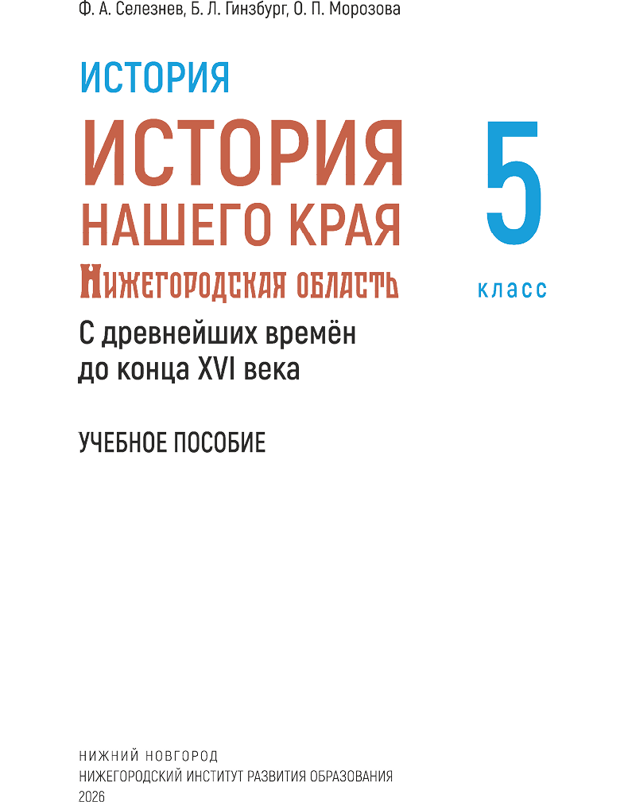
►
[2] УДК 372.016:908
ББК 63.3(2Рос-4Ниж)я72
С29
Авторы
Ф. А. Селезнев, доктор исторических наук, профессор кафедры зарубежного регионоведения и локальной истории, руководитель Центра краеведческих исследований Института международных отношений и мировой истории ФГАОУ ВО «Национальный исследовательский Нижегородский государственный
университет имени Н. И. Лобачевского»
Б. Л. Гинзбург, кандидат исторических наук, доцент,заведующий кафедрой истории и обществоведческих дисциплин ГБОУ ДПО «Нижегородский институт развития образования»
О. П. Морозова, старший преподаватель кафедры истории и обществоведческих дисциплин ГБОУ ДПО «Нижегородский институт развития образования»
Ответственный редактор
С. М. Ледров, кандидат исторических наук, доцент
Рецензенты
Ю. В. Филиппов, доктор педагогических наук, профессор, кандидат философских наук, генеральный директор ГБУК НО «Нижегородский государственный историко-архитектурный музей-заповедник»
И. В. Рыжов, доктор исторических наук, доцент, заведующий кафедрой истории и политики России Института международных отношений и мировой истории ФГАОУ ВО «Национальный исследовательский Нижегородский государственный университет имени Н. И. Лобачевского»
Е. А. Медведева, учитель истории и обществознания МБОУ «Школа № 14 имени В. Г. Короленко» Нижнего Новгорода, почётный работник общего образования Российской Федерации
Селезнев, Ф. А.
С29 История нашего края. Нижегородская область с древнейших времён до конца XVI века : 5 класс : учебное пособие / Ф. А. Селезнев, Б. Л. Гинзбург, О. П. Морозова. — Нижний Новгород : Нижегородский институт развития образования, 2026. — 192 с.
ISBN 978-5-7565-1001-0
В учебном пособии представлены основные этапы истории родного края с древнейших времён до вхождения всей территории современной Нижегородской области в состав единого Российского государства (вторая половина XVI века). История Нижегородского края изложена в связи с общим ходом истории нашей страны.
Издание адресовано учащимся 5-х классов общеобразовательных организаций Нижегородской области.
УДК 372.016:908
ББК 63.3(2Рос-4Ниж)я72
ISBN 9785-7565-1001-0
© Селезнев Ф. А., Гинзбург Б. Л., Морозова О. П., 2026
© ГБОУ ДПО «Нижегородский институт развития образования», 2026
►
[3]Введение
Дорогой друг!
Мы живём в России — стране с более чем тысячелетней историей, самой большой и самой прекрасной стране на Земле.
Необъятность наших просторов, разнообразие природных условий, флоры и фауны, климатических зон и, самое главное, культурное разнообразие живущих здесь народов создали уникальную, не имеющую аналогов в мировой истории страну-цивилизацию.
В России сложилась собственная, самобытная культурная традиция, которую отличают открытость, готовность воспринимать лучшие элементы культур разных народов, гуманизм, высокое нравственное начало, любовь к Родине и ее историческому наследию, уважение к труду, поиск справедливости, почитание прошлого и устремлённость в будущее.
Основой нашего общества, объединяющей все народы необъятной страны в единое целое, являются российская культура, русский язык, духовно-нравственные ценности, выработанные на протяжении исторического развития. Независимо от места проживания, национальности и вероисповедания каждый человек в нашей стране знает стихи Пушкина и Есенина, романы Толстого и Достоевского, музыку Чайковского, картины Репина и Айвазовского.
Но мы неслучайно говорим: Россия — многонациональная страна, в которой живут более ста больших и малых народов. На протяжении столетий они развивались в составе единого государства, и каждый из них вносит свой вклад в процветание и могущество нашей Родины.
В ходе общего исторического развития народы России выработали общие ценности, на которых строятся отношения в нашем обществе. Это патриотизм, служение Отечеству и ответственность за его судьбу, справедливость и милосердие, достоинство и гуманизм, взаимопомощь, уважение к старшим, крепкая семья и созидательный труд, жизнь, основанная на высоких нравственных идеалах. ►
История России — близкая и общая для каждого из нас. Но, подобно тому как воды рек вливаются в море, история России складывается из историй составляющих её больших и малых народов.
Учебник, который ты держишь перед собой, посвящён истории твоего родного края, людей, проживавших на этой земле из поколения в поколение, их обычаям и нравам, жизненным принципам и ценностям, особенностям жизненного уклада.
Ты узнаешь, как жили и трудились предки, как строили отношения с соседями, как развивались язык и культура, познакомишься с произведениями архитектуры, музыки, живописи, литературы, узнаешь о боевых и трудовых подвигах, выдающихся государственных деятелях, военачальниках, учёных, а также деятелях культуры, жизнь которых связана с твоим родным краем.
С историей твоего края ты будешь знакомиться в течение трёх лет – в пятом, шестом и седьмом классах. Последовательно, шаг за шагом, перед твоими глазами будет проходить величественная и увлекательная история жизни многих поколений людей, разворачиваться величественная панорама грандиозных подвигов и свершений твоих предков, которые своим талантом, героизмом, самоотверженностью, верой способствовали процветанию своего родного края и одновременно — строили и укрепляли нашу общую великую Родину — Россию. ►
КАК РАБОТАТЬ С УЧЕБНЫМ ПОСОБИЕМ
Учебное пособие состоит из шести глав, включающих 24 параграфа. Термины, которые могут быть непонятны, выделены полужирным курсивом. Их значение можно узнать в конце параграфа в «Историческом словаре». Наиболее важные имена, термины, выводы, даты параграфа размещены в разделе «Обратите внимание». В пособии представлены карты, фрагменты исторических источников, репродукции картин, фотографии. В начале каждого параграфа перечислены упоминаемые в нём важные события, личности, географические объекты. Все даты до февраля 1918 года даны по старому стилю.
В каждом параграфе содержатся обобщающие фрагменты, раскрывающие связь событий, происходивших в Нижегородском крае, с общим ходом исторического процесса в России. Эти фрагменты вплетены в единую ткань изложения, поскольку нижегородская история в данный период тесно связана с общероссийской и является её естественной частью. Таковы сюжеты, посвященные Владимиро-Суздальской земле, нашествию Батыя, Северо-Восточной Руси в конце XIII — начале XIV в. и т. д.
После некоторых параграфов приводятся отрывки из исторических источников. Учёные называют историческим источником то, что помогает нам узнать о жизни людей в прошлом — вещи, документы, письма, летописи, былины, легенды, фотографии. Тексты используемых исторических источников, переведены на современный русский язык.
При работе с историческим источником, картами, анализе деятельности исторической личности, составлении аргументированного высказывания тебе помогут памятки.
Вопросы и задания после параграфа имеют как базовый уровень, так и углублённый (они выделены знаком «*»), чтобы ты мог проверить свои фактические знания (о событиях, явлениях, исторических деятелях, датах, терминах). С помощью этих заданий ты научишься сравнивать исторические события, выделять главное в тексте, делать выводы, составлять рассказы и планы ответов, совершенствовать свои навыки в проектно-исследовательской деятельности.
►
Задания для итогового повторения даются после каждой главы. К ним надо будет отнестись с особым вниманием. В конце учебного пособия представлены ссылки на интернет-ресурсы. Поработать с новой информацией, ответить на вопросы и выполнить задания можно самостоятельно. Творческие, проектные и исследовательские задания сориентируют на активное взаимодействие с одноклассниками и родителями. И это, мы надеемся, сделает ещё более увлекательным изучение курса краеведения.
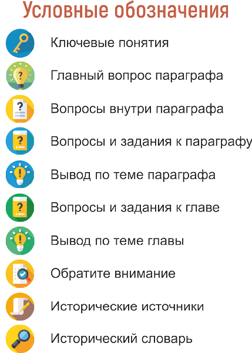
►
Глава I
ДРЕВНИЕ ЖИТЕЛИ
НИЖЕГОРОДСКОГО
КРАЯ
Славянский поселок
Рисунок современного художника
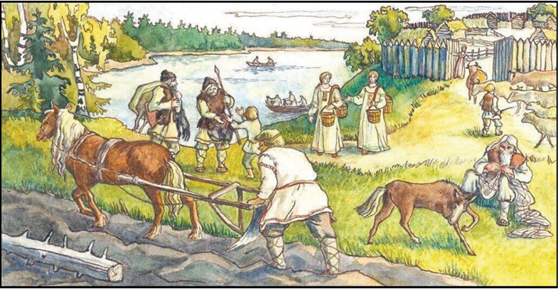
В главе рассказывается о самом древнем периоде в истории Нижегородского края. Вы узнаете о природе и животных доисторического периода и о том, что изучает наука археология. Вам станет известно, как территория современной Нижегородской области заселялась людьми и предки каких современных народов жили здесь в I — начале II тысячелетия нашей эры. ►
§ 1
Нижегородская земля в первобытную эпоху
Тëсла
Стоянка Малое Окулово-19. Нижегородская область
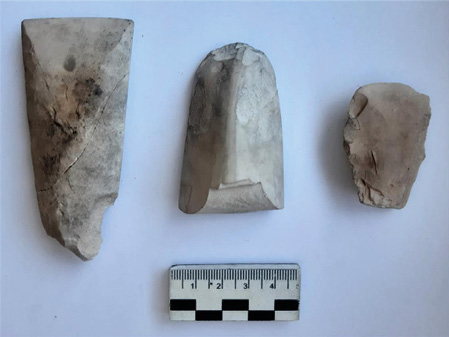
|
|
Как менялся образ жизни древнейшего населения Нижегородского края от каменного до железного века? |
1. Нижегородская земля до заселения человеком.
2. Что изучает археология.
3. Каменный век на территории Нижегородского края.
4. Археологические памятники бронзового века.
5. Железный век.
● Каменный век
● Мамонт
● Бронзовый век
● Железный век
►
1 Нижегородская земля до заселения человеком. Природные условия на территории современной Нижегородской области неоднократно менялись. Её поверхность то представляла собой скалистую безжизненную пустыню, то оказывалась дном моря, то зарастала густыми лесами, то покрывалась ледниковым панцирем толщиной до двух километров.
|
|
До каких мест доходил ледник на территории России? |
Граница ледника иногда перемещалась дальше на юг, иногда отодвигалась к северу. У его пределов расстилалась тундра. За нею следовала лесотундра. Здесь обитали гигантские слоны, заросшие косматой шерстью, — мамонты. Тут же бродили большерогие олени, шерстистые носороги и огромные быки — туры. Кости этих животных можно увидеть во многих музеях Нижегородской области.
В 1930˗х годах у подножия Нижегородского кремля обнаружили фрагменты черепа мамонта. Сейчас они хранятся в коллекции зоологического музея университета Лобачевского в Нижнем Новгороде. Останки шерстистого носорога находили в районе площади Сенной и в Кстовском районе.
А внимание посетителей Павловского исторического музея привлекает череп тура с огромными рогами.
Примерно 10—15 тысяч лет назад в мире произошло резкое потепление. Природа приняла современный вид. После этого территорию нынешней Нижегородской области начали обживать люди.
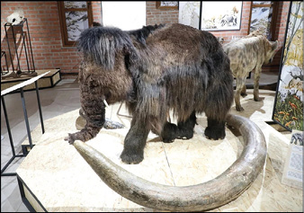
Фрагмент выставки «Мамонт и его спутники»
Нижегородский государственный историко-архитектурный музей-заповедник (НГИАМЗ)
►
2 Что изучает археология. Жизнь людей той далёкой эпохи изучает наука археология.
|
|
Вспомните, что вам известно об археологии. |
Археологи раскапывают в земле остатки древних поселений и орудий труда. В разное время люди изготавливали орудия труда из разных материалов: сначала из камня, потом из меди и бронзы и затем из железа. Поэтому учёные делят историю человечества на каменный, бронзовый и железный века.
3 Каменный век на территории Нижегородского края. Осваивать территорию современной Нижегородской области человек стал в VIII—VI тысячелетиях до нашей эры, в период каменного века. Следы поселения людей той эпохи найдены у села Старая Пу́стынь Арзамасского района, на правом берегу реки Серёжи.
Места, связанные с жизнью древних людей, называются археологическими памятниками. К ним, например, относятся: стоя́нки (остатки временных неукреплённых поселений каменного века), моги́льники (следы древних захоронений), сели́ща и городи́ща (укреплённые поселения). Поселения и стоянки эпохи каменного века найдены вблизи Балахны́ и в других местах Нижегородской области. Например, у села Сако́ны Ардатовского района и в Арзамасе. Учёные установили, что древние жители этих поселений были охотниками. Об этом говорят находки каменных наконечников стрел, обнаруженных при раскопках.
Кремнёвые орудия волосовской культуры
Археологическая экспедиция музея ННГУ. Результаты археологических работ. 2008
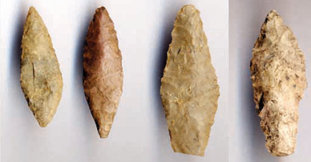
►
Древние люди охотились на лосей, кабанов, медведей, зайцев, бобров (кости именно этих животных сохранились на местах стоянок). Из шкур убитых животных с помощью костяных игл шили одежду.
Жизнь людей стала значительно легче, когда они научились использовать металлы. Сначала это была медь. Она нередко встречается в природе в виде относительно крупных кусочков — самородков. Попав случайно в костёр, медный самородок мог расплавиться и изменить форму. Древние люди обратили на это внимание и постепенно научились изготавливать медные орудия труда.
Медный топор можно было сделать гораздо быстрее каменного. Однако он раньше тупился. К тому же медь встречается не повсеместно. Поэтому наряду с медными по˗прежнему применялись и каменные орудия. Это было переходное время от каменного века к бронзовому.
У деревни Во́лосово Навашинского района, при слиянии рек Тёши и Веле́тьмы, обнаружена стоянка, где были найдены изделия из меди и камня. Находки оттуда украшают экспозицию Государственного исторического музея в Москве.
В обработке камня «волосовцы» достигли совершенства. Сделанные ими каменные ножи для разделки рыбы, наконечники копий и гарпунов вызывают восхищение археологов. Так же как разнообразные кремнёвые и костяные фигурки людей, животных, птиц и рыб.
Кремнёвые и костяные фигурки волосовской культуры
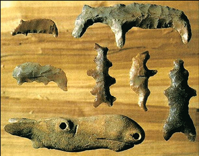
►
Бронзовые фигурки сейминской культуры
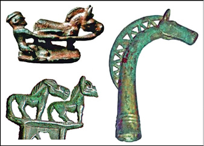
Исходя из археологических находок, исследователи делают вывод, что хозяйство «волосовцев» основывалось на охоте и рыболовстве. Охотиться человеку тогда помогала собака. На волосовской стоянке были обнаружены кости этого животного, первым приручённого людьми.
4 Археологические памятники бронзового века. В III тысячелетии до нашей эры люди сделали важное открытие. Они изобрели бронзу — сплав меди и олова. Орудия из бронзы оказались твёрже и острее медных. Теперь у людей расширились возможности для хозяйственной деятельности. Начался бронзовый век.
Всемирно известный памятник бронзового века был открыт в 1912 году в нескольких километрах от станции Се́йма (современный Володарский район). Произошло это случайно: военные во время учений откопали несколько бронзовых предметов (бронзовые литые топоры, большие наконечники копий, кинжалы). Археологи нашли тут ещё и каменные кольца, вырезанные из белого нефрита.
Бронзовый топор древних людей
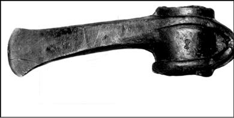
►
Этот красивый редкий камень был добыт в Восточных Сая́нах, около нынешнего Иркутска. Видимо, из тех мест, через Сибирь и Урал, и пришли хозяева найденных под Сеймой предметов. Похожие вещи учёные позднее обнаружили у деревни Турбино́ возле Перми, а также у населённого пункта Ре́шное в Выксунском районе.
К бронзовому веку относится могильник, открытый у деревни Чу́ркино Балахнинского уезда. Там учёные обнаружили кости свиньи, барана, собаки, коровы, лошади. Это значит, что древние жители этих мест были животноводами. Приручение животных и начало их разведения в домашних условиях были для человечества огромным шагом вперёд.
В бронзовом веке на территории Нижегородской области появились и земледельцы. У села Поздняко́во в Навашинском районе найдена стоянка земледельцев бронзового века. Они поселились в низовьях Оки около середины II тысячелетия до нашей эры. Эти люди возделывали землю мотыгами. Изобретение земледелия стало новым великим достижением человечества.
5 Железный век. Очень важные последствия имело и знакомство людей с железом. У нового металла были значительные преимущества перед медью или бронзой. Во-первых, железные руды достаточно широко распространены. Во-вторых, изделия из железа по твёрдости превосходили и медные и бронзовые.Из железа люди научились делать серпы́. Это облегчило уборку зерновых, а значит, развитие земледелия.
Подведём итоги
Осваивать территорию современной Нижегородской области человек стал в VIII—VI тысячелетиях до нашей эры, в период каменного века. Древние люди охотились на лосей, кабанов, медведей, зайцев, бобров. В бронзовом веке на территории Нижегородской области появились земледельцы. Развитие земледелия ускорилось благодаря знакомству людей с железом.
►
|
|
Исторический словарь |
Археологи́ческие памятники — места, связанные с жизнью древних людей.
Городи́ще — остатки древнего укреплённого поселения.
Моги́льники — следы древних захоронений.
Сели́ще — остатки постоянного неукреплённого поселения.
Стоя́нки — остатки временных поселений людей каменного века.
|
|
Обратите внимание |
Археоло́гия — наука, изучающая быт и культуру людей прошлого по сохранившимся вещественным памятникам.
|
|
Сформулируйте вывод по теме параграфа. * Аргументируйте его. |
|
|
Вопросы и задания |
1. Когда человек стал осваивать территорию современной Нижегородской области?
2. Перечислите места Нижегородской области, в которых найдены древнейшие орудия труда.
3*. Подумайте, какое значение для развития земледелия и ремёсел имело освоение людьми металлов.
4*. Выясните вместе с одноклассниками, в каких музеях нашего региона можно узнать об археологических находках. Посетите один из них. На основе увиденного там составьте устный рассказ «Древние ископаемые животные на территории нашего края».
5. Чем городище отличается от селища, а селище от стоянки? Составьте устный рассказ о Нижегородской земле в первобытную эпоху с использованием терминов «стоянка», «городище», «селище».
|
|
Составьте устный рассказ по теме занятия с использованием 2—3 терминов. ► |
§ 2
Предки финно–угорских народов на Нижегородской земле
Женский костюм муромы
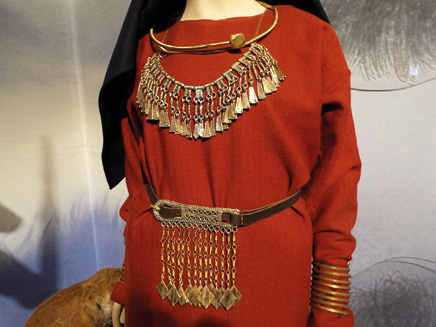
|
|
Каково культурное и топонимическое наследие финно-угорских народов на территории нашего края? |
1. Древние финно-угры на территории современной Нижегородской области.
2. Мордва в древности.
3. Древние марийцы.
4. Мурома.
● Мордва
● Мурома
● Марийцы
● Меря
● Бортничество
● I тысячелетие нашей эры
● Река Керженец
● Река Серёжа
►
1 Древние финно-угры на территории современной Нижегородской области. В I тысячелетии нашей эры в границах современной Нижегородской области обитали представители четырёх финно-угорских народов: мордва́, мари́йцы, му́рома, ме́ря. Мордва занимала юг этой территории, марийцы — северо-восток, мурома — юго-запад, меря — северо-запад (западнее реки Керженец). В образе жизни у них имелось немало общих черт. Основой хозяйства этих народов являлись охота на пушного зверя, бортничество, рыболовство, животноводство, земледелие. Они обожествляли своих предков, которым поклонялись в священных рощах.
2 Мордва в древности. Мордва разделялась на народности э́рзя и мо́кша. Обе они имели свой язык. В Нижегородском крае жили преимущественно эрзяне. На территории современной Нижегородской области находилась северная оконечность расселения древних эрзянских племён. Эрзяне предпочитали селиться вдоль относительно небольших рек, таких как Тёша, Серёжа и Кудьма. Местами их обитания были современные территории Богородского, Кстовского, Дальнеконстантиновского, Вадского, Арзамасского, Шатковского, Первомайского, Дивеевского, Ардатовского, Вознесенского, Кулебакского, Выксунского районов. Здесь нередко встречаются названия сёл и рек мордовского происхождения. Многие из них имеют конечный элемент «лей» (по-эрзянски — «река»).
Мордовский женский костюм
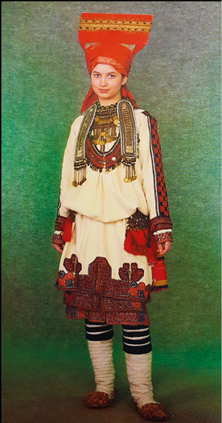
►
Например, сёла Сарле́й и Симбиле́й в Дальнеконстантиновском районе, село Салале́й в Вадском районе. Что касается мокшан, то о них нам напоминают река Мокша́нка и расположенное на ней село Мо́кса в Бутурлинском районе. Изучением географических названий занимается наука топонимика. Её выводы и помогают определить районы обитания разных народов.
В древнемордовском могильнике VI—VII веков близ села Куженде́ево Ардатовского района учёными были обнаружены различные орудия труда: серпы́ и мотыжки, коса, топор, наконечники копий и стрел. Судя по этим находкам, среди занятий древней мордвы присутствовало земледелие. Животноводство (разведение коров и лошадей) носило стойловый характер: летом с помощью кос заготавливали сено на зиму. Своё значение сохранила охота.
Со времени всё большее значение в жизни мордвы приобретало бо́ртничество. Получил распространение особый бортный топор с длинной, узкой, слегка изогнутой лопастью. Им прорубали дупло в дереве, где потом поселялись пчёлы. Такой топор найден археологами в древнемордовском могильнике XI—XIII веков у села Личаде́ево Ардатовского района.
3 Древние марийцы. Марийцы исстари живут на севере современной Нижегородской области, преимущественно к востоку от реки Ветлуги, на территории современных Шарангского, Тонкинского, Тоншаевского районов. Здесь немало населённых пунктов имеют названия, происходящие от марийских слов, таких как «энер» (речка) и «нур» (поле).
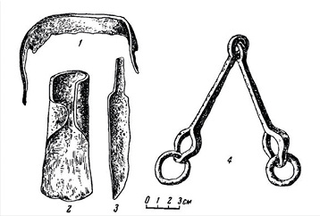
Железные предметы
из Кужендеевского могильника:
1 – скобель, 2 – топор,
3 – нож, 4 – удила
►
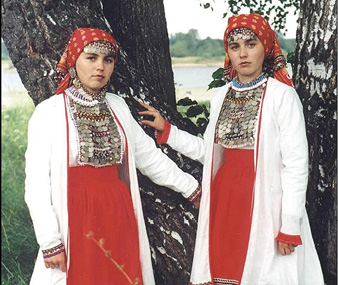
Марийский женский костюм
К их числу относятся Вякшене́р (река и деревня в Тоншаевском районе), Письмене́р (река и две деревни в Тоншаевском районе), Кугла́нур, Ку́шнур (деревни в Шарангском районе). Марийские древности VII—XI веков обнаружены археологами также в Шахунском, Ветлужском и Воскресенском районах.
Древние марийцы были искусными звероловами. Для охоты они использовали лук, стрелы и копьё. Для ловли мелких зверей применялся деревянный капкан. Промышляя белку, марийские охотники использовали стрелы с костяными шишкообразными наконечниками, не портившими шкурки зверя.
Долгие века нижегородские марийцы сохраняли почитаемые их предками священные рощи. Так, например, большой известностью пользуется роща у деревни Большие Ашка́ты в Тоншаевском районе.
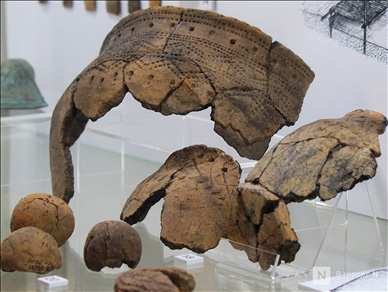
Предметы, обнаруженные в ходе
археологических раскопок на могильнике IX–XI веков племени мурома
НГИАМЗ
►
4 Мурома. Память о муроме сохранилась в названии города Муром. Муромские племена жили преимущественно на левом берегу Оки (нынешний Муромский район Владимирской области). Следы их пребывания найдены учёными и на правобережье Оки — в Выксунском, Навашинском, Вачском, Павловском районах. Так, например, с муромой археологи связывают селище и могильник у села Нижняя Верея́ Выксунского района, могильник у села Звя́гино Вачского района. Благодаря раскопкам мы знаем, что древние представительницы этого народа носили много украшений. Особенно они любили шумящие подвески из бронзы. Интересно, что, по мнению учёных, женщины изготавливали их сами, как и другие ювелирные изделия. Они же лепили из глины посуду. Свою одежду женщина народа мурома всегда подпоясывала кожаным ремнём, богато украшенным металлическими накладками, к которому привешивалось множество предметов обихода. В числе прочих обязательным элементом женского костюма считался нож.
Мурома тесно общались со славянами (преимущественно с кри́вичами) ещё в VII—X веках. Археологи выяснили, что уже тогда в некоторых поселениях одновременно проживали и мурома и славяне. Принятие христианства и возникновение древнерусского города Муром ускорили включение муромы в состав русского народа. Муром стал центром Муромско-Рязанской земли, куда вошла вся племенная территория муромы, включая участок на правом (нижегородском) берегу Оки.
● Шумящая подвеска женщины народа мурома
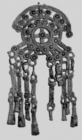
►
Подведём итоги
В I тысячелетии нашей эры в границах современной Нижегородской области обитали представители четырёх финно-угорских народов: мордва́, мари́йцы, му́рома, ме́ря. Основой хозяйства этих народов являлись охота на пушного зверя, бортничество, рыболовство, животноводство, земледелие. На территории Нижегородской области нередко встречаются названия сёл и рек, которые имеют финно-угорское происхождение.
|
|
Исторический словарь |
Бо́ртничество — собирание мёда диких пчёл.
|
|
Обратите внимание |
Мордва, мурома, марийцы, меря — финно-угорские народы, обитавшие в I тысячелетии нашей эры на территории Нижегородского края.
Топонимика — наука, которая изучает географические названия, их происхождение, значение, развитие, написание и произношение.
|
|
Сформулируйте вывод по теме параграфа. * Аргументируйте его. |
|
|
Вопросы и задания |
1. Покажите на карте Нижегородской области предполагаемые места проживания представителей четырёх финно-угорских народов в I тысячелетии нашей эры. Как природные условия могли повлиять на их занятия?
2. Назовите общие черты в образе жизни мордвы и марийцев.
3. Вспомните, представительницы какого из финно-угорских народов украшали одежду шумящими подвесками из бронзы.
4*. С одноклассниками подготовьте устное сообщение о сходстве и различии древнего бортничества и современного пчеловодства.
|
|
Составьте устный рассказ по теме занятия с использованием 2—3 терминов. ► |
§ 3
Волжская Булгария и древняя история Нижегородского края
Булгарское городище. Южный мавзолей
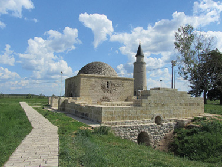
|
|
Как складывались отношения Волжской Булгарии с древним населением Нижегородского края? |
1. Появление булгар на территории к востоку от современной Нижегородской области.
2. Волжская Булгария и Древняя Русь.
3. Следы пребывания булгарских купцов на юге современной Нижегородской области.
● Керамика
● X век
● 985 год
● 986 год
● Поволжье
● Князь Святослав
● Князь Владимир
Красное Солнышко
►
1 Появление булгар на территории к востоку от современной Нижегородской области. К востоку от современной Нижегородской области, ниже по Волге, находится Республика Татарстан. Среди предков живущих там народов были булга́ры. Они поселились на Средней Волге и Каме в конце VII века. Булгары явились сюда, не желая находиться под властью хаза́р. Но те настигли булгар и на новом месте. В IX веке Хазарский кагана́т подчинил своей власти славянские племенные союзы поля́н, северя́н, ради́мичей, вя́тичей, а также народы, жившие южнее и восточнее слияния Оки и Волги: мордву, череми́сов и булгар. С них хазары собирали дань.
От тяжкого хазарского ига народы Поволжья в Х веке освободил русский князь Святослав.
После разгрома хазар Волжская Булгария обрела независимость. Это было богатое государство. Булгары, исстари занимавшиеся скотоводством, славились искусством обработки кожи. Также они считались отличными гончарами. Хорошо развилось у них и земледелие. В летописях отмечены случаи, когда во время неурожая в русских землях булгары снабжали их хлебом.
● Древняя Русь и Волжская Булгария
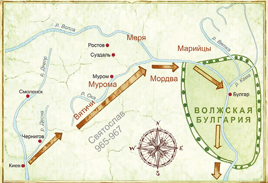
►
Главный их город назывался Булга́р. По сообщениям арабских путешественников, дома в нём были из сосновых брёвен. Город защищала дубовая стена.
Арабы стали часто приезжать в Булгарию после того, как в Х веке её правитель принял ислам. Это укрепило экономические связи булгар с арабским миром. Город Булгар стал центром торговли, куда стекались товары из Арабского халифата, Средней Азии, Руси. Особенно много продавалось пушнины. У булгар имелись речные суда, на которых они плавали по Волге, Оке и Каме. Поднимаясь вверх по Волге и Шексне́, булгарские купцы достигали Белоо́зера, где покупали у северных народов меха бобра и соболя. После обработки булгары с большой выгодой продавали пушнину в другие страны.
2 Волжская Булгария и Древняя Русь. Киевский князь Владимир Красное Солнышко захотел наложить на булгар дань и в 985 году совершил поход в их земли. Однако, одержав победу, он отказался от мысли подчинить булгар, сочтя, что с ними лучше поддерживать добрососедские отношения. Русские и булгары поклялись не воевать. Причём булгары сказали: «Тогда не будет между нами мира, когда камень начнёт плавать, а хмель — тонуть».
Чтобы укрепить дружбу с Русью, булгарские послы в 986 году предложили князю Владимиру отвергнуть язычество и принять ислам — ту религию, которую исповедовали они сами. Владимир отказал им. Русичи выбрали православную веру. Но это не привело к вражде между ними и булгарами. Владимир Красное Солнышко позволил булгарским купцам без опаски торговать в русских городах.
3 Следы пребывания булгарских купцов на юге современной Нижегородской области. Между Булгарией и Русью установились оживлённые торговые связи. Об этом свидетельствуют находки, обнаруженные на юге современной Нижегородской области. Тут проходил караванный путь из Булгарского государства на Муром. Археологами обнаружено здесь немало булгарских вещей — больше всего обломков керамики. Учёные полагают, что жившие тут мордовские племена находились в сфере влияния Булгарского государства.
►
Подведём итоги
К востоку от современной Нижегородской области находится Республика Татарстан. Среди предков живущих там народов были булга́ры. Их государство называлось Волжская Булгария. Булгары торговали с Русью. Об этом свидетельствуют находки, обнаруженные на юге современной Нижегородской области. Тут проходил караванный путь из Булгарского государства на Муром.
|
|
Исторический словарь |
Кагана́т — государство, глава которого носил титул каган.
Кера́мика — изделия из глины.
|
|
Обратите внимание |
Во́лжская Булга́рия — древнее государство, находившееся на месте современной Республики Татарстан.
|
|
Сформулируйте вывод по теме параграфа. * Аргументируйте его. |
|
|
Вопросы и задания |
1. Когда булгары расселились по Средней Волге и Каме к востоку от современной Нижегородской области?
2. Рассмотрите карту в тексте параграфа. Вдоль каких рек, протекающих по современной Нижегородской области, двигалась дружина князя Святослава?
3. Назовите основные хозяйственные занятия булгар.
4. Какая религия была господствующей в Волжской Булгарии?
5*. Подумайте, почему Владимир Красное Солнышко позволил булгарским купцам без опаски торговать в русских городах.
|
|
Составьте письменный или устный рассказ по теме занятия с использованием 2—3 терминов. ► |
§ 4
Восточные славяне в древней истории Нижегородской земли
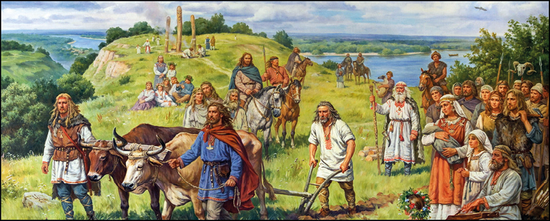
Восточные славяне
Рисунок современного художника
|
|
Почему восточные славяне сыграли важную роль в превращении Нижегородского края в часть Древнерусского государства? |
1. Древние славяне на территории современной Нижегородской области.
2. Языческие пережитки у потомков древних славян.
3. Хозяйство древнерусского населения.
● X–XIII века
● Кривичи
● Вятичи
● Очелье
● Височные кольца
● Бредень
►
1 Древние славяне на территории современной Нижегородской области. В VIII—Х веках к западу от территории современной Нижегородской области находились места обитания славян из племенных союзов кри́вичей и вя́тичей. Они граничили с владениями му́ромы и мордвы́. Во времена Владимира Красное Солнышко земли кривичей, вятичей и муромы вошли в состав Древнерусского государства. Эти племена приняли участие в формировании единой древнерусской народности.
Как считают учёные, этот процесс можно проследить по изменениям в женских украшениях. Основу головного убора славянки составляло оче́лье в виде ленты из бересты (берёсты) или ткани, удерживавшей волосы либо платок.
Остатки такого головного убора XIII века были найдены археологами у деревни Копнино́ Богородского района. Он представлял собой тканую ленту, вышитую позолоченными нитями. Там же учёные обнаружили бронзовые височные кольца. Такие украшения крепили к очелью (иногда вплетали в волосы).
Височные кольца у женщин из разных славянских племён сильно различались. Но в X—XIII веках, то есть в период формирования единой древнерусской народности, в моду вошёл тип височных колец, который встречается у всех восточнославянских племён. Именно такие украшения были найдены у деревни Копнино.
Разные племена, входя в состав единой древнерусской народности, обогащали её своими навыками и умениями. В то же время они сохраняли некоторые обычаи и особенности.
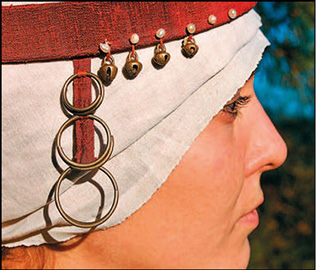
Очелье с височными кольцами
►
Долго не теряли свою самобытность вятичи. В XII веке их земли, прежде находившиеся под властью черниговских князей, оказались в составе Муромско-Рязанского княжества. Это позволило вятичам продвинуться от своих традиционных мест обитания в верховьях Оки и её среднем течении дальше вниз по реке. Так они оказались на территории современной Нижегородской области. Но поскольку эта часть окского правобережья была уже заселена потомками муромы, вятичи должны были искать свободные земли ещё ниже — ближе к месту впадения Оки в Волгу.
2 Языческие пережитки у потомков древних славян. Вода, река играли важную роль в жизни вятичей. Автор «Повести временны́х лет» писал, что они устраивали «игрища» между сёлами. В этих празднествах участвовали юноши и девушки, которые вместе купались и обливали друг друга водой. Эти празднества были посвящены божеству Яри́ле и назывались «Ярилами». Этнографы выяснили, что память о Ярилах сохранялась в Нижегородской области очень долго.
Так, на окраине Нижнего Новгорода, над высоким берегом Оки, много веков было поле, которое так и называлось — Ярило. Когда писатель М. Горький был маленьким мальчиком, бабушка рассказывала ему о гуляньях на этом поле. Их участники «брали колесо, обвёртывали его смолёной паклей и, пустив под гору, с криками, песнями, следили — докатится ли огневое колесо до Оки». Если оно докатывалось, считалось, что лето будет солнечное.
Металлические наконечники остроги
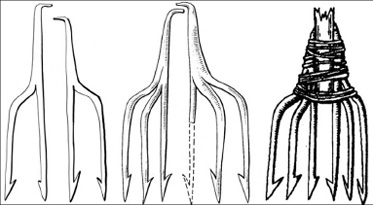
►
3 Хозяйство древнерусского населения. Древнерусские селища XI—XIII веков на территории Нижегородской области, как правило, располагались рядом с Окой или впадающими в неё речками и ручьями. Во время раскопок там обнаружены рыбья чешуя и большое количество приспособлений для рыбной ловли (крючки, глиняные грузила и остроги́).
Керамические грузила — обычная принадлежность волоковых сетей, например, бредня (рыбаки брели по реке, таща его за собой). Бредни и прочие сети плели с помощью костяных игл, также найденных на нижегородских древнерусских селищах. Острого́й били рыбу с лодки.
В изготовлении лодок древние славяне достигли большого искусства. Делали это они с помощью топора, тесла́, долота́, ско́беля. На древнерусских селищах Нижегородской земли археологи довольно часто находят эти инструменты. Железо для их изготовления наши предки добывали из руды, которую умели находить на болотах. Её обжигали в ямах или печах, получая в результате пористую железную массу — кри́цу.
Из крицы древнерусские кузнецы выковывали и многие другие орудия, а также предметы быта и вооружения: серпы, ножи, ши́лья, дверные кольца, ско́бы, гвозди, иглы, дужки для вёдер, наконечники стрел. На основании всех этих находок можно заключить, что первые русские на территории современной Нижегородской области были рыбаками и земледельцами, знали толк в обработке дерева и железоделательном производстве.
Подведём итоги
В VIII—Х веках в верховьях Оки обитали славяне из племенного союза вя́тичей. В поисках лучших мест для рыбной ловли они постепенно продвигались вниз по Оке и дошли до её устья. Первые русские (славяне) на территории современной Нижегородской области были рыбаками и земледельцами, знали толк в обработке дерева и железоделательном производстве.
►
|
|
Исторический словарь |
Оче́лье — лента из бересты (берёсты) или ткани, удерживавшая волосы либо платок (от слова «чело» — лоб).
Острога́ — орудие для добычи крупной рыбы (сом, судак), длинная палка, на конец которой надета железная насадка с острыми зубьями.
Кри́ца — пористая масса, получаемая из болотной руды, из которой древние кузнецы ковали железные изделия.
|
|
Обратите внимание |
Этно́граф — учёный, изучающий культуру и быт разных народов.
|
|
Сформулируйте вывод по теме параграфа. * Аргументируйте его. |
|
|
Вопросы и задания |
1. Какие племенные союзы в VIII—Х веках, граничившие с территорией современной Нижегородской области, приняли участие в формировании единой русской народности?
2. По иллюстрации в тексте опишите головной убор славянки.
3*. Используя текст параграфа и ресурсы сети Интернет, составьте небольшой рассказ об истории племенного союза вятичей.
4*. Подумайте, какие археологические находки свидетельствуют о том, что среди занятий древнерусского населения присутствовало земледелие.
5*. Почему древнерусские селища XI—XIII веков на территории Нижегородской области археологи, как правило, находят рядом с Окой и впадающими в неё речками и ручьями?
|
|
Составьте письменный или устный рассказ по теме занятия с использованием 2—3 терминов. |
►
|
|
Сформулируйте вывод по теме главы. * Аргументируйте его. |
|
|
Вопросы и задания к главе I |
1*. Найдите на карте Нижегородской области и выпишите в тетрадь названия населённых пунктов и рек мордовского, марийского или иного финно-угорского происхождения. Что означают эти названия в переводе на русский язык? Как называется направление языкознания или лингвистики, которое изучает географические названия?
2. Представьте, что вы нижегородский купец, следующий с товаром из города Булгара в город Муром. Какой товар вы везёте? Опишите свой путь. Для подготовки рассказа используйте карту из параграфа 3.
3. Назовите места расселения вятичей и составьте рассказ об их занятиях.
4. Вы можете принять участие во Всероссийском проекте «Народов много — Родина одна», который проходит под девизом «Мы ценим единство, бережно храним наши традиции, любим свою Родину, чтим труд, уверены в безопасности, равенстве и справедливости, дорожим нашей свободой и достоинством».
5. Если бы у вас была возможность поучаствовать в конкурсе «Знай наших» агентства стратегических инициатив (АСИ) и фонда Рос-конгресс, то какой знаменитый товар из нижегородской истории вы могли бы представить?
Итоги главы
Осваивать территорию современной Нижегородской области человек стал в VIII—VI тысячелетиях до нашей эры, в период каменного века. В I тысячелетии нашей эры в границах современной Нижегородской области обитали представители четырёх финно-угорских народов: мордва́, мари́йцы, му́рома, ме́ря.
Через юг современной Нижегородской области проходил караванный путь из Волжской Булгарии на Муром.
Первые русские на территории современной Нижегородской области были рыбаками и земледельцами, знали толк в обработке дерева и железоделательном производстве. Они были потомками славян из племенного союза вя́тичей. ►
Глава II
ГОРОДЕЦ И НИЖНИЙ НОВГОРОД — ПОГРАНИЧНЫЕ КРЕПОСТИ ВЛАДИМИРО-СУЗДАЛЬСКОГО КНЯЖЕСТВА
Памятный знак «Первые нижегородцы»
Скульптор В. И. Бебенин, архитектор В. В. Воронков. 1976
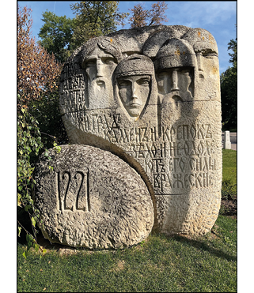
В главе рассказывается об освоении нашего края русскими людьми. Древняя Русь в те далёкие времена распалась на отдельные княжества. Самым сильным из них стало Владимиро-Суздальское. На его восточной границе в XII — начале XIII века появились крепости — Городец и Нижний Новгород. Вы узнаете о жизненном пути основателя Нижнего Новгорода князя Юрия Всеволодовича. Из этой главы вам также станет известно, как с историей Нижегородской земли связана биография Александра Невского — великого полководца и государственного деятеля Древней Руси. ►
§ 5
Городец на Волге при Юрии Долгоруком и Андрее Боголюбском
Стела на въезде в город Городец
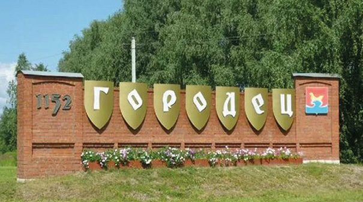
|
|
Почему Городец на Волге стал важнейшим форпостом Владимиро-Суздальского княжества на восточных рубежах при Юрии Долгоруком и Андрее Боголюбском? |
1. Борьба Юрия Долгорукого за Киев.
2. Основание Городца и его древнейшие укрепления.
3. Андрей Боголюбский и древний Городец.
● Залесская земля
● Ростово-Суздальское
княжество
● город Городец
● Княжья гора
● Юрий Долгорукий
● Андрей Боголюбский
● 1152 год
● 1164 год
● 1171 год
►
1 Борьба Юрия Долгорукого за Киев.
|
|
В Москве поставлен памятник князю Юрию Долгорукому. Как вы думаете, почему? |
Юрий Долгорукий был одним из сыновей киевского князя Владимира Мономаха. Ещё в юности отец отправил сына княжить на окраину Руси — в Зале́сскую, или Низо́вскую, землю. Третье её название было Росто́во-Су́здальская земля.
Зале́сской она именовалась потому, что от Киева находилась за дремучими лесами. Освоение её шло от Новгорода: русские люди плыли вниз по Волге и другим рекам. Поэтому и прозвали эту землю Низовской. Название Ростово-Суздальская указывало на её главные города: Ростов Великий и Суздаль.
Юрий бо́льшую часть жизни провёл в Суздале. Однако он всегда помнил о городе своего детства — Киеве и надеялся туда вернуться. Но в этом столичном городе, вопреки старшинству, утвердился его племянник — Изяслав. Юрий Долгорукий долго боролся со своим племянником за столицу Руси и прилегающие к Киеву города, однако в 1151 году был вынужден признать своё поражение. Удручённый и расстроенный, Юрий вернулся в Суздаль. Что оставалось ему делать?
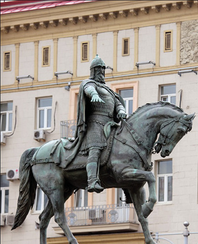
Памятник Юрию Долгорукому в Москве
Скульпторы С. М. Орлов, А. П. Антропов, Н. Л. Штамм, архитектурное оформление В. С. Андреева. 1954
►
Довольствоваться Ростово-Суздальской землёй: возвести там новые города для своих сыновей и украсить старые. Этим Юрий Долгорукий и занимался в 1152—1154 годах, прекратив на время борьбу за киевский великокняжеский престол.
|
|
Основание каких городов связывают с именем Юрия Долгорукого? |
2 Основание Городца и его древнейшие укрепления. Одним из новых городов, основанных Юрием Долгоруким, стал Городец. Это самый древний из городов Нижегородской области. Он был построен в 1152 году, после нападения булгар на один из волжских городов Ростово-Суздальской земли — Ярославль. Городец был поставлен в узком месте Волги, со множеством мелей и островков. Здесь было удобнее всего задерживать булгар во время войны или брать с них пошлины в мирное время.
Крепость, возведённая в 1152 году, находилась в прибрежной части нынешнего Городца. Она расположилась на высокой горе, ограниченной двумя параллельно врезающимися в левый берег Волги оврагами. Старожилы до сих пор называют это место Княжьей горой. Оно было выбрано для закладки города не случайно. Внизу под горой бил родник и протекал ручей. Следовательно, жителям крепости не пришлось бы испытывать недостатка в питьевой воде.
С укреплений Городца русские витязи зорко следили: не покажется ли из низовий Волги враг. Городец встал на дальних рубежах ростово-суздальских земель как город-часовой, город-воин.
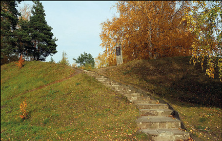
Древний вал в Городце
►
Одновременно он играл важную роль в торговле Руси с Булгарией и восточными странами.
3 Андрей Боголюбский и древний Городец. Изначальная городецкая крепость простояла около десяти лет, а потом была сожжена. Сделали это, скорее всего, булгары, которым Городец мешал свободно плавать по Волге.
В Ростово-Суздальской земле тогда княжил Андрей Боголюбский. Он не мог оставить это нападение без ответа. В 1164 году князь лично отправился в поход на булгар. В Городце он пристал к берегу и повелел построить здесь новую мощную крепость.
Огромная по меркам Древней Руси территория — примерно в 60 гектаров — была по велению князя окружена ва́лом и рвом. В результате Городец стал одним из крупнейших русских городов. Он был больше древних Суздаля и Рязани, не говоря о Москве, которая в то время была небольшой крепостцой.
Современная высота городецкого вала достигает 7,5 метра, а в древности он был в два раза выше. За прошедшие столетия вал порос могучими соснами. Внушительно выглядит и примыкающий к валу ров. Его глубина около 5 метров, а ширина — от 18 до 24 метров.
Князь Андрей был сыном Юрия Долгорукого. Как и его отец, он строил и укреплял города. Прославился он и ратными подвигами.
Во времена Андрея Боголюбского Городец впервые упоминается в летописи. Это известие относится к зиме 1171/72 года. Тогда Андрей Боголюбский отправил своего сына Мстислава в поход на булгар, и тот по пути прибыл в Городец.
Андрей Боголюбский был добр к людям и умел прощать. Но, как замечает летописец, «всякий, кто держится добродетели, не может не иметь многих врагов». Летописцы рассказывают, что заговорщики ночью убили князя. Вероломных убийц наказал младший брат Андрея Боголюбского Всеволод Большое Гнездо. Прозвище «Большое Гнездо» он получил из-за того, что имел много детей. Один из его сыновей, Юрий, как вы узнаете далее, стал основателем Нижнего Новгорода.
►
Подведём итоги
Одним из городов, основанных Юрием Долгоруким, стал Городец. Это самый древний из городов Нижегородской области. Он был построен в 1152 году. Позднее Андрей Боголюбский повелел возвести в Городце новую мощную крепость.
|
|
Исторический словарь |
Вал — оборонительное заграждение, представляющее собой земляную на́сыпь.
|
|
Обратите внимание |
1152 год — основание Городца.
|
|
Сформулируйте вывод по теме параграфа. * Аргументируйте его. |
|
|
Вопросы и задания |
1. Найдите на карте и опишите положение Городца. Кто и когда его основал?
2. Какие ещё названия имела Ростово-Суздальская земля? Объясните их происхождение.
3. Охарактеризуйте значение Городца для Владимиро-Суздальской земли и Руси.
4*. Совершите с друзьями экскурсию в Городец. Опишите увиденное в сочинении «Городец — город-крепость и город мастеров».
5*. Подумайте и ответьте, о чём может свидетельствовать размер площади застройки Городца Андреем Боголюбским.
|
|
Составьте небольшой рассказ по теме занятия с использованием перечня терминов, дат и личностей, помещённого в начале параграфа. ► |
§ 6
Основатель Нижнего Новгорода —
князь Юрий Всеволодович
Памятник Георгию (Юрию) Всеволодовичу и епископу Симону в Нижегородском кремле
Скульптор В. И. Пурихов. 2008
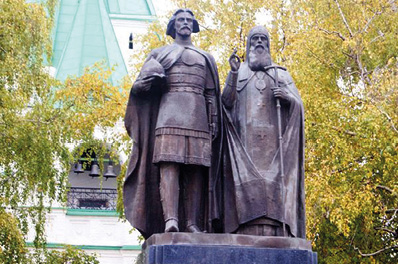
|
|
Какую цель преследовал князь Юрий Всеволодович, основывая Нижний Новгород в устье Оки, и почему это событие стало поворотным в истории края? |
1. Юрий Всеволодович и епископ Симон.
2. Война Юрия Всеволодовича с булгарами в 1219—1220 годах.
3. Основание Нижнего Новгорода.
4. Юрий Всеволодович и мордовские князья Пуреш и Пургас.
● Юрий Всеволодович
● Константин Всеволодович
● Василько Константинович
● Епископ Симон
● Река Почайна
● Междоусобица
● Ладья
● 1216 год
● 1218 год
● 1221 год
►
1 Юрий Всеволодович и епископ Симон. Основатель Нижнего Новгорода Юрий (Георгий) Всеволодович был вторым сыном великого князя владимирского Всеволода Большое Гнездо.
Старший сын Всеволода, Константин, однажды проявил непослушание по отношению к отцу. Тогда Всеволод Большое Гнездо объявил, что поручает Юрию быть старшим в роду и править в главном городе княжества — Владимире. Юрий Всеволодович подчинился повелению отца. Однако отношения с братом были испорчены. Константин сильно обиделся.
Когда в 1212 году Всеволод Большое Гнездо ушёл из жизни, Константин не признал верховенства младшего брата. Между Константином и Юрием началась затяжная ссора. Междоусобица тянулась несколько лет. Наконец братья поделили Низовскую землю.
|
|
Вспомните, какую землю на Руси тогда называли Низовской (см. параграф 5). |
Константин стал править в Ростове, Юрий Всеволодович — во Владимире и Суздале. Разделено было и церковное управление Низовской землёй. Свои епи́скопы были поставлены в Ростовском и Владимиро-Суздальском княжествах.
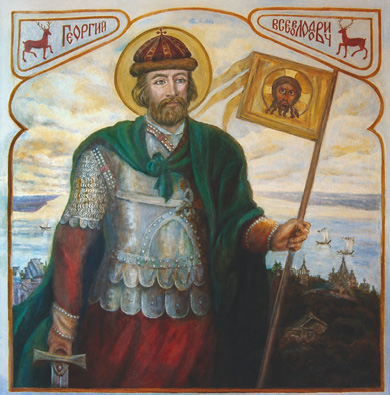
Основатель Нижнего Новгорода Георгий (Юрий) Всеволодович
Художник Н. А. Генкина. 2005
►
Епископом Владимира и Суздаля стал Си́мон. Один из образованнейших людей своего времени, он стал для Юрия Всеволодовича наставником и верным спутником.
В 1216 году Симон последовал за князем в ссылку в Городец. Туда Юрия отправил брат Константин после того, как нанёс ему поражение в битве и отнял у него Владимир и Суздаль.
В ту невесёлую пору, наскоро погрузившись в ладьи, Юрий и его близкие поплыли вниз по Кля́зьме, затем по Оке. На устье Оки необходимо было сделать остановку, поскольку дальше предстояло идти против течения уже по Волге. Так Юрий Всеволодович оказался на месте, где через пять лет будет основан Нижний Новгород. Красота этого места не могла оставить изгнанников равнодушными.
Пребывание Юрия в Городце было недолгим. Через год Константин помирился с братом.
2 Война Юрия Всеволодовича с булгарами в 1219—1220 годах. В феврале 1218 года Константин скончался. Юрий Всеволодович стал великим князем. Своему племяннику, сыну Константина, Василько́, Юрий выделил города Ростов Великий и У́стюг. Булгары, узнав об этом, отправились в поход на давно мешавший им Устюг и хитростью взяли его (1219). Но Юрий не дал племянника в обиду. По его почину за Василько вступилось всё потомство Всеволода Большое Гнездо.
Возглавить поход на булгар, состоявшийся летом 1220 года, Юрий поручил своему брату Святославу. Свои полки́ Юрий тоже послал, поручив руководство ими опытному воеводе Еремею Глебовичу. По зову Юрия явились и дружины муромских князей. Все они соединились в устье Оки и поплыли в Булгарскую землю вниз по Волге.
Русские рати одержали полную победу. Возможно, именно тогда у князя Юрия и возникла мысль поставить город в устье Оки, вблизи булгарских земель. Добровольно булгары не согласились бы на его постройку. Оставалось только склонить их к этому военным путём. И Юрий Всеволодович начал готовиться к походу.
Напуганные булгары отправили к нему послов с просьбой о мире. Но чтобы условия договора оказались наиболее выгодными, Юрию нельзя было сразу соглашаться с предложениями противоположной стороны.
►
Поэтому владимирский князь был непреклонен. Он начал собирать воинов, а Василько Константиновича послал в Городец — молодой князь должен был там ждать подхода основных сил.
Узнав об этом, взволнованные булгары решили уладить дело миром и направили посольство к Юрию. Верный избранной тактике, Юрий опять отпустил булгарских послов без мира. После этого он отправился в Городец, где уже находился Василько. Сюда прибыло третье булгарское посольство «со многими дарами и челобитьем». Только тогда Юрий дал им мир.
3 Основание Нижнего Новгорода. Следствием этого договора стало усиление Владимиро-Суздальской Руси и расширение её восточных пределов. Впервые владимирские князья установили свою власть на правом берегу Оки.
Здесь, в месте, где Ока впадает в Волгу, Юрий Всеволодович в 1221 году повелел заложить новый город — Новгород. На Руси уже были города с таким названием. Старейшим был Новгород Великий. Чтобы не было путаницы, Новгород, основанный Юрием Всеволодовичем, стали именовать Новгородом Низовской земли, или для краткости — Новгородом Нижним, а потом — Нижним Новгородом.
Георгий (Юрий) Всеволодович объезжает на ладьях земли у устья Оки
Художник Г. П. Мальцев. 1912
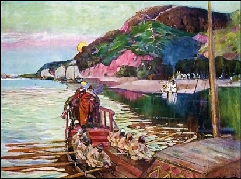
►
Город был возведён на вершинах окского и волжского берегов, с древности называвшихся Дятловыми горами. Естественной защитой для новой крепости служила река Поча́йна.
По легенде, такое красивое имя этой небольшой реке дал сам Юрий Всеволодович. Видимо, князь последовал совету своего духовного наставника, епископа Симона, проведшего молодые годы в Киево-Печёрском монастыре и хорошо знакомого с природой Киева. Симон, должно быть, восхитился чудесным сходством здешних мест с гористыми кручами Киева, где в широкий Днепр впадала маленькая Почайна.
И в печали и в радости епископ Симон был рядом с Юрием Всеволодовичем. Неслучайно установленный в Нижегородском кремле в феврале 2008 года памятник изображает Юрия Всеволодовича рука об руку со своим духовным наставником.
С именами Юрия Всеволодовича и Симона связано строительство новых храмов, украсивших Владимиро-Суздальскую землю. Среди них была и каменная церковь Святого Спаса, заложенная Юрием Всеволодовичем в Нижнем Новгороде в 1225 году. Она была украшена замечательной резьбой по камню.
4 Юрий Всеволодович и мордовские князья Пуреш и Пургас. К югу от Нижнего Новгорода начинались мордовские земли. Через них из Волжской Булгарии шли пути на Рязань и Муром.
Мордва платила дань булгарам. А мордовские князья были подчинены Булгарии. Но после основания Нижнего Новгорода один из мордовских правителей — Пу́реш — принёс присягу в верности Юрию Всеволодовичу.
Это привело к новому разрыву мирных отношений между Владимиро-Суздальской Русью и Булгарией. Возникли два враждебных союза. С одной стороны, Юрий Всеволодович, муромские князья, а также половцы и Пуреш, с другой — правители булгар и Пу́ргас. Военные действия продолжались с 1224 по 1229 год.
В 1229 году у русских, мордвы и булгар появился общий враг — монголы. Монгольская опасность заставила русских и булгар заключить мирный договор.
►
Памятка
Как работать с историческим источником
Прочитайте предложенный исторический текст, ответьте на вопросы и выполните задания:
1. Как называется источник?
2. Когда источник создан?
3. Выделите с учителем незнакомые слова и «переведите» их.
4. Найдите в тексте исторические факты.
5. Вместе с учителем «переведите» историческую информацию.
|
|
Знакомимся с историческим источником |
Летописец о том, как помирились братья Константин и Георгий (Юрий) Всеволодовичи
Того же лета послал Константин Всеволодович за братом своим в Городец, зовя его к себе во Владимир. Он же пришёл к нему с епископом своим Симоном и с боярами своими. Константин же договорился с ним о том: «После моей жизни Владимир отойдёт тебе, а сейчас иди в Суздаль». И водил его ко кресту, и одарил его дарами многими, и отпустил его в Суздаль. И вошёл Георгий в Суздаль 11 сентября. А епископ Симон с ним вошёл в свою епископию.
Подведём итоги
Основатель Нижнего Новгорода Юрий (Георгий) Всеволодович был владимирским князем. В 1220 году его войска совершили удачный поход на булгар. После победы Юрий Всеволодович повелел заложить новый город на устье Оки. Он стал называться Нижний Новгород. Это было в 1221 году.
►
|
|
Исторический словарь |
Епи́скоп — священнослужитель, руководящий епа́рхией — церковной областью.
|
|
Обратите внимание |
Георгий (Юрий) Всеволодович — владимирский князь, основатель Нижнего Новгорода.
1221 год — основание Нижнего Новгорода.
Установленный в Нижегородском кремле в феврале 2008 года памятник изображает князя Юрия Всеволодовича рука об руку со своим духовным наставником епископом Симоном.
|
|
Сформулируйте вывод по теме параграфа. * Аргументируйте его. |
|
|
Вопросы и задания |
1*. Подготовьте сообщение о духовном наставнике Юрия Всеволодовича епископе Симоне.
2*. Прочитайте текст исторического источника. Как вы думаете, почему Константин решил помириться со своим братом Юрием?
3. Найдите на карте Нижний Новгород и охарактеризуйте его местоположение.
4. Расскажите об основании Нижнего Новгорода и его первых строениях.
5. Подумайте, что заставило русских и булгар в 1229 году завершить войну.
6*. Побывайте на экскурсии и создайте с одноклассниками проект «Памятники, здания и памятные знаки Нижегородского кремля, посвящённые людям, жившим в 1220-х годах».
|
|
Составьте небольшой рассказ по теме занятия с использованием терминов, дат и личностей. ► |
§ 7
Князь Юрий Всеволодович и монгольское нашествие
Битва на реке Сити
Миниатюра из Лицевого летописного свода XVI века
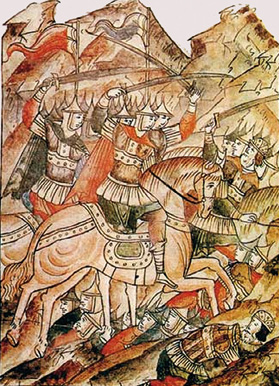
|
|
Какую цену заплатил князь Юрий Всеволодович за попытку защитить Русь от монгольского нашествия? |
1. Помощь Юрия Всеволодовича Рязанскому княжеству.
2. Битва на реке Сить.
3. Монголы на территории современной Нижегородской области в 1239 году.
● Хан Батый
● Еремей Глебович
● Воевода Пётр
● Город Коломна
● Река Сить
● 4 марта 1238 года
►
1 Помощь Юрия Всеволодовича Рязанскому княжеству. В XIII веке русские княжества и соседние с ними земли подверглись страшной опасности. На них напало огромное войско кочевников-монголов во главе с ханом Баты́ем.
Первой монгольскому нашествию подверглась Волжская Булгария. В 1236 году монголы захватили её столицу и сожгли булгарские города. Пострадали и мордовские земли. В декабре 1237 года настал черёд Руси. Орда́ Батыя вторглась в Рязанское княжество. На помощь рязанцам владимирский князь Юрий Всеволодович послал своего сына Всеволода и воеводу Еремея Глебовича. Однако, когда владимирский отряд пришёл в пограничный рязанский город Коломну, Рязань уже пала. Здесь, в Коломне, владимирцы и встретили врага, двигавшегося от испепелённой Рязани вверх по Оке. В ходе кровавой сечи погиб монгольский военачальник Кулька́н, дядя Батыя. Защищая Коломну, от которой начинался путь на Москву, сложил свою голову и Еремей Глебович.
● Нашествие Батыя на Русь
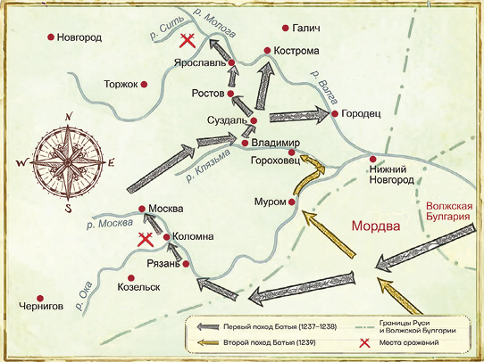
►
Увы, чужеземца остановить не удалось. Небольшое количество оставшихся в живых русских воинов во главе с Всеволодом отступили во Владимир.
2 Битва на реке Сить. Орда Батыя была хорошо вооружена и многократно превосходила в численности дружину Юрия Всеволодовича. Князь Юрий понял, что без помощи ему не обойтись. Но где собрать рати из разных русских земель? К Владимиру до прихода Батыя они бы уже не успели. Удобнее всего было соединить общие силы на Волге — значит, нужно немедленно ехать туда, предварительно выслав гонцов! Но не падут ли духом жители Владимира, если князь покинет столицу? Как дать им понять, что он обязательно вернётся? И Юрий оставляет в городе самое дорогое — семью. Оборону же столицы поручает сыновьям и воеводе Петру.
С небольшим воинским отрядом Юрий Всеволодович уехал на Волгу. Если бы Владимир продержался несколько недель, князь успел бы вернуться с войском. Монголы могли оказаться между двух огней — крепостью и подошедшей русской ратью. Это был единственный шанс на победу. Увы, Владимир пал уже на пятый день, поскольку монголы применили китайскую осадную технику, с которой русские не были знакомы. Захватчики использовали камнеметательные орудия. С их помощью они сделали несколько проломов в стенах и через них ворвались в город.
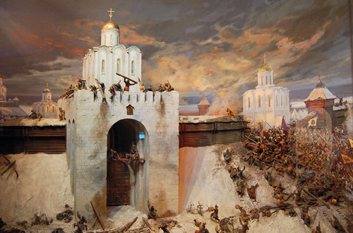
Диорама «Решающий штурм
города Владимира войсками хана Батыя 7 февраля 1238 года» (фрагмент)
Владимиро-Суздальский музей-заповедник
►
Жена Юрия Всеволодовича, их внуки и снохи, а также бояре и множество простого народа укрылись в Успенском соборе. Враги подожгли его, а потом выбили двери. Княгиня с внуками и снохами погибла в пламени пожара. Убиты были старшие сыновья князя.
После взятия столицы отряды Батыя рассыпались по всей Владимиро-Суздальской земле в поисках Юрия Всеволодовича. Один из монгольских полков ринулся на Городец, «попленив», как повествует летописец, «всё по Волге». Между тем Юрий Всеволодович с полками, собравшимися из разных городов, ждал врага на реке Сить (притоке Моло́ги). С ним были брат Святослав и племянник Василько Константинович. Юрий уже знал о падении Владимира и гибели своей семьи. Но когда появились монголы, князь, как пишет летописец, «отложил свою печаль» и повёл рать в бой. Это случилось 4 марта 1238 года. Летописец сообщает, что «сеча была зла». Юрию было суждено пасть на поле брани.
3 Монголы на территории современной Нижегородской области в 1239 году. Монголы вскоре покинули русские земли, но через год вернулись вновь. Их целью теперь была южная Русь: Чернигов и Киев.
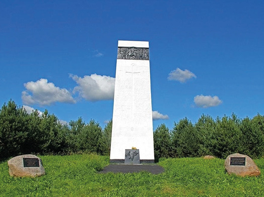
Памятник в честь битвы на реке Сити у деревни Лопатино Ярославской области
Скульпторы Б. В. Бухта и Е. В. Пасхина. 1980
►
Один из монгольских отрядов в конце 1239 года обрушился на юг современной Нижегородской области (нынешние Арзамасский, Ардатовский, Навашинский районы). Монголы прошли эти населённые мордвой земли и, преодолев Оку, сожгли Муром. Затем вдоль Оки захватчики поднялись до устья Клязьмы и разорили земли вдоль этой реки до Гороховца, который был ими предан огню. Как повествует летописец, случился тогда переполох во всей Суздальской земле и люди не знали, куда бежать от страха. К счастью, монголы от Гороховца вернулись в свои станы.
В том же 1239 году гроб с телом Юрия Всеволодовича перевезли из Ростова Великого, где он первоначально нашёл упокоение, во Владимир. Плачем огласился весь город. Владимирцы со слезами вспоминали своего погибшего князя. Добрую память сохранили о нём и потомки. Православная церковь причислила основателя Нижнего Новгорода Юрия Всеволодовича к лику святых как святого и благоверного князя. День его памяти — 17 февраля.
|
|
Знакомимся с историческим источником |
Летописец о битве на реке Сить
Князю же великому Юрию весть пришла на реку на Сить: «...как Владимир взят был и сущие в нём взяты, а к тебе идут». Он же был в великой кручине и послал Дорожа в разведку с тремя тысячами, искать татар. Тот же прибежал, говоря: «Господине, княже, уже обошли нас татары!» Тогда князь великий с братом Святославом и племянниками Василько, и Всеволодом, и Владимиром ударил против них. И была сеча злая, и победили русских князей. Тут же убиен был князь Юрий Всеволодович, а Василько Константиновича руками скрутили и принуждали его перейти на их сторону, но он отказался, хотя они его много мучили. Тогда они предали его смерти и бросили в лесу…
►
Подведём итоги
В XIII веке на русские княжества напало огромное войско кочевников монголов во главе с ханом Баты́ем. Юрий Всеволодович с полками, собравшимися из разных городов, ждал врага на реке Сить. 4 марта 1238 года там произошла битва между русскими и монголами. Юрий Всеволодович пал на поле брани.
|
|
Исторический словарь |
Орда́ — монгольское конное войско.
|
|
Обратите внимание |
17 февраля — день памяти Юрия Всеволодовича.
|
|
Сформулируйте вывод по теме параграфа. * Аргументируйте его. |
|
|
Вопросы и задания |
1*. Кто возглавил войска, направленные Юрием Всеволодовичем на помощь Рязанскому княжеству?
2*. Дайте оценку деятельности князя Юрия Всеволодовича. За что, на ваш взгляд, его сегодня называют «благоверным»?
3. Почему Юрий Всеволодович не стал лично руководить обороной Владимира?
4*. Прочитайте текст исторического источника. Дополните им текст учебника и составьте рассказ о битве на реке Сить.
5. Раскройте последствия для Нижегородчины и Русского государства битвы на реке Сить.
6. Какие территории на юге современной Нижегородской области подверглись жестокому нападению монголов в 1239 году?
|
|
Составьте небольшой рассказ по теме занятия с использованием перечня терминов, дат и личностей, данного в начале параграфа. ► |
§ 8
Александр Невский в истории Нижегородского края
Памятник Александру Невскому в Нижнем Новгороде
Авторский коллектив под руководством скульптора А. Н. Ковальчука. 2021
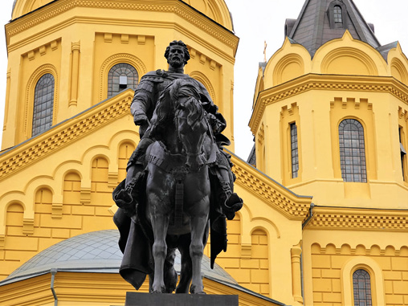
|
|
Какую роль сыграл Александр Невский в истории Нижегородского края? |
1. Нижегородские земли после нашествия Батыя.
2. Александр Невский и Нижегородский край.
3. Память об Александре Невском на Нижегородской земле.
● Владимирская дорога
● Золотая Орда
● Город Сарай
● 1256 год
● 1263 год
● Хан Берке
►
1 Нижегородские земли после нашествия Батыя. Нашествие Батыя нанесло тяжёлый ущерб русским землям. Были разрушены многие города. Судя по данным археологов, Городец тоже был сожжён монголами. Однако возрождению города способствовало его удобное географическое положение. Он стоял там, где к Волге выходила сухопутная дорога от Суздаля и начинался водный путь в Золотую Орду.
Река Волга стала главным торговым путём Золотой Орды. Это благоприятствовало развитию волжских городов, в том числе Городца и Нижнего Новгорода, который во время нашествия хана Батыя, скорее всего, уцелел. В летописях нет никаких известий о его уничтожении монголами.
Нижний Новгород являлся первым русским городом на пути из Золотой Орды. Через него проходила дорога в татарские земли как от Суздаля (через Городец), так и от Владимира. Причём от Владимира до Нижнего можно было добраться и водным (по рекам Клязьме и Оке), и сухим путём.
Дороги в XIII—XIV веках через Нижний Новгород и Городец
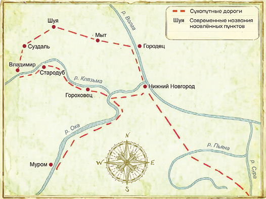
►
Сухопутная владимирская дорога с годами приобретала всё более важное значение, рос и экономический вес Нижнего Новгорода, в своём развитии постепенно догонявшего Городец.
Владимирская дорога шла мимо Гороховца, чуть выше устья Клязьмы она пересекала Оку и на территории современного Богородского района соединялась с путём из Мурома. Она пролегала по правому берегу Оки и, таким образом, подходила к Нижнему Новгороду с юга.
2 Александр Невский и Нижегородский край. Александр Ярославич Невский прославился своими победами над шведами и немцами.
|
|
Узнайте, победы в каких битвах Александр Невский одерживал над шведами и немцами. |
В качестве великого князя владимирского Александру Ярославичу приходилось неоднократно посещать столицу Золотой Орды — город под названием Сара́й, а значит, бывать проездом в Городце и Нижнем Новгороде. Здесь же останавливались ездившие в Орду за ярлыка́ми и другие русские князья.
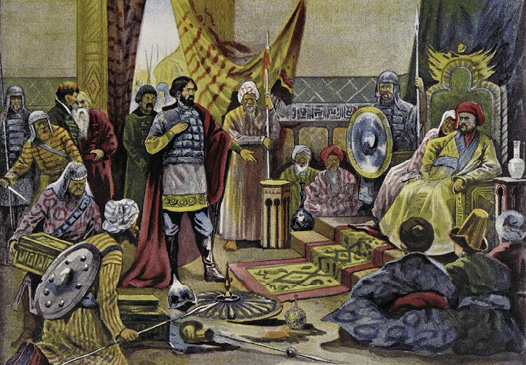
Александр Невский в Орде. 1247 год
Типолитография товарищества И. Д. Сытина.1905
►
Иногда они встречались и вели переговоры. Такой княжеский съезд состоялся в 1256 году. После смерти Батыя русские князья, как повествует летописец, поехали «на Городец» и в Нижний Новгород, чтобы потом отправиться в татарские земли.
Побывал на этом съезде и Александр Невский. Сам он, однако, в Орду не поехал, а отправил туда из Нижнего Новгорода дары.
Князь Александр проводил дальновидную политику по отношению к Золотой Орде. Его цель заключалась в том, чтобы уберечь русские земли от набегов неприятеля и от участия русских воинов в завоевательных походах ордынских ханов.
Когда хан Берке́ решил использовать русские рати в войне с правителем Персии, Александр Невский в 1262 году отправился к монголам, чтобы «отмолить людей от беды той». Князю пришлось провести в Золотой Орде целый год. Там он заболел. Возвращаясь домой, Александр сделал кратковременную остановку в Нижнем Новгороде.
Здесь недуг совсем одолел Александра Ярославича. Князя спешно повезли в Городец. Там 14 ноября 1263 года Александр Невский принял монашеский по́стриг (по обычаю, князья перед уходом из жизни становились монахами). В ту же ночь Александр Ярославич скончался. Тело его было отвезено в столицу княжества Владимир. Там его и похоронили. Люди горько оплакивали смерть князя.
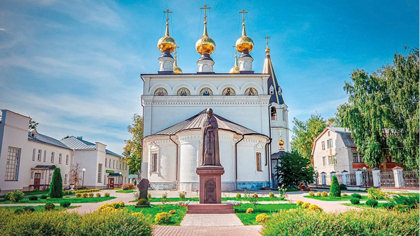
Городецкий Феодоровский монастырь
►
В надгробной речи митрополит Кирилл сказал: «Дети мои, знайте, что зашло солнце земли Суздальской!» Православная церковь причислила князя к лику святых.
3 Память об Александре Невском на Нижегородской земле. Исстари жители Городца бережно хранят память об Александре Невском. Ещё в 1700 году по их почину был построен храм во имя Феодоровской иконы Божией Матери с приде́лом во имя Александра Невского. Ныне Городецкий Феодоровский монастырь — одно из мест особого почитания Александра Невского. В 1993 году в Городце, на набережной Волги был установлен величественный памятник князю.
В Нижнем Новгороде в 1881 году на Стрелке — месте слияния Оки и Волги — был возведён храм во имя святого благоверного князя Александра Невского. По высоте (87 метров) он занимает третье место в России. В 2021 году рядом с храмом была установлена конная статуя Александра Невского.
В Сормовском районе Нижнего Новгорода есть улица Александра Невского.
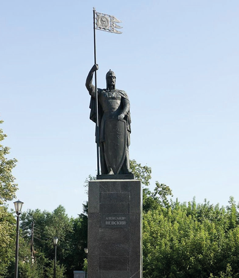
Памятник Александру Невскому в Городце
Скульптор И. И. Лукин, архитекторы В. В. Иванов и В. Н. Быков. 1993
►
Подведём итоги
Князь Александр Невский проводил дальновидную политику по отношению к Золотой Орде. Его цель заключалась в том, чтобы уберечь русские земли от набегов и от участия русских воинов в завоевательных походах ордынских ханов. Для решения этих задач князю Александру Невскому приходилось неоднократно посещать Золотую Орду. При этом он бывал проездом в Городце и Нижнем Новгороде. В 1263 г. во время одной из поездок Александр Невский скончался в Городце.
|
|
Исторический словарь |
Золота́я Орда́ — государство, возникшее в результате завоеваний хана Батыя. Оно включало Поволжье, Приуралье, Северный Кавказ, Крым.
Приде́л — пристройка к православному храму.
Ярлы́к — документ, выдававшийся ханами Золотой Орды и подтверждавший право князя управлять своим княжеством.
|
|
Обратите внимание |
1263 год — Александр Невский скончался в Городце.
|
|
Сформулируйте вывод по теме параграфа. * Аргументируйте его. |
|
|
Вопросы и задания |
1. С какой целью Александр Невский посещал Нижний Новгород?
2*. Составьте родословную Александра Невского. Кем он приходился основателю Нижнего Новгорода Юрию Всеволодовичу?
3*. В каких городах Нижегородской области есть памятные места, посвящённые Александру Невскому?
4. Какие архитектурные сооружения Нижегородской области посвящены памяти князя Александра Невского? Что вам о них известно?
|
|
Составьте небольшой рассказ по теме занятия с использованием терминов, дат и личностей. |
►
|
|
Сформулируйте вывод по теме главы. * Аргументируйте его. |
|
|
Вопросы и задания к главе II |
1. Подумайте, деятельность какого князя — Юрия Долгорукого, Юрия Всеволодовича или Александра Невского — имела наибольшее значение для истории нашего края.
2. Сравните обстоятельства основания Городца и Нижнего Новгорода. Выделите в них общие черты и различия.
3. У всех народов данью уважения к предкам является традиция называть детей в честь предков. Юрий Всеволодович получил своё имя в честь деда. Как вы полагаете, оправдал ли он ожидания своих родителей?
4. Рассмотрите карту дорог в XIII—XIV веках через Нижний Новгород и Городец из параграфа 8. Подумайте, какая дорога возникла раньше: из Суздаля в Городец, из Владимира в Нижний Новгород, из Нижнего Новгорода в Золотую Орду.
5. В 2008 году был объявлен проект «Имя России». Путём голосования следовало определить самую ценимую и символичную личность за всю российскую историю. Участники проекта выбрали Александра Невского. Как вы думаете, почему россияне назвали именно его?
Итоги главы
Самый древний из городов Нижегородской области – Городец. Он был построен в 1152 году.
В 1221 году владимирский князь Юрий (Георгий) Всеволодович повелел заложить в устье Оки новый город. Он стал называться Нижний Новгород.
Юрий Всеволодович погиб, защищая русские земли от монголов.
Проездом в Городце и Нижнем Новгороде неоднократно бывал князь Александр Невский. Во время одной из поездок Александр Невский скончался в Городце. ►
Глава III
ГОРОДЕЦКОЕ
И НИЖЕГОРОДСКО-СУЗДАЛЬСКОЕ
КНЯЖЕСТВА
Памятник Дмитрию Донскому и его жене Евдокии в Нижнем Новгороде
Скульпторы И. В. Макарова и М. В. Батаев. 2021
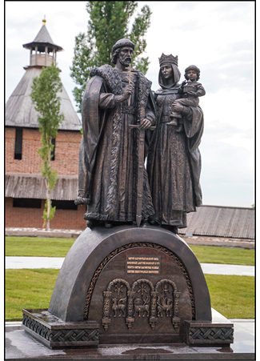
Из главы вы узнаете, как возникли Городецкое и Нижегородско-Суздальское княжества. Вам станет известно о славных и драматичных страницах их истории. Также в этой главе рассказывается о том, как Нижний Новгород, основанный как пограничная крепость, благодаря расположению на пересечении торговых путей, вырос, разбогател и стал княжеской столицей. ►
§ 9
Судьба Городецкого княжества и борьба тверских, московских и суздальских князей за Нижний Новгород
Вид на кремль со стороны Волги в XIV веке
Рисунок С. Л. Агафонова. 1970
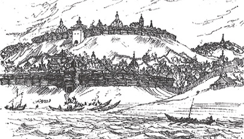
|
|
Почему в XIII–XIV веках политический и экономический вес Городца снизился, а Нижнего Новгорода — увеличился? |
1. Возникновение Городецкого удельного княжества.
2. Андрей Городецкий — великий князь владимирский.
3. Нижний Новгород во время соперничества Москвы и Твери (первая четверть XIV века).
4. Нижегородские земли при Александре Васильевиче Суздальском и Иване Калите.
● Великое княжение
● Ярослав Ярославич
● Михаил Тверской
● Юрий Данилович
● 1293 год
● 1299 год
● 1300 год
● 1301 год
● 1304 год
● 1305 год
● 1327 год
● 1332 год
►
|
|
Вспомните, что такое ярлык. Кому ханы Золотой Орды выдавали этот документ? |
1 Возникновение Городецкого удельного княжества. По существовавшей на Руси традиции князь мог править только в своей о́тчине, то есть там, где когда-либо княжил его отец. Право на отцовское княжество имели все сыновья по очереди. Таким образом, отчина (её ещё называли «великим княжением») переходила от старшего в роду к следующему по возрасту (чаще всего от брата к брату). Наследование от отца к сыну тоже было возможно (как редкий частный случай, когда у князя не имелось братьев).
Великий князь выделял остальным родственникам особые области для правления — уде́лы.
Ханы Золотой Орды не стали ломать этот порядок. Они выдавали ярлыки, согласно указанным правилам, законным наследникам. В случае конфликта между князьями хан принимал сторону одного из них. Если же спора не возникало, наследование шло обычным путём. Так, после кончины Александра Невского великим князем владимирским стал его брат Ярослав Ярославич, а сыновья Невского получили уделы. В удел третьему сыну Александра Невского —Андрею — достался Городец. Возникло Городецкое удельное княжество. В его состав вошёл и Нижний Новгород, являвшийся тогда «младшим» (подчинённым) по отношению к Городцу городом.
2 Андрей Городецкий — великий князь владимирский. Андрей Городецкий часто ссорился со своими братьями. Рассудить эти споры он просил ханов Золотой Орды. Их же звал на помощь в борьбе с соперниками, приводя на Русь отряды ордынцев. Таким путём в 1293 году Андрей Городецкий стал великим князем владимирским.
Во время его правления произошло два очень важных события. Во-первых, в 1299 году во Владимир из Киева переехал митрополит всея Руси Максим.
|
|
С какого времени митрополиты всея Руси пребывали в Киеве? |
►
Приглашение митрополита Киевского и всея Руси во Владимир было мудрым шагом Андрея Городецкого, оказавшим важное влияние на дальнейшую историю России.
Во-вторых, Андрей Городецкий показал себя талантливым полководцем, достойным славы своего отца, Александра Невского. Подобно ему, Андрей дал решительный отпор очередному натиску шведов на новгородские земли.
К этому времени шведы захватили Финляндию. Дальше их целью стало устье Невы, там они поставили крепость Ландскро́ну, откуда в 1300 году предприняли поход на земли каре́лов, ижо́ры и во́ди — карело-финских племён, союзных Новгороду. Шведы жгли и рубили всех, кто им сопротивлялся. Новгородцы кинулись на помощь своим союзникам, но потерпели поражение. Тогда они отправили гонцов к Андрею Городецкому.
Права на ошибку у князя не было. Поэтому он тщательно подготовился к походу и весной 1301 года привёл свои полки́ из Низовской земли в Новгород. Там к ним присоединилась новгородская рать. 18 мая 1301 года Андрей Городецкий с войском подошёл к Ландскроне, которую штурмовал день и ночь. Наконец русские ворвались в город. Оставшиеся в живых шведы во главе с начальником гарнизона сложили оружие. Вражеский форпост был сожжён. Вал, на котором стояла крепость, по приказу Андрея Городецкого сровняли с землёй. Эта блестящая победа остановила натиск Швеции на Русь.
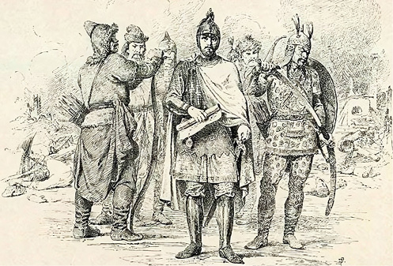
Великий князь
Андрей Городецкий
Художник В. П. Верещагин. 1890
►
До самой Смуты (начало XVII века) русские сохраняли устье Невы и выход к Балтийскому морю.
В 1304 году Андрея Городецкого не стало. Погребли его тело в Городце. Больше никогда городецкий князь не был старшим среди русских князей. Политическое и экономическое значение этого города падало. Зато прежде подчинённый ему Нижний Новгород быстро креп и богател.
3 Нижний Новгород во время соперничества Москвы и Твери (первая четверть XIV века). Князь Андрей Городецкий не оставил наследников. Поэтому городецкие бояре перешли на службу к Михаилу Тверскому, которому по старшинству полагалось стать великим князем владимирским. Но у него появился соперник — Юрий Данилович Московский. Юрий поставил себе цель добиться ярлыка на великое княжение. Для этого он отправился в Золотую Орду. Михаил же направил в Нижний Новгород бывших бояр Андрея Городецкого, чтобы задержать Юрия Даниловича. Однако их прибытие в Нижний Новгород вызвало здесь возмущение. Нижегородцы не желали подчиняться бывшим городецким боярам. Было собрано ве́че, после которого приезжих избили. Эти события произошли в 1305 году.
Несмотря на просьбы Юрия Даниловича Московского, хан Золотой Орды отдал ярлык на великое владимирское княжение Михаилу Тверскому. На обратном пути из Сарая Михаил заехал в Нижний Новгород и жестоко наказал мятежников. Эта расправа надолго запомнилась нижегородцам. В дальнейшем они всегда поддерживали Москву в соперничестве с Тверским княжеством.
4 Нижегородские земли при Александре Васильевиче Суздальском и Иване Калите. Перевеса в борьбе с Тверью Московское княжество добилось при Иване Даниловиче Калите́. В 1327 году этот князь по поручению хана Золотой Орды Узбе́ка подавил восстание в Твери. Ивану Калите помогал суздальский князь Александр Васильевич.
В результате хан Узбек отнял ярлык на великое владимирское княжение у тверского князя и решил наградить им Ивана Калиту и Александра Суздальского. Оба князя получили по половине великого владимирского княжества.
►
Причём хитроумный правитель Золотой Орды предпочёл отдать Владимир слабейшему князю — более зависимому и управляемому. Ему же досталось и Поволжье — Городец с Нижним Новгородом. На несколько лет эти земли оказались под властью суздальского князя Александра Васильевича. После его ухода из жизни Узбек опять объединил великое владимирское княжение и отдал общий ярлык на него Ивану Калите (1332). Соответственно под его контролем оказались и Нижний Новгород с Городцом. Но об этих городах мечтал и брат Александра Васильевича Суздальского, Константин. Поэтому в дальнейшем между суздальскими и московскими князьями развернулась борьба за обладание ими.
Подведём итоги
В XIII веке возникло Городецкое удельное княжество. В его состав вошёл и Нижний Новгород, являвшийся тогда «младшим» (подчинённым) по отношению к Городцу городом. Городецким князем был сын Александра Невского, Андрей. Он не оставил наследников. В XIV веке за Нижний Новгород и Городец вели борьбу московские, тверские и суздальские князья.
Антиордынское восстание в Твери. 1327 год
Миниатюра из Лицевого летописного свода XVI века
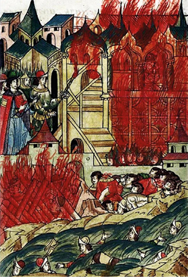
►
|
|
Исторический словарь |
Ве́че — народное собрание.
О́тчина — для княжеского сына — отцовское владение.
Уде́л — область для правления, которую великий князь выделял своему родственнику.
|
|
Обратите внимание |
Андрей Городецкий — сын Александра Невского, городецкий князь, великий князь владимирский, изгнавший шведов из устья реки Невы.
|
|
Сформулируйте вывод по теме параграфа. * Аргументируйте его. |
|
|
Вопросы и задания |
1. Что вы знаете о Городецком княжестве в XIII—XIV веках? Составьте простой план ответа.
2*. Подумайте и перечислите сходства и различия в биографиях и политике Александра Невского и его сына Андрея Городецкого. Предположите, как можно объяснить смысл высказывания: «...не судите по наружности, но судите судом праведным».
3. Перечислите причины постепенного ослабления политического и экономического значения Городца и роста влияния Нижнего Новгорода.
4*. Чем можно объяснить позицию нижегородцев во время соперничества Москвы и Твери (первая четверть XIV века)?
5*. Выскажите суждение о том, как изменились Нижегородские земли при Александре Васильевиче Суздальском и Иване Калите.
|
|
Составьте небольшой рассказ по теме занятия с использованием терминов, дат и личностей. ► |
§ 10
Становление Нижегородско-Суздальского княжества
Константин Суздальский женит своего сына Бориса на дочери Ольгерда Литовского
Миниатюра из Лицевого летописного свода XVI века
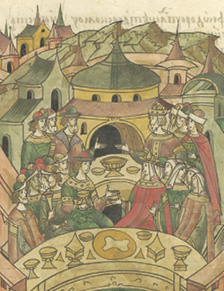
|
|
Почему в XIV веке на карте Северо-Восточной Руси возникло самостоятельное Нижегородско-Суздальское великое княжество и какое значение это имело для истории Нижегородского края? |
1. Создание Нижегородско-Суздальского княжества.
2. Переезд князя Константина Васильевича в Нижний Новгород.
3. Заселение окрестностей Нижнего Новгорода.
4. Территория и границы Нижегородско-Суздальского княжества.
● Симеон Гордый
● Константин Васильевич
● Аграфена Ольгердовна
● 1341 год
● 1350 год
● Ближнеконстантиново
● Дальнее Константиново
● Оленья гора
►
1 Создание Нижегородско-Суздальского княжества. У великого князя московского и владимирского Ивана Калиты, известного в истории как собиратель русских земель, был сын — Симеон Гордый. Продолжая дело отца, он хотел присоединить Нижний Новгород к Москве. Но поскольку это слишком усилило бы Московское княжество, хан Золотой Орды Узбек поступил вопреки его желаниям. В 1341 году хан отделил Нижний Новгород и Городец от земель великого владимирского княжения и передал их Константину Васильевичу Суздальскому. Этот год считается временем создания Суздальско-Нижегородского княжества (сначала главным городом княжества был Суздаль, затем столицей становится Нижний Новгород).
Попытки Симеона Гордого уговорить хана Узбека вернуть Нижний Новгород и Городец обратно ни к чему не привели. Нижний Новгород остался во владениях Константина Васильевича.
2 Переезд князя Константина Васильевича в Нижний Новгород. Нижний Новгород в это время по богатству уже опередил Суздаль. Поэтому суздальский князь Константин Васильевич в 1350 году перебрался в Нижний Новгород.
Рост города был связан с бурным развитием торговли по Волге. После того как хан Узбек принял ислам, в Золотую Орду устремились мусульманские купцы из Средней Азии, Персии, Индии, Египта. Приплывали они и в Нижний Новгород. Город стал главным перевалочным пунктом в торговле между русскими и восточными землями. У нижегородского причала, расположенного около устья Почайны, бросали якорь десятки судов из разных стран. В XIV веке тут шумел многолюдный разноязыкий торг. От тех времён осталось большое количество фрагментов керамики и стеклянных изделий из Золотой Орды, Ирана, Египта, Китая, обнаруженных археологами при раскопках в Нижнем Новгороде.
Устроившись на новом месте, Константин принялся украшать свою столицу. Прежде всего по его велению в 1350—1352 годах было построено новое здание главного храма города — Спасского собора. ►
3 Заселение окрестностей Нижнего Новгорода. С собой новый князь привёз земляков-суздальцев. По княжьему слову началось заселение окрестностей Нижнего Новгорода рядом с дорогой на Владимир. Она пересекала Оку близ устья Клязьмы, а затем шла по левому берегу Кудьмы, проходя через современные сёла Ближнее Бори́сово и Румя́нцево. От Большой Е́льни Владимирская дорога поворачивала на север. У села Федяко́во она пересекала реку Ра́хму. Дальше её направление показывают речка Старко́вка и населённые пункты Уте́чино, Новопокро́вское, Кузнечи́ха. Ориентиром для подхода к Нижнему Новгороду служило село Высо́ково, находившееся на возвышенности.
Учёные предполагают, что все эти селения возникли в эпоху Нижегородского княжества. Так, у деревни Кузнечиха археологи раскопали селище XIV века.
В этих местах завёл загородную усадьбу и сам Константин Васильевич. С именем князя легенды связывают название деревни Ближнеконстанти́ново. Ранее она называлась Константиново.
● Начало дороги Нижний Новгород — Владимир в XIV веке
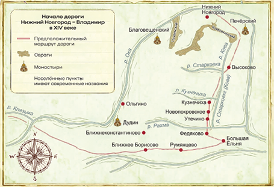
►
Сейчас Ближнеконстантиново находится в составе Приокского района Нижнего Новгорода.
Здесь археологи нашли необходимые части снаряжения конного воина: удила́, стре́мя, шпоры, боевой нож, крючки от колча́на, кольца кольчу́ги, пластины доспеха. Всё это могло принадлежать князю или его дружинникам.
О досуге князя и бояр рассказывают найденные на территории усадьбы шашки и шахматная фигурка. Некоторые секреты княжеской кухни раскрывают костные остатки четырнадцати пород рыб. Чаще всего к столу подавали сте́рлядь. Кроме того, готовились блюда из щуки, осетра́, судака́, севрю́ги, леща, саза́на, окуня, сома́, же́реха, плотвы, язя́, белуги, чехони. Здесь же учёные нашли крючки, грузи́ла, инструменты для вязания сетей. Следовательно, в усадьбе жили и княжеские рыбаки. Нужды княжеского хозяйства обслуживали также кузнецы, ювелиры, гончары и другие ремесленники. Они жили как в усадьбе, так и в особом поселении у берега Оки. Оно обнаружено около деревни О́льгино. На месте поселения археологи откопали заготовку ножа, фрагменты цилиндрических замко́в, кованые гвозди.
Постепенно русские люди, прибывшие по зову князя из суздальских и других земель, перешли Ра́хму и начали продвигаться в сторону Кудьмы. Константин Васильевич разрешил им селиться кто где захочет.
Здесь, после полосы дубрав, начиналась красивая открытая местность, которую русские переселенцы назвали Берёзовым Полем или Берёзопольем. Она располагалась между реками Кудьмой и Окой.
4 Территория и границы Нижегородско-Суздальского княжества. Через Берёзополье Владимирская дорога подходила к Оке. Перевоз через эту реку был устроен у нынешней деревни Лисёнки Павловского района. Подъезд к нему с владимирской стороны защищал город Береже́ц. Он стоял в устье Клязьмы, около современной деревни Ови́нищи Гороховецкого района. От Бережца вдоль Клязьмы лежал путь к Владимиру.►
От Нижнего Новгорода отходили дороги и на восток. Одна из них бежала к перевозу через реку Пья́ну (ныне в этом месте город Перевоз). Направление данного пути указывают нам деревни Берсеме́нево, Тамо́жниково, Гри́дино. Недалеко от этой дороги у князя Константина, вероятно, были усадьба (Дальнее Константиново) и, возможно, крепость (деревня Городи́щи Дальнеконстантиновского района). Земли между Кудьмой и Дальним Константиновым были заселены преимущественно мордвой. Река Пьяна стала юго-восточной границей продвижения русских людей. Далее начинались степи. По ним шла дорога в Золотую Орду.
Другая древняя дорога от Кстова совпадает с современной автотрассой М-7. Она проходила по правому берегу Волги до реки Сундови́к. Над устьем Сундовика (западнее современного города Лы́сково) нависала крутая Оленья гора. Там до сих пор видны остатки валов и рва древней крепости, которая защищала Нижегородское княжество с востока.
● Нижегородское княжество
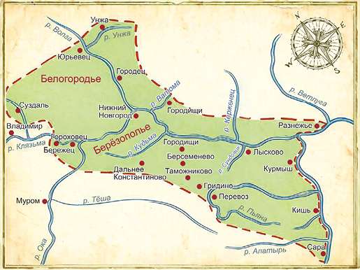
►
По левому берегу Волги Нижегородско-Суздальскому княжеству принадлежали земли от реки У́нжи до устья Ветлу́ги (район села Разне́жье). Часть их, прилегающая к Городцу, была давно и хорошо освоена. Дальше стояли дремучие леса, богатые дичью. Они стали излюбленным местом охоты нижегородских князей и бояр. О тех временах напоминает название Княжий луг в районе современного Борского стекольного завода. В верховьях Ва́томы, на въезде в Нижегородское княжество по лесной дороге из булгарских земель, была воздвигнута пограничная крепость. Её остатки обнаружены археологами у села Городищи Борского района.
На противоположной, правой, стороне Волги северным нижегородским форпостом был город Ю́рьевец. К нему с юга примыкала местность, именуемая Белогородье, включавшая современный Чкаловский район.
От Белогородья Нижегородско-Суздальское княжество простиралось дальше на запад, где уже находились коренные суздальские владения и сам Суздаль.
По своим размерам Нижегородско-Суздальское княжество принадлежало к числу самых больших русских княжеств. Стоит отметить, что владевший столь обширными и богатыми землями князь Константин Васильевич пользовался уважением не только на Руси, но и за её пределами. С ним счёл за честь породниться могущественный правитель Литвы Ольгерд, выдавший свою дочь Аграфе́ну (Агриппи́ну) за сына Константина, суздальского князя Бориса Константиновича.
Подведём итоги
В 1341 году хан Узбек передал Нижний Новгород и Городец князю Константину Васильевичу Суздальскому. Этот год считается временем создания Нижегородского княжества. Сначала Константин Васильевич оставался в Суздале, затем он переехал в Нижний Новгород. По его велению началось заселение окрестностей Нижнего Новгорода. По своим размерам Нижегородское княжество принадлежало к числу самых больших русских княжеств.►
|
|
Исторический словарь |
Берёзовое Поле — историческое название территории современного Богородского района и некоторых прилегающих к нему территорий.
Белогоро́дье — историческое название территории современного Чкаловского района.
|
|
Обратите внимание |
Константин Васильевич — суздальский князь, который перенёс столицу из Суздаля в Нижний Новгород.
1341 год — образование Нижегородско-Суздальского княжества.
По своим размерам Нижегородско-Суздальское княжество принадлежало к числу самых больших русских княжеств.
|
|
Сформулируйте вывод по теме параграфа. * Аргументируйте его. |
|
|
Вопросы и задания |
1. Расскажите с помощью исторической карты о положении Нижегородско-Суздальского княжества и его административно-территориальном делении.
2. Какие причины возникновения Нижегородско-Суздальского княжества вам известны? Перечислите основные этапы его создания.
3*. Составьте исторический портрет нижегородского и суздальского князя Константина Васильевича.
4*. Дайте описание маршрутов, по которым князь Константин Васильевич мог ездить из Суздаля в Нижний Новгород.
5*. Раскройте значения понятия «удельное княжество» и названий Берёзополье, Белогородье.
|
|
Составьте небольшой рассказ по теме занятия с использованием терминов, дат и личностей. ► |
§ 11
Нижегородские князья и Москва: от соперничества к союзу
Сергий Радонежский увещевает князя Бориса Константиновича уступить Нижний брату своему
Художник П. С. Краснов. 1912
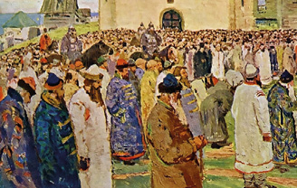
|
|
Почему нижегородские князья, начав с соперничества с Москвой, пришли к династическому союзу? |
1. Сыновья князя Константина Васильевича.
2. Противостояние Дмитрия Суздальского и Дмитрия Московского.
3. Спор за Нижний Новгород между Дмитрием Суздальским и Борисом Городецким.
4. Митрополит Алексий и Сергий Радонежский мирят московских и нижегородских князей.
5. Дмитрий Московский и Евдокия Нижегородская.
● Андрей Константинович
● Дмитрий Константинович
● Борис Константинович
● Дмитрий Донской
● Евдокия Дмитриевна
● Митрополит Алексий
● Сергий Радонежский
● 1364 год
● 1365 год
● 1366 год
● 1389 год
►
1 Сыновья князя Константина Васильевича. Нижегородско-суздальский князь Константин оставил после себя четверых сыновей. Старший, Андрей, получил ярлык на отцовское княжение со стольным городом Нижним Новгородом. Братьям же были назначены уделы: Дмитрию — Суздаль, Борису — Городец. Младшему брату Дмитрию Ногтю были выделены в удел насколько сёл близ Суздаля.
Андрей был незлобив и тих нравом. Он проводил время в посте и молитве. Тяга к власти была чужда этому богобоязненному правителю. В отличие от Андрея, его младшие братья Дмитрий и Борис были воинственны и энергичны.
2 Противостояние Дмитрия Суздальского и Дмитрия Московского. В 1359 году ушёл из жизни сын Ивана Калиты — великий князь владимирский и московский Иван Красный. Единственным законным претендентом на великое владимирское княжение являлся его сын Дмитрий. Но Дмитрий Московский был слишком юн. Поэтому, вопреки старшинству, хан Ноуру́з решил дать великое владимирское княжение нижегородскому князю Андрею Константиновичу.
Андрей Константинович Суздальский едет в Орду за ярлыком на Суздальского княжение
Миниатюра из Лицевого летописного свода XVI века
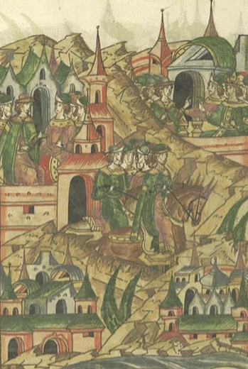
►
Однако Андрей Нижегородский отказался от подобной чести. Он не желал вступать в опасную и незаконную борьбу с Дмитрием Московским. А вот его брат, Дмитрий Суздальский, решил рискнуть. И Андрей уступил владимирский ярлык ему. Хан не возражал. Но на Руси к этому отнеслись неодобрительно. Не признали Дмитрия Суздальского великим князем владимирским и в Москве.
|
|
Узнайте, какое прозвище и почему получил Дмитрий Московский после 1380 года. |
Три года враждовали Дмитрий Суздальский и Дмитрий Московский. С 1360 по 1363 год продолжалась их борьба. Закончилась она победой москвичей. Московское войско заняло город Владимир. Дмитрию Константиновичу пришлось несолоно хлебавши возвратиться в Суздаль.
3 Спор за Нижний Новгород между Дмитрием Суздальским и Борисом Городецким. Андрей Константинович не вмешивался в эти распри и спокойно жил в Нижнем Новгороде. Но в 1364 году на его владения обрушилась страшная болезнь — бубо́нная чума́. Больные метались в жару, у них распухали лимфатические узлы. Через несколько дней мучений человек умирал. Эта эпидемия уже двадцать лет бушевала в Европе и Азии. В Европе от чумы умерла треть населения. Болезнь пощадила самого нижегородского князя, но горе, обрушившееся на его земли, стало потрясением, и в 1364 году он постригся в монахи.
Управлять Нижним Новгородом стал Борис Городецкий. Мор прекратился, но бедствия не оставили Нижегородскую землю. Весной 1365 года установилась неимоверная жара, томившая людей три месяца. Дважды горел Нижний Новгород. Пылали леса. Едкая гарь шла от торфяников. Воздух был наполнен дымом. От жары маленькие речки пересыхали, а в больших засыпала рыба. Все эти грозные события нанесли окончательный удар по здоровью Андрея Константиновича. 2 июня 1365 года этот, по определению летописца, «кроткий и тихий» князь скончался.►
После Андрея по старшинству наследовать княжество должен был его следующий брат, Дмитрий Суздальский. Но Борис Городецкий задумал сохранить Нижний Новгород за собой и показал, что готов силой дать отпор посягательствам на свою власть.
4 Митрополит Алексий и Сергий Радонежский мирят московских и нижегородских князей. Дмитрию Константиновичу ничего не оставалось, как обратиться за помощью в Москву.
Вскоре на Нижний Новгород двинулась объединённая рать Дмитрия Московского и Дмитрия Константиновича Суздальского. К счастью, у Бориса хватило благоразумия не начинать братоубийственную войну. На берегу Оки, у города Бережца, он со своими боярами встретил брата Дмитрия и признал его власть (1365). Дмитрий Константинович стал править в Нижнем Новгороде, передав Суздаль своему сыну Василию. Борис Константинович вернулся в Городец.
Конечно, в душе его кипела обида на брата. Злился он и на вмешательство Москвы. Вероятно, Борис Константинович лелеял надежду на отмщение. Ведь он был женат на дочери могущественного правителя Литвы Ольгерда, Аграфене, и вполне мог рассчитывать на помощь тестя в борьбе с Москвой.
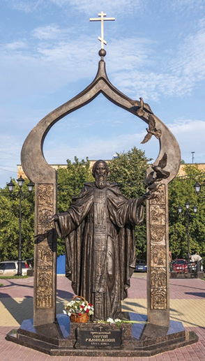
Памятник Сергию Радонежскому в Нижнем Новгороде
Скульпторы И. В. Макарова и М. В. Батаев, 2015
►
Однако мудрый митрополит Алексий понимал, что нельзя допустить союза Ольгерда и Бориса. А для этого следует помирить Бориса с его братом Дмитрием Константиновичем и с князем Дмитрием Московским. Для достижения этой цели митрополит направил в Нижний Новгород своего любимого ученика Сергия Радонежского.
Сергий смягчил сердце ожесточённого поражением Бориса и укрепил союз с Москвой Дмитрия Константиновича, договорившись о браке его дочери Евдокии с Дмитрием Московским. Впоследствии во имя Сергия Радонежского в Нижнем Новгороде была построена церковь. Она дала название улице Сергиевской.
Свадьба Дмитрия Ивановича Московского и нижегородской княжны Евдокии Дмитриевны состоялась 18 января 1366 года. Этот брак прочно скрепил союз Московского и Нижегородского княжеств.
5 Дмитрий Московский и Евдокия Нижегородская. Дмитрий и Евдокия были совсем юными, когда вступали в брак. В те времена так делалось часто. Они прожили в любви двадцать два года. Летописец записал слова Евдокии, оплакивавшей своего супруга, ушедшего из жизни в расцвете лет: «Солнце моё, рано ты зашло, месяц мой прекрасный, рано ты померк. И юность ещё не оставила нас, и старость не настигла. На кого оставляешь меня и детей своих? Недолго радовалась я с тобой: за весельем пришли плач и слёзы, а за утехой и радостью — сетование и плач».
Овдовев в 1389 году, Евдокия Дмитриевна много занималась благотворительностью и строила храмы. Когда она управляла Москвой, столица убереглась от нашествия жестокого полководца Тамерлана. На склоне лет бывшая нижегородская княжна приняла монашеский постриг под именем Евфроси́нии. Впоследствии она была причислена к лику святых и считается заступницей Москвы. В 2007 году Русской православной церковью учреждён орден преподобной Евфросинии, великой княгини московской. В 2013 году на Нахимовском проспекте в Москве перед храмом преподобной Евфросинии был установлен памятник ей и её мужу — Дмитрию Донскому. Подобный монумент с 2021 года украшает и Нижегородский кремль.►
Подведём итоги
Нижегородский князь Дмитрий Константинович соперничал с Москвой за первенство в русских землях. Однако митрополит Алексий и Сергий Радонежский помирили московских и нижегородских князей. В 1366 году состоялась свадьба Дмитрия Ивановича Московского и нижегородской княжны Евдокии Дмитриевны. Этот брак прочно скрепил союз Московского и Нижегородского княжеств.
|
|
Исторический словарь |
Тесть — отец жены.
|
|
Обратите внимание |
Союз Московского и Нижегородского княжеств скрепила женитьба Дмитрия Донского на нижегородской княжне Евдокии.
|
|
Сформулируйте вывод по теме параграфа. * Аргументируйте его. |
|
|
Вопросы и задания |
1. Как изменилось положение Нижегородского края при Константине Васильевиче?
2. Объясните происхождение поговорки: «Дмитрий да Борис за свой город подрались». Предположите причину отказа от великого владимирского княжения нижегородского князя Андрея Константиновича.
3*. По словам летописца, Дмитрий Суздальский стал в 1360 году великим князем владимирским «не по о́тчине и не по де́дине». Что хотел сказать этим летописец?
4*. Какая поговорка, народная мудрость могла бы подойти при характеристике значения деяний митрополита Алексия и Сергия Радонежского по укреплению единства русских земель?
|
|
Составьте небольшой рассказ по теме занятия с использованием терминов, дат и личностей. ► |
§ 12
Нижегородско-Суздальское княжество на закате своей истории: борьба с Мамаем и присоединение к Москве
Битва на реке Пьяне
Миниатюра из Лицевого летописного свода XVI века
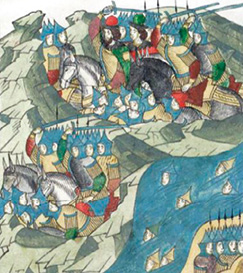
|
|
Почему Нижегородско-Суздальское княжество было присоединено к Москве? |
1. Борьба Московского и Нижегородско-Суздальского княжеств с Мамаем.
2. Битва на реке Пьяне.
3. Упадок Нижегородского княжества и его присоединение к Москве.
● Мамай
● Посол Сарай-ака
● Царевич Араб-шах
● Хан Тохтамыш
● Дмитрий Михайлович
Боброк-Волынский
● 1377 год
● 1378 год
● 1380 год
● 1382 год
● 1392 год
● Река Пьяна
● Волчья вода
►
1 Борьба Московского и Нижегородско-Суздальского княжеств с Мамаем. В 1370-х годах Золотая Орда была охвачена внутренней борьбой. Один хан сменял другого. Среди прочих захватить власть стремился военачальник Мама́й. В 1374 году Мамай был в очередной раз изгнан из столицы Золотой Орды — города Сарая. Но он хотел по-прежнему получать дань с русских земель и распоряжаться княжескими ярлыками. Чтобы убедить русских князей в необходимости проявлять прежнюю покорность, он отправил на Русь своего посла Сара́й-аку́ (Сара́йку). Однако Дмитрий Московский и Дмитрий Нижегородский решили сбросить зависимость от Мамая. Нижегородцы задержали Сарайку. Ордынский посол попытался бежать, но был убит.
Разгневанный Мамай немедленно отправил часть своей конницы на Нижегородские земли. Её удар обрушился на русские владения за рекой Пьяной. Была сожжена нижегородская застава Кишь (она стояла около современного села Му́рзицы Сеченовского района, там, где в Суру́ впадает река Ки́ша). Здесь погиб нижегородский боярин Парфён Фёдорович. Однако бросать все силы против Нижегородского княжества Мамай не стал, но обиды своей он не забыл. Случай отомстить представился в 1377 году.
2 Битва на реке Пьяне (1377). В 1377 году на правом берегу Волги объявился союзник Мамая царевич Араб-шах (русские летописи называют его Ара́пшей). Как сообщают летописцы, Арапша захотел идти ратью к Нижнему Новгороду. Дмитрий Константинович, узнав об этом, просил помощи у своего зятя и союзника Дмитрия Ивановича Московского. Тот немедленно пришёл к Нижнему с большим войском.
В его составе были не только москвичи. На помощь нижегородцам московский князь привёл воинов из Ярославля, Переславля Залесского, Юрьева Польского, Мурома. Впервые ратники из разных русских княжеств выступили вместе против Золотой Орды. Это был важный шаг на пути к единству Руси и освобождению её от ордынского ига.►
Объединённое русское войско довольно долго ожидало Арапшу, но про него не было никаких известий, и Дмитрий Иванович вернулся в Москву. На случай внезапного появления врага он оставил Дмитрию Константиновичу приведённые с собой рати. Они вместе с нижегородцами были направлены Дмитрием Константиновичем на границу княжества, туда, где за рекой Пьяной проходила дорога из приволжских степей. Войско возглавили сыновья нижегородского князя. Русская рать переправилась через Пьяну и расположилась в ожидании неприятеля.
Скоро русским пришла весть, что Арапша находится на Волчьей воде. У учёных нет единого мнения о том, где это место. Возможно, речь идёт о Волчьем озере рядом с рекой Суро́й (Ала́тырский район Чувашии). Это довольно далеко от Пьяны. И нижегородские князья забыли про осторожность. Стоял жаркий август, и русские воины сложили тяжёлые воинские доспехи на телеги, а сами развлекались охотой и допьяна пили хмельной мёд.
Такая беспечность привела к страшным последствиям.
● Битва на реке Пьяне
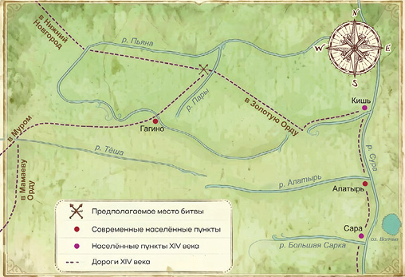
►
Тайно подошло большое войско из Мамаевой орды. Оно переправилось через Пьяну (в современном Гагинском районе) и оказалось в тылу у нижегородцев и их союзников. 2 августа 1377 года вражеские отряды неожиданно ударили по русскому войску. Нижегородские князья оторопели. Их воины, не успев даже надеть доспехи, кинулись к Пьяне. Многие из них утонули в холодных и быстрых волнах этой реки.
Далее ордынцы ринулись на Нижний Новгород. Но город был не готов к обороне. Поэтому Дмитрий Константинович спешно отправился в Суздаль за подмогой. Горожане, кто мог, покинули город. Они погрузились на суда и искали спасение за Волгой, в Городце. Тех, кто остался в Нижнем Новгороде, ждала страшная участь. 5 августа 1377 года к городу прискакала конница Мамая. Началась расправа. Город был сожжён.
Менее чем через год, в мае 1378 года, Нижний Новгород вновь подвергся нападению отрядов мстительного Мамая. Князь Дмитрий Константинович предлагал ордынцам выкуп за город. Однако те отказались и 15 мая 1378 года сожгли только что оправившийся от прошлогоднего разорения Нижний Новгород.
|
|
Узнайте, какое ещё сражение с войсками Мамая произошло в 1378 году. |
3 Упадок Нижегородского княжества и его присоединение к Москве. Разгромы 1377 и 1378 годов сильно ослабили Нижний Новгород. Князь Дмитрий Константинович был вынужден на время уехать из своей разорённой столицы сначала в Городец, а потом в Суздаль. Оттуда он отправил своих бояр для участия в решающем сражении с Мамаем — Кулико́вской битве. Многие из них сложили головы на Куликовом поле. Как известно, особую роль в этом сражении сыграл бывший нижегородский ты́сяцкий — Дмитрий Михайлович Бобро́к-Волы́нский. Он приехал в Нижний Новгород из Волыни, с западного края русских земель, поэтому и прозывался Волынским. (Теперь Волынь – территория Украины.)►
Как вы помните (см. с. 75), в 1366 году князь Дмитрий Иванович Московский женился на нижегородской княжне Евдокии. Чтобы укрепить союз Москвы и Нижнего Новгорода, Дмитрий вскоре выдал свою сестру Анну замуж за нижегородского тысяцкого Дмитрия Боброка-Волынского. Таким образом, нижегородский тысяцкий стал зятем московского князя, а тот его шурином.
Из Нижнего Новгорода Дмитрий Боброк-Волынский перешёл на службу в Москву. Он сразу проявил себя как выдающийся полководец и неоднократно участвовал в походах московского войска. Дмитрий Донской взял своего зятя и на битву с Мамаем.
Во время Куликовской битвы Дмитрий Михайлович вместе с серпуховским князем Владимиром Андреевичем командовал засадным полком. Этот полк вступил в битву только через 5 часов после её начала. Атака засадного полка оказалась успешной и своевременной — она была нанесена с тыла, и ордынцы её не ожидали. Их конница была загнана в реку и уничтожена, остальные воины Мамая в ужасе бежали. Эта атака решила исход битвы и привела к победе русских войск. Дмитрий Донской сердечно поблагодарил зятя и сказал ему: «Надлежит тебе всегда воеводой быть».
Нижегородский князь Дмитрий Константинович в Куликовской битве не участвовал, поскольку находился в преклонном возрасте. В последние годы жизни он испытал немало потрясений, которые подорвали его здоровье. В 1383 году старый нижегородский князь скончался.
|
|
Узнайте, когда состоялась Куликовская битва. |
Великое Нижегородско-Суздальское княжение перешло к следующему по старшинству в роду князю — Борису Константиновичу Городецкому. Но его племянник Василий, сын Дмитрия Константиновича, попытался отнять Нижний Новгород у дяди.
Непрекращающаяся борьба нижегородских князей друг с другом ослабляла их власть. Этим воспользовался великий князь владимирский и московский Василий I. Осенью 1392 года он получил от хана Тохтамыша ярлык на Нижний Новгород.►
Василий I отправил в Нижний Новгород бояр и приехавшего с ним татарского посла для объявления своего права на нижегородский престол. В этот тяжёлый для Бориса час нижегородские бояре оставили своего князя. Старший из них, Василий Румя́нец, сказал в присутствии татарских послов Борису Константиновичу: «Не надейся на нас, отныне мы не твои, мы не с тобой, мы против тебя».
6 ноября 1392 года Василий I прибыл в своё новое владение. Он оставался в Нижнем Новгороде до Рождества, а уехав, оставил своего наместника.
Так Нижний Новгород оказался под властью великого Московского князя. Это был важный шаг на пути собирания русских земель вокруг Москвы и создания единого Российского государства.
С присоединением Нижнего Новгорода территория и население Московского княжества увеличились. Это значит, что оно стало более сильным. На большое расстояние отодвинулись границы от Москвы. Нижний Новгород стал важным оборонительным щитом на востоке русских земель, обеспечивая их безопасность. Теперь по Волге и Оке можно было легче попасть из одного города в другой. Это способствовало укреплению транспортных и экономических связей между русскими землями.
Нижегородцев также ждали перемены к лучшему. Усобицы между князьями несли горе простым людям, делали русские земли уязвимыми для внешнего врага. В едином же государстве было легче обеспечить справедливое правосудие, порядок и безопасность.
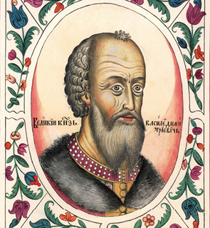
Василий I
Портрет из Царского титулярника XVII века
►
|
|
Знакомимся с историческим источником |
«Сказание о Мамаевом побоище»
о потерях нижегородцев в Куликовской битве
И сказал князь великий Дмитрий Иванович: «Сосчитайте, братья, скольких воевод нет, скольких служилых людей». Говорит боярин московский, именем Михаил Александрович, а был он в полку у Микулы у Васильевича, счётчик был гораздый: «Нет у нас, государь, сорока бояр московских, да двенадцати князей белозёрских, да тринадцати бояр — посадников новгородских, да пятидесяти бояр Новгорода Нижнего, да сорока бояр серпуховских, да двадцати бояр переяславских, да двадцати пяти бояр костромских, да тридцати пяти бояр владимирских, да пятидесяти бояр суздальских, да сорока бояр муромских, да тридцати трёх бояр ростовских, да двадцати бояр дмитровских, да семидесяти бояр можайских, да шестидесяти бояр звенигородских, да пятнадцати бояр угличских, да двадцати бояр галичских, а младшим дружинникам и счёта нет…»
Подведем итоги
Дмитрий Московский и Дмитрий Нижегородский решили сбросить зависимость от Мамая. В 1377 году на правом берегу Волги объявился союзник Мамая царевич Араб-шах (русские летописи называют его Ара́пшей). 2 августа 1377 года вражеские отряды неожиданно ударили по русскому войску, стоявшему на берегах реки Пьяны, а потом сожгли Нижний Новгород. Нижегородское княжество было ослаблено. В 1392 году оно было присоединено к Москве.
►
|
|
Исторический словарь |
Мёд — слабоалкогольный напиток из мёда.
Ты́сяцкий — военачальник, возглавлявший древнерусское городское ополчение — тысячу.
|
|
Обратите внимание |
1377 год — битва на реке Пьяне.
1392 год — присоединение Нижнего Новгорода к Москве.
Дмитрий Боброк-Волынский – герой Куликовской битвы, сподвижник Дмитрия Донского. Прежде служил нижегородским князьям.
|
|
Сформулируйте вывод по теме параграфа. * Аргументируйте его. |
|
|
Вопросы и задания |
1. Перечислите основные факты борьбы нижегородцев с Мамаем.
2. Пользуясь исторической картой, расскажите, каким путём русское войско подошло к реке Пьяне. Опишите ход состоявшегося там сражения.
3*. Подготовьте доклад о Дмитрии Боброк-Волынском и его роли в Куликовской битве.
4*. Прочитайте текст исторического источника. Насколько велики были потери нижегородцев в Куликовской битве в сравнении с потерями воинов из других княжеств?
5*. Выскажите суждение о том, почему Нижегородское княжество присоединилось к Москве и каково значение этого события. Как вы можете оценить поступок нижегородского боярина Василия Румянца, который в решающий момент сказал своему князю Борису Константиновичу: «Не надейся на нас, отныне мы не твои, мы не с тобой, мы против тебя».
|
|
Составьте небольшой рассказ по теме занятия с использованием терминов, дат и личностей. |
|
|
Сформулируйте вывод по теме главы. * Аргументируйте его. |
►
|
|
Вопросы и задания к главе III |
1. В отечественной историографии имя Андрея Городецкого ассоциируется с разорением и упадком земель всего Владимирского княжества, ведь это он спровоцировал междоусобную войну с вмешательством ордынцев. Однако есть и другие оценки деятельности этого князя. Например, в 1301 году Андрей Городецкий совершил полководческий подвиг, показав себя выдающимся воителем, достойным славы своего отца, Александра Невского. Тогда он дал отпор новому натиску шведов на новгородские земли. Вспомните примеры, когда дети продолжали дела, достойные доброго имени предков.
2. «Получение суздальским князем Дмитрием Константиновичем в 1360 году ярлыка на великое Владимирское княжество было обусловлено не только его действиями, но и интересами хана Ноуруза в данный конкретный момент, в конкретных исторических условиях. Есть основания полагать, что на принятое ханом решение определённое влияние оказал Новгород Великий, а также стародубские, ростовские и галицкие князья. Великокняжеский стол Дмитрий Константинович занимал два года. Однако удержать ярлык он не смог и был вынужден уступить его московскому князю Дмитрию Ивановичу». Согласны ли вы с данным мнением?
3. Александр Васильевич, управляя городом Владимиром на Клязьме, в то время являвшимся столицей Северо-Восточной Руси, снял с владимирского Успенского собора вечевой колокол и перевёз его к себе в Суздаль. Установленный на новом месте вечевой колокол перестал звонить, что было воспринято суздальцами как недоброе знамение. Пришлось вернуть колокол обратно во Владимир. Проведите исследование вечевых традиций Русского государства.
4*. Прочитайте текст: «Она отсекала всё суетное и мелочное, учась тихо преодолевать скорби. Незадолго до решающего для земли Русской события — сечи на Куликовом поле — у них с Дмитрием родился сын Василий, которому в будущем суждено было стать преемником отца». О ком идёт речь в данном отрывке? В каком веке происходили указанные события?
5*. Летописец сообщает, что Евдокия Дмитриевна являла собой образец преданной жены, всегда именовавшей мужа «свете мой светлый». Какие ещё примеры семейной верности в истории вам известны?
6*. Некоторые общественные деятели склонны считать, что государственная стабильность начинается с семейного благополучия. Согласны ли вы с данным утверждением? Почему?
►
7*. Выделите сходства и различия в развитии Городца и Нижнего Новгорода в XIII—XIV веках.
8*. Некоторые историки считают, что Дмитрий Михайлович Боброк-Волынский — сын литовского князя на Волыни Михаила-Любарта Гедеминовича. Выехав из Волыни, он сначала был тысяцким у нижегородского князя Дмитрия Константиновича, а затем перешёл на службу в Москву, став воеводой Дмитрия Донского. Какую роль сыграл Д. М. Боброк-Волынский в Куликовской битве?
Итоги главы
В XIII веке возникло Городецкое удельное княжество. В его состав вошёл и Нижний Новгород, являвшийся тогда «младшим» (подчинённым) по отношению к Городцу городом.
В XIV веке за Нижний Новгород и Городец вели борьбу московские, тверские и суздальские князья. В 1341 году хан Узбек передал Нижний Новгород и Городец Константину Васильевичу Суздальскому. Этот год считается временем создания Нижегородского княжества.
Нижегородские князь Дмитрий Константинович несколько лет соперничал с Москвой за первенство в русских землях. Однако митрополит Алексий и Сергий Радонежский помирили московских и нижегородских князей.
Союз с Нижегородским княжеством помог Дмитрию Ивановичу в борьбе с Мамаем. Дмитрий Московский и Дмитрий Нижегородский решили сбросить зависимость от Мамаевой орды. Но ордынцы в 1377 году разгромили нижегородское войско на реке Пьяне. После этого они сожгли Нижний Новгород, а в 1378 году подвергли его повторному разорению. Разгромы 1377 и 1378 годов сильно ослабили Нижегородское княжество. К тому же началась борьба нижегородских князей друг с другом.
В 1392 году Нижегородское княжество было присоединено к Москве.►
Глава IV
НИЖЕГОРОДСКАЯ ЗЕМЛЯ — ПОГРАНИЧНЫЙ КРАЙ РУССКОГО ГОСУДАРСТВА
(конец XIV — первая половина XVI века)
Северная башня Нижегородского кремля
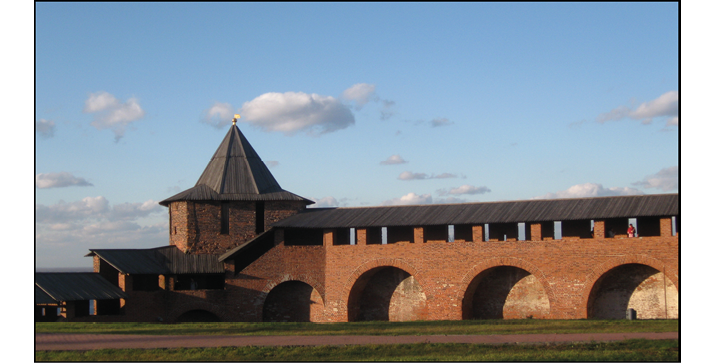
В конце XIV века Нижний Новгород был присоединён к Московско му княжеству, ставшему в XV веке основой единого Русского государства. Нижегородский край защищал его восточную границу. Много славных дел на счету нижегородцев в этот период, много славных имён наших земляков вписано в русскую историю. В это время в Нижегородском крае появились новые села и города, а Нижний Новгород украсил каменный кремль. ►
§ 13
Нижегородские земли в составе Московского княжества (конец XIV — первая половина XV века)
Падение великого княжества Нижегородского. 1392 год
Художник И. К. Дряпаченко. 1912
|
|
Почему потомкам нижегородских князей не удалось вернуть власть над Нижним Новгородом? |
1. Князья Шуйские — потомки нижегородских князей.
2. Набег Едигея и временное восстановление Нижегородского княжества.
3. Василий II и преподобный Макарий Желтоводский и Унженский.
● 1402 год
● 1408 год
● 1411 год
● Мурза Едигей
● Макарий Желтоводский
и Унженский
● Хан Улу-Мухаммед
● 1415 год
● 1425 год
● 1434 год
● Город Курмыш
● Лысково
● Река Керженец
►
1 Князья Шуйские — потомки нижегородских князей. Вхождение земель бывшего Нижегородского княжества в систему складывавшегося вокруг Москвы единого Русского государства растянулось на полвека. Долгое время нижегородские князья и их потомки стремились вернуть свои владения. При этом они пытались опереться на помощь уже слабевшей Золотой Орды.
|
|
Вспомните, что вы знаете о нижегородском князе Дмитрии Константиновиче и его сыновьях. |
Сыновья князя Дмитрия Константиновича — Семён и Василий — бежали к хану Тохтамышу. Однако правитель Золотой Орды готовился к решающим схваткам с грозным полководцем Тимуром. Тратить силы на борьбу с Василием I ему было не с руки. Тогда Василий вернулся на Русь, а его упорный брат остался в Орде. Только в 1402 году мятежный князь Семён явился в Москву. Он повинился в том, что, не зная покоя и сна, «восемь лет служил в Орде четырём царям», добиваясь своей отчины и «губя христиан», и торжественно объявил, что отказывается от нижегородского княжения. После этого сыновьям Семёна и Василия была пожалована богатая и обжитая местность (затем город) Шу́я к северо-востоку от Суздаля. С тех пор потомки нижегородского князя Дмитрия Константиновича стали носить титул князей Шуйских.
2 Набег Едигея и временное восстановление Нижегородского княжества. В начале XV века возродить былую мощь золотоордынского государства попытался мурза́ Едиге́й. В ноябре 1408 года его войско подошло к Москве со стороны Рязани. На Нижний Новгород и Городец Едигей отправил одного из шедших с ним ордынских царевичей. Нижний Новгород был взят и сожжён, а его жители частью убиты, частью уведены в рабство. Затем нападению подвергся Городец. Он также был сожжён. Люди бежали кто куда. Их секли «как траву», с горечью сообщает летописец. Далее ордынцы двинулись вдоль волжских берегов к Костроме. На обратном пути воины Едигея вновь прошли через Нижний Новгород и Городец, рубя оставшихся людей. ►
Затем ордынцы разорили Берёзовое Поле и двинулись к Суре. Там они сожгли Курмыш, а также находившиеся рядом монастыри и сёла. Тех, кто выжил, погубили лютые январские морозы 1409 года.
После этих бедствий Нижегородская земля опустела. Городец надолго прекратил своё существование.
Жестокий удар был нанесён по Нижнему Новгороду. Власть над ним, по мнению многих историков, Едигей передал князю Даниилу — сыну последнего нижегородского князя Бориса Константиновича. Так в 1408 году после набега Едигея было восстановлено Нижегородско-Суздальское княжество. Василий I не признал этих перемен и начал войну с Даниилом Борисовичем.
|
|
В какие годы правил Василий I? |
В конце 1410 года Василий I направил на Нижний Новгород многочисленную рать. Обороняться в полуразрушенном городе Даниилу Борисовичу было тяжело. Как следует из летописей, он вдоль Волги отошёл на восток. Мятежный нижегородский властитель остановился за рекой Сундови́к, у Лысой горы. На помощь Даниилу подошли его союзники — булгарские и мордовские князья. 15 января 1411 года объединённые нижегородско-булгарско-мордовские силы «на Лыскове» (это первое упоминание названного населённого пункта в исторических источниках) у Лысой горы дали бой московскому войску. Не сумев добиться решающего перевеса, противники, как сообщает летописец, разошлись восвояси.
В 1415 году Василий I направил на Нижний Новгород новое войско. Даниил Борисович опять не решился оборонять свой город. На сей раз он вместе со своим войском бежал ещё дальше — за Суру. Когда московская рать подошла к Нижнему Новгороду, навстречу ей с крестами вышли нижегородские бояре и простой народ. Нижегородцы желали твёрдой и справедливой власти великого князя Московского, в то время как попытки местных князей вернуть свою отчину приносили людям лишь несчастья.
►
На исходе своей бурной жизни Даниил Борисович примирился с московским княжеским домом. После смерти Даниила, не оставившего сыновей, Нижний Новгород и пришедший в запустение Городец уже прочно вошли в состав Московского княжества.
3 Василий II и преподобный Макарий Желтоводский и Унженский. В 1425 году, после смерти Василия I, среди московских князей началась война за великое княжение. Права на престол заявили, с одной стороны, Василий II Васильевич, а с другой — его дядя Юрий Дмитриевич.
Эта междоусобная война за великое княжение затронула и нижегородские земли. В 1425 и 1430 годах Нижний Новгород на короткое время захватывал Юрий Дмитриевич. В 1434 году здесь укрылся Василий II, изгнанный из Москвы.
Юрий Дмитриевич направил на него своих сыновей «со многой силой». Помощи Василию ждать было неоткуда. Он пребывал в смятении. У молодого князя даже возникла мысль бежать к татарам. В этот тяжёлый для него час Василий встретил мудрого монаха Макария, которого сегодня мы знаем как преподобного Мака́рия Желтово́дского и У́нженского. Он родился в Нижнем Новгороде и ещё юношей принял монашеский постриг в Печёрском монастыре.
Макарий Желтоводский и Унженский
Икона XVII века
►
Затем долго жил в уединении на реке Лух (в современной Ивановской области). Должно быть, встреча и беседа с Макарием произвели на молодого правителя большое впечатление. Василий II отказался от мысли покинуть родную сторону. И как оказалось, не зря. Вскоре он вернул трон. Ещё недавно отверженный и гонимый, Василий торжественно возвратился из Нижнего Новгорода в Москву.
После встречи в 1434 году с Василием II (и с его помощью) Макарий основал монастырь во имя Святой Троицы. Он расположился напротив Лыскова, вблизи устья реки Керженец, у озера Жёлтые Воды (вода в нём была мутная, желтоватая). Рядом находилось озеро с чистой прозрачной водой. Впоследствии его назвали Святым, так как в него окунались при крещении приходившие к батюшке Макарию жители окрестных мест — марийцы, а также чуваши из-за Волги и Суры.
Воины хана Улу́-Муха́ммеда, обнаружив Желтоводский Троицкий монастырь, сожгли его. Макария же привели к своему предводителю. Татарский начальник побранил воинов за то, что они обидели такого уважаемого человека, и отпустил Макария с миром, освободив и других захваченных русских пленников — мужчин, женщин и детей. Однако восстанавливать монастырь не позволил. Поэтому Макарий ушёл с Жёлтого озера на реку У́нжу (в современной Кост-ромской области) и там основал новый монастырь.
Монастырь на Жёлтом озере будет восстановлен только в XVII веке. О том, какую важную роль он сыграл в хозяйственном и культурном развитии Нижегородской земли, вы узнаете в 6-м классе.
Подведём итоги
Вхождение земель бывшего Нижегородского княжества в систему складывавшегося вокруг Москвы единого Русского государства растянулось на полвека. Долгое время нижегородские князья и их потомки стремились вернуть свои владения, но безуспешно. В конце правления Василия II Нижегородский край прочно вошёл в состав Московского княжества, а затем и единого Русского государства.
►
|
|
Исторический словарь |
Мурза́ — аристократический титул у татар.
|
|
Обратите внимание |
Князья Шу́йские — потомки нижегородских князей.
1408 год — после набега Едигея Нижегородская земля запустела. Городец надолго прекратил своё существование. Жестокий удар был нанесён по Нижнему Новгороду.
1434 год – в Нижнем Новгороде укрывался князь Василий II, изгнанный из Москвы.
Монах Макарий – основатель монастыря у озера Жёлтые воды (в будущем Макарьевский Желтоводский монастырь).
|
|
Сформулируйте вывод по теме параграфа. * Аргументируйте его. |
|
|
Вопросы и задания |
1. Почему потомки нижегородских князей стали носить титул князей Шуйских? Как вы думаете, допустимо ли для достижения цели использовать все имеющиеся средства?
2. На карте Нижегородской области покажите место, где находится Макарьевский монастырь, найдите Лысково, реки Сундовик, Суру и опишите их местоположение.
3*. Как вы думаете, можно ли назвать восстановление мурзой Едигеем Нижегородского княжества «пирровой победой» для князя Даниила? Объясните, почему нижегородцы не поддержали Даниила Борисовича в борьбе за власть с Василием I.
4*. Поразмышляйте и ответьте, почему Макария, с детства отличавшегося большим благочестием и впоследствии являвшего высокие добродетели, называют Желтоводским и Унженским.
|
|
Составьте небольшой рассказ по теме занятия с использованием терминов, дат и личностей. ► |
§ 14
Нижегородский край в эпоху создания
единого Русского государства
(вторая половина XV — начало XVI века)
Мухаммед-Эмин идёт ратью на Русь. 1505 год
Миниатюра из Лицевого летописного свода XVI века
|
|
Какую новую роль обрёл Нижегородский край в эпоху создания единого Русского государства? |
1. Нижегородский край и борьба с Казанским ханством в 1460—1480-х годах.
2. Переселение новгородцев в Нижний Новгород.
3. Набег Мухаммеда-Эмина на Нижний Новгород.
● 1469 год
● 1482 год
● 1505 год
● Аристотель Фиораванти
● Казанское ханство
● Мухаммед-Эмин
● Федя Литвич
● Соль-на-Балахне
►
1 Нижегородский край и борьба с Казанским ханством в 1460—1480-х годах. Во второй половине XV века продолжается объединение русских земель вокруг Москвы. В годы правления Ивана III (1462—1505) складывается единое Русское государство. В Золотой Орде шёл обратный процесс. Она распалась на несколько ханств. Одним из них стало Казанское ханство. Оно образовалось в середине XV века на востоке от Нижнего Новгорода, в булгарских землях. Казанские ханы постоянно посылали свои отряды в набеги на Русь. Чтобы освободить из неволи пленников, Ивану III приходилось отправлять свои войска на Казань. Обычно они готовились к походу в Нижнем Новгороде.
Особенно крупные силы были сосредоточены в Нижнем Новгороде весной 1469 года. Из Москвы тогда послали всех, кто мог носить оружие, включая купцов. Сюда же прибыли муромцы, владимирцы, суздальцы, ярославцы, ростовчане, костромичи, представители других городов. Суда с отрядами ратников двинулись по Волге на Казань. В её пригородах было освобождено много русских пленников. Однако саму Казанскую крепость взять не получилось.
Иван III не смирился с этой неудачей. Из Нижнего Новгорода великий князь направил на Казань новое войско. Оно состояло из судовой и конной ратей. Во главе был поставлен брат Ивана III — Юрий. Взять Казань опять не удалось. Однако Юрий сумел добиться от казанского хана освобождения всех русских пленников «за сорок лет».
На востоке Русского государства на несколько лет наступило затишье. В это время Иван III занимался подчинением Великого Новгорода. Когда зимой 1477 года великий князь Московский с войском стоял у стен этого города, в Казань пришло ложное известие о его ранении, поражении и бегстве. Казанский хан тут же отправил войско в набег на русские земли. В ответ весной 1478 года Иван III двинул против Казани по Волге свой речной флот. Хану пришлось послать московскому князю челобитную с просьбой о мире. Мир был заключён, однако в 1482 году военные действия возобновились.
Для похода на Казань Иван III собрал большое войско. Судовая рать вместе с пушками была отправлена в Нижний Новгород.►
Пушкарями командовал знаменитый зодчий и артиллерист Аристо́тель Фиорава́нти. Казанский хан, устрашённый этими приготовлениями, отправил послов с просьбой о прекращении войны.
|
|
Узнайте, чем прославился Аристотель Фиораванти как архитектор. |
2 Переселение новгородцев в Нижний Новгород. В Казани имелись сторонники установления мирных отношений с Москвой. Иван III поддержал их приход к власти. В итоге казанский хан стал подчиняться московскому государю. С Казанью установились дружественные и выгодные для Русского государства отношения. Это благоприятно сказалось на положении нижегородских земель. Жизнь на них стала более безопасной, что способствовало росту населения Нижегородского края. Этому содействовала целенаправленная политика Ивана III. Он переселил сюда из Великого Новгорода значительное количество бояр и купцов.
Наиболее известная нижегородская помещичья фамилия новгородского происхождения — Доможировы. В Нижний Новгород была сослана и яростная поборница новгородской независимости Марфа Борецкая. Здесь она стала монахиней Марией Воскресенского женского монастыря.
Переселение новгородцев способствовало возрождению в течение XV века находившихся в запустении нижегородских земель. Предание связывает с ними возобновление солеварения в районе современной Балахны. Это место в начале XV века называлось Солью-на-Городце, но вместе с Городцом оно было разорено Едигеем и запустело. За поселением новгородских колонистов, возникшим вокруг здешних соляных варниц, закрепилось новое название: Соль-на-Балахне или Балахна.
Соль в те времена чрезвычайно ценилась, и возобновление соледобычи увеличило экономическое значение Нижегородского края. Развивались и другие отрасли хозяйства. Начали распахиваться новые земли. Постепенно набирала обороты торговля, в том числе и внешняя. На нижегородской таможне с прибывавших из-за границы купцов взимались пошлины. ►
3 Набег Мухаммеда-Эмина на Нижний Новгород. В 1505 году период мирных отношений между Московским государством и Казанским ханством прервался. Казанцы опять напали на русские земли.
30 августа 1505 года казанское войско во главе с ханом Муха́ммедом-Эми́ном переправилось через реку Суру. Вместе с ними в походе участвовали нога́йцы во главе с мурзо́й, шурином Мухаммеда-Эмина.
|
|
Вспомните, кто такой мурза. |
В начале сентября казанцы и ногайцы появились у Нижнего Новгорода. Они раскинули шатры у его стен и почти ежедневно шли на приступ. Кроме того, часть войска Мухаммеда-Эмина время от времени совершала набеги в направлении Мурома, разоряя русские земли по правому берегу Оки.
В Нижнем Новгороде воцарилось уныние. Не пал духом только Иван Васильевич Хаба́р Симский, молодой и решительный воевода. Поскольку в его распоряжении было мало воинов, Хабар Симский вооружил томившихся в темницах литовских пленников. Летописец называет их «огненными стрельцами». Это значит, что они умели обращаться с огнестрельным оружием. Тогда таких людей было мало и они очень ценились.
Набег Мухаммеда-Эмина на Муром из Нижнего Новгорода
Миниатюра из Лицевого летописного свода XVI века
►
Получившие свободу литовцы вместе с русскими ратниками совершили неожиданную вылазку и нанесли большой урон противнику. После этого осаждённые уже не давали покоя воинам Мухаммеда-Эмина, нападая на них каждую ночь. Кроме того, литовцы вели опустошительный огонь из крепости. Один меткий выстрел принёс нижегородцам избавление от врага.
По сведениям писателя П. И. Мельникова-Печерского, много занимавшегося древней нижегородской историей, решающий выстрел сделал иноземец по прозвищу Федя Литвич. Произошло это при следующих обстоятельствах. В начале октября Мухаммед-Эмин со своим шурином, ногайским мурзой, в уединении наблюдали за непокорным городом. Вдруг прямо в сердце мурзе ударило ядро, выпущенное с нижегородской стороны. Ногайцы, стоявшие в отдалении, увидели, как их вождь упал наземь мёртвым. Они заподозрили, что его убили казанцы, и набросились на них. Мухаммеду-Эмину едва удалось остановить побоище. После этого он снял осаду и 6 октября 1505 года ушёл в Казань.
В награду за свой подвиг все литовские стрельцы получили свободу. Но мало кто из них вернулся в свою землю. Многие остались в Нижнем Новгороде. Они построили на волжском откосе, около нынешнего Георгиевского съезда, дома. От их поселения улицы, расположенные на горе, получили название «Панских» (па́нами на Руси называли выходцев из Литвы и Польши).
Подвиг Феди Литвича при осаде ногайцами Нижнего Новгорода в 1505 году
Художник Г. П. Мальцев, 1912
►
Подведём итоги
В середине XV века на востоке от Нижнего Новгорода образовалось Казанское ханство. Казанские ханы постоянно посылали свои отряды в набеги на Русь. Чтобы освободить из неволи пленников, Ивану III приходилось отправлять свои войска на Казань. Обычно они готовились к походу в Нижнем Новгороде. В 1505 году казанский хан осаждал Нижний Новгород, но воевода Иван Хабар Симский сумел отстоять город.
|
|
Исторический словарь |
Нога́йцы — кочевой народ тюркского происхождения.
|
|
Обратите внимание |
Иван Хабар Симский — воевода, в 1505 году отстоявший Нижний Новгород во время нападения хана Мухаммеда-Эмина.
|
|
Сформулируйте вывод по теме параграфа. * Аргументируйте его. |
|
|
Вопросы и задания |
1. Какова роль Нижегородского края во второй половине XV — начале XVI века в составе Русского государства? Составьте простой план ответа.
2. Объясните значение Нижнего Новгорода в походах Ивана III на Казань.
3*. Как повлияло на развитие Нижегородского края переселение в него новгородцев при Иване III?
4*. В книге В. Н. Морохина «Нижегородские предания и легенды» найдите и прочитайте легенду «Спасение Нижнего Новгорода пленными литовцами». Подготовьте выступление с презентацией о воеводе Иване Xабаре Cимском и Феде Литвиче.
|
|
Составьте небольшой рассказ по теме занятия с использованием терминов, дат и личностей. ► |
§ 15
Нижегородский кремль — выдающийся памятник русского оборонительного зодчества XVI века
Ивановская башня Нижегородского кремля
|
|
Какими инженерными и военными достоинствами обладает Нижегородский кремль? |
1. Начало строительства Нижегородского кремля.
2. Оборонительные сооружения Нижегородского кремля.
3. Расположение кремлёвских башен.
● 1508 год
● 1510 год
● Зодчий
● Пётр Фрязин
● Отводная стрельница
● Арка
● Парапет
● Бойница
● Вар
● Верхний бой
● Средний бой
● Подошвенный бой
● Тайник
►
1 Начало строительства Нижегородского кремля. В 1505 году на престол взошёл сын Ивана III — великий князь Василий III. Он принялся укреплять границы государства. В 1508 году великий князь повелел построить в Нижнем Новгороде каменную крепость. Руководить работами должен был архитектор итальянского происхождения Пётр Фря́зин (фрязинами на Руси называли итальянцев).
Осенью 1508 года, по приказу великого князя, Пётр Фрязин прибыл в Нижний Новгород. Под наблюдением зо́дчего начали копать ров там, где должна была вознестись крепостная стена.
Ров протянулся от будущей Гео́ргиевской башни до Коромы́сло-вой. Его ширина составляла 30 метров. Глубина достигала четырёх метров. Через ров был наведён каменный мост. Его захват врагом нельзя было допускать ни в коем случае. Поэтому вход на мост Фрязин решил защитить особым оборонительным сооружением. На Руси такие постройки называли отводны́ми стре́льницами. Примером сохранившейся до наших дней отводной стрельницы является Кутафья башня Московского Кремля. Она, как и стрельница Петра Фрязина, играла роль дополнительной башни, защищающей въезд в городские ворота.
Рядом со стрельницей находилась церковь во имя святого Дмитрия Солунского, поэтому стрельницу назвали Дми́триевской (Дми́тровской). Именно с неё 1 сентября 1509 года Фрязин начал возведение башен и стен Нижегородского кремля.
Пётр Фрязин на строительстве Нижегородского кремля в 1509 году
Рисунок С. Л. Агафонова, 1945
►
Сложнее всего было строить стены на склоне горы. Особенно крут был склон, идущий от Се́верной башни. Поэтому рядом с ней в более удобном месте зодчий поставил ещё одну башню — Часову́ю и пустил стену вниз от неё. Он сумел возвести устойчивое сооружение на грунте, подверженном оползням.
Для реализации своего дерзкого замысла итальянскому архитектору нужны были лучшие русские мастера. В то время самые опытные и умелые каменщики жили в Пскове. Василий III в 1510 году повелел прислать их в Нижний Новгород.
Так труд и знания русских и итальянских мастеров позволили создать настоящий шедевр средневекового оборонного зодчества, до сих пор вызывающий восхищение знатоков и простых людей. Опыт и технологии, полученные при его возведении, были использованы в ходе постройки Тульского и Коломенского кремлей.
2 Оборонительные сооружения Нижегородского кремля. Стены кремля снаружи обложены кирпичом. Пространство внутри них заполнено крупными обломками камней, преимущественно известняка.
Часовая башня Нижегородского кремля
►
С внутренней стороны в стенах сделаны углубления в виде а́рок. Хотя из-за них стена в некоторых местах стала у́же, её верх остался широким, и защитники крепости могли здесь свободно перемещаться. Без арок на строительство потребовалось бы гораздо больше кирпича, а значит, и времени. Но Пётр Фрязин дорожил каждым днём — ведь враг мог нагрянуть в любой час.
От попадания вражеских стрел воинов предохранял парапе́т — перила высотой 90 сантиметров. На парапете возвышались зубцы, за которыми можно было спрятаться в полный рост. Пространство между зубцами закрывали съёмные деревянные щиты. В каждом пятом зубце имелась бойни́ца. Она предназначалась для стрельбы из пища́ли, лука или самострела (арбале́та).
В старинных деревянных крепостях нередко ограничивались одной башней, защищавшей городские ворота. Когда появилось огнестрельное оружие, стали строить много башен. Причём так, чтобы они выходили за линию стен. Тогда можно было вести огонь по нападающим сбоку. В Нижегородском кремле башни значительно выступают за линию стен.
Всего в Нижегородском кремле было 14 башен. Приведём их современные, наиболее употребительные названия: Дми́триевская, Дми́тровская отводна́я стре́льница (ныне не существует), Кладова́я, Нико́льская, Коромы́слова, Тайни́цкая, Северная, Часовая, Ивановская, Белая, Зачатьевская (Зача́тская), Борисогле́бская, Георгиевская, Порохова́я. Восемь из них были круглыми, пять — квадратными, а одна — пятиугольной.
Башни Нижегородского кремля
|
Круглые |
Квадратные |
Пятиугольная |
|
● Кладовая ● Тайницкая ● Белая ● Борисоглебская ● Пороховая |
● Дмитриевская ● Никольская ● Ивановская ● Зачатьевская ● Георгиевская |
● Дмитровская |
►
Квадратные башни, в отличие от круглых, имели ворота. Основные, постоянно использовавшиеся, ворота находились в Дмитриевской и Ивановской башнях. Если бы враг сумел в них ворваться, то следующим препятствием для него стали бы опускавшиеся сверху огромные решётки.
Такая решётка несколькими цепями крепилась к огромному бревну (напоминающему во́рот в деревенском колодце). Когда ворот крутили, решётка опускалась или поднималась. В каждой башне было по две решётки, и они могли стать смертельной ловушкой для первой группы штурмующих. Врагам, отрезанным этими решётками от основной массы осаждающих, ходу не было ни вперёд, ни назад. А сверху из специальных отверстий на неприятеля лили вар (кипяток) и вели огонь прямой наводкой.
|
|
|
|
● Защитники города. Стрельба из пищали Рисунок С. Л. Агафонова |
● Боевое окно в башне Нижегородского кремля |
Внутри башен имелось по четыре яруса-этажа. Они назывались боями. Верхний бой — это завершающая башню площадка под крышей. Для ведения оттуда огня по противнику были приспособлены большие окна между зубцами и бойницы в зубцах. Ниже располагались два яруса среднего боя. Самый близкий к земле этаж назывался подо́швенным бо́ем. Для стрельбы с подошвенного и среднего боя в толще стены были сделаны боевые окна, обрамлённые белым камнем. Камни были особым образом сточены, чтобы обеспечить защитникам крепости безопасность от вражеского огня. ►
К каждому окну примыкало помещение для стрелка — печу́ра. В печурах устанавливали пищали. Печуры были оборудованы вентиляционными каналами для отвода дыма и пороховых газов, образующихся при стрельбе.
3 Расположение кремлёвских башен. Наиболее уязвимым местом обороны Нижегородского кремля являлся равнинный участок от Георгиевской до Коромысловой башни. Тут для штурмующих не было никаких естественных преград. Именно поэтому строители кремля воздвигли здесь наибольшее количество башен. Их целых шесть: Георгиевская, Пороховая, Дмитриевская, Кладовая, Никольская, Коромыслова.
Приступ со стороны Почайны представлялся маловероятным. Соответственно, участок стены, возвышающийся над крутым Почаинским оврагом, защищали только две башни — Тайницкая и Северная. Обе они круглые, поскольку вылазки здесь были нецелесообразны, а значит, и ворота в башнях не требовались. Зато их сделали в стене между башнями. Через эти ворота из кремля ходили за водой на реку Почайну. Ведь Нижегородский кремль стоял на горе. Подземные воды находились далеко внизу. Поэтому колодцы здесь не рыли, а воду для питья брали из реки.
Георгиевская башня Нижегородского кремля
►
В военное время безопасный спуск к Почайне был невозможен. И на случай осады вырыли тайный подземный ход к воде — тайник. Он шёл из башни, получившей в связи с этим название Тайницкой.
Следующая за Тайницкой — Северная башня — расположилась над устьем Почаинского оврага. Рядом с ней на самой высокой точке возвели Часовую башню. На ней установили городские часы.
Далее стена спускается к Ивановской башне. С неё начинается нижний участок кремлёвской стены. Он включал четыре башни: Ивановскую, Белую, Зачатскую и Борисоглебскую. Ивановская башня самая большая и мощная на этом участке.
Возведённый в начале XVI века Нижегородский кремль стал неприступной крепостью на восточном рубеже Русского государства и служил надёжной защитой от неприятельских набегов. Он часто подвергался нападениям и осадам, но ни разу не был сдан врагу.
Подведем итоги
В 1508 году великий князь Василий III повелел построить в Нижнем Новгороде каменный кремль. Руководил работами архитектор итальянского происхождения Пётр Фря́зин. Нижегородский кремль стал неприступной крепостью на восточном рубеже Русского государства и служил надёжной защитой от неприятельских набегов.
Коромыслова башня Нижегородского кремля
►
|
|
Исторический словарь |
Печу́ра — помещение в башне для стрелка (западноевропейское название — казема́т).
Пища́ль — древнерусское огнестрельное оружие — тяжёлое ружьё или артиллерийское орудие.
|
|
Обратите внимание |
1508 год — под руководством Петра Фрязина начались работы по строительству Нижегородского кремля.
|
|
Сформулируйте вывод по теме параграфа. * Аргументируйте его. |
|
|
Вопросы и задания |
1. Раскройте причины необходимости строительства Нижегородского кремля, охарактеризуйте его роль и значение.
2. При каком великом князе был построен Нижегородский кремль? Что вы знаете о руководителе строительства и архитекторе кремля?
3. Опишите внешний вид Нижегородского кремля. Для развёрнутого ответа составьте простой план.
4*. Подумайте, чем Нижегородский кремль отличается от Московского и что у них общего.
5*. Объясните названия башен Нижегородского кремля: Дмитриевская, Кладовая, Никольская, Коромыслова, Тайницкая, Cеверная, Часовая, Ивановская, Белая, Зачатская, Борисоглебская, Георгиевская, Пороховая. Систематизируйте информацию в виде таблицы.
6*. Совместно с одноклассниками и родителями совершите прогулку по Нижегородскому кремлю. Подготовьте проект «Ратная служба Нижегородского кремля».
|
|
Составьте небольшой рассказ по теме занятия с использованием терминов, дат и личностей. ► |
§ 16
Нижегородский край в системе обороны Русского государства в 1520—1530-х годах
Арт-объект, установленный на въезде в Васильсурск к его 500-летию.
Символизирует крепость, построенную в 1523 году
|
|
Можно ли считать 1520–1530-е годы временем, когда Нижегородский край окончательно превратился в «восточный щит» России? |
1. Осада Нижегородского кремля казанцами в 1521 году.
2. Возведение Васильсурска.
3. Отражение казанских набегов и строительство крепости в Балах не при Елене Глинской.
● 1521 год
● 1523 год
● 1535 год
● 1536 год
● Хан Шах-Али
● Андрей Дмитриевич Курбский
● Фёдор Юрьевич Щука Кутузов
● Василий Васильевич Шуйский-Немой
● Борис Иванович Горбатый-Шуйский
● Петрок Малый
● Посад
● Китай-город
● Васильгород
● Балахна
►
1 Осада Нижегородского кремля казанцами в 1521 году. Пока шло строительство Нижегородского кремля и несколько лет после этого, между Москвой и Казанью сохранялись мирные отношения. Но в 1521 году с казанского престола был свергнут союзник России Шах-Али́ (в русских летописях его называли Шигале́ем). Казанским ханом стал представитель враждебной Москве крымской династии Гире́ев.
Сразу после этого крымский хан и новый казанский хан отправились в поход на русские земли. Крымцы совершили опустошительный набег на Москву. Казанцы обрушились на нижегородские пределы. Войско казанского хана явилось 21 августа 1521 года и огнём прошло по всему Берёзополью, дойдя до села Клин, что на Оке (ныне это село относится к Вачскому району).
|
|
Где находилось Берёзополье? |
Затем татары повернули к Нижнему Новгороду, куда добрались через неделю — 28 августа 1521 года.
Нижегородский кремль с честью выдержал первую проверку боем. Защитники города во главе с воеводами князем Андреем Дмитриевичем Ку́рбским и Фёдором Юрьевичем Щукой Куту́зовым были настроены решительно. Казанские князья, убедившись в неприступности мощных стен каменного кремля и поняв, что вынуждены уйти ни с чем, в гневе предали огню поса́д и Печёрский монастырь.
2 Возведение Васильсурска. Через год в отношениях Москвы и Казани наступило небольшое потепление. Для решения всех спорных вопросов Василий III отправил в Казань своего посла. Однако весной 1523 года его там убили. Погибли также многие русские купцы, ежегодно приезжавшие на ярмарку в Казань. Стерпеть такое было невозможно.
В конце августа 1523 года Василий III с большой ратью прибыл в Нижний Новгород. Здесь собрали многочисленное войско. Часть его была погружена на суда и пошла водным путём, другая (конная) — посуху. ►
Судовую рать возглавили бывший казанский хан Шах-Али и потомок нижегородских князей Василий Васильевич Шуйский-Немой (прозванный так за свою молчаливость). Конницу в поход повёл Борис Иванович Горбатый-Шуйский, ещё один представитель нижегородского княжеского рода, владевший вотчинами около Городца.
Задача обеих частей русского войска состояла в том, чтобы сковать основные силы казанцев и не дать им помешать строительству новой русской пограничной крепости. Она была основана в 1523 году в месте впадения в Волгу реки Суры, на её правом, казанском, берегу, и названа в честь Василия III Васильгородом (ныне — Васильсу́рск). Закладкой крепости руководил Василий Шуйский-Немой. Васильгород стал важным оборонительным рубежом на востоке русских земель.
Чтобы обеспечить русским купцам безопасность, Василий III попытался устроить ярмарку в Нижнем Новгороде вместо Казанской. Из документа в конце параграфа вы узнаете, почему эта задумка не удалась.
3 Отражение казанских набегов и строительство крепости в Балахне при Елене Глинской. В 1533 году скончался Василий III, много сделавший для развития Нижнего Новгорода. Великим князем стал его трёхлетний сын Иван IV. Фактическая же власть находилась в руках его матери — Елены Глинской.
В Казани решили, что князя-ребёнка и правительницу-женщину опасаться не стоит. А значит, пришло удобное время, чтобы возобновить набеги на Русь. В декабре 1535 года казанцы неожиданно появились в окрестностях Нижнего Новгорода, однако получили отпор и нижегородские воеводы их преследовали.
Опасность миновала, но не надолго. В начале января 1536 года в нижегородских пределах появилось другое казанское войско. Оно возвращалось по правому берегу Волги от Костромы, где только что совершило разорительный набег. Один из его отрядов обрушился на поселение солеваров — Балахну. Здесь никаких укреплений и войск не было. Против врага ополчились простые балахнинцы. ►
Но поскольку они вышли биться, не зная воинского искусства, то большинство из них погибли.
От Балахны казанцы пошли к Нижнему Новгороду. Горожане узнали об их приближении заранее. Всем миром они вышли на лёд Волги и Оки и принялись колоть его, прорубая широкие полыньи. Татарская конница не смогла их преодолеть и прошла мимо города. Однако, дойдя до Лыскова и отдохнув, казанцы решили вернуться. Как раз в это время к Нижнему уже подходила подмога из Мурома во главе с князем Фёдором Мстиславским. Он вместе с нижегородскими воеводами ринулся к Лыскову и обратил неприятеля в бегство.
Впрочем, новый набег мог последовать в любое время. И если нижегородцы могли в случае опасности укрыться в кремле, то жителям Балахны прятаться было негде. Для защиты трудолюбивых солеваров, по распоряжению Елены Глинской, в Балахне начали возводить земляную крепость. Место для неё выбрали на возвышении, с двух сторон прикрытом естественными препятствиями: с одной стороны — озером, с другой — небольшой речкой, маленьким притоком Волги. (В настоящее время здесь находится прогулочная зона «Мининская слобода».)
Строительство было осуществлено в необычайно короткие сроки. 20 июля 1536 года последовало распоряжение о возведении крепости, а уже в октябре того же года она была готова. Такая скорость стала возможна благодаря технологии, которую использовал выдающийся русский архитектор итальянского происхождения Петро́к Ма́лый. Балахнинская крепость представляла собой китайгород. Его стена была земляной, скреплённой каркасом из жердей. Несколько рядов жердей вбивали в грунт, соединяли их «китами» (вязками, сплетёнными из веток и мягких древесных корней) и засыпали землёй. Первый свой китай-город Петрок Малый воздвиг в Москве в 1534 году (затем он был переделан в каменный, но своё название сохранил). В 1535—1536 годах таким же способом построены крепости в Се́беже, Стародубе, Пронске и Во́логде. Пушки не могли разрушить эти стены, поскольку вражеские ядра вязли в их земляной сердцевине. Главным же преимуществом являлась скорость постройки. В условиях, когда вражеский набег мог произойти в любой час, это было главным. Насыпали земляной город в Балахне всем миром, поскольку люди понимали, что работают для себя.►
|
|
Знакомимся с историческим источником |
Иностранный дипломат Сигизмунд фон Герберштейн о попытке переноса традиционной ярмарки из Казани в Нижний Новгород
…Василий в досаду казанцам перенёс в Нижний Новгород ярмарку, которая обычно бывала около Казани на острове купцов, и определил тяжкое наказание тому из своих подданных, кто впредь поедет на этот остров для торговли. Он надеялся, что перенесение ярмарки нанесёт большой урон казанцам и что их можно даже принудить к сдаче, отняв у них возможность покупать соль (которую татары получали в изобилии от русских только на этой ярмарке). Но от подобного перенесения ярмарки Московия ощутила столько же невыгоды, как и сами казанцы. Ибо следствием этого явились дороговизна и недостаток в весьма многих товарах, которые привозились по Волге с Каспийского моря, из торжища астраханского, а также из Персии и Армении. Особенно же заметен был недостаток в отличнейших рыбах, к числу которых относится белуга, которую ловят в Волге по сю и по ту сторону Казани.
Подведём итоги
В 1521 году Нижегородский кремль с честью выдержал первую проверку боем. Осаждали кремль и позднее. Но взять его враги так ни разу и не смогли.
Важным пунктом обороны на границе с Казанским ханством стал построенный в 1523 году Васильгород (ныне — Васильсу́рск). В 1536 году была возведена крепость в Балахне.
|
|
Исторический словарь |
Кита́й-город — земляная стена, скреплённая каркасом из жердей.
Поса́д — торгово-ремесленное предместье русского города.
►
|
|
Обратите внимание |
1523 год — основание Васильсурска.
1536 год – возведена крепость в Балахне.
|
|
Сформулируйте вывод по теме параграфа. * Аргументируйте его. |
|
|
Вопросы и задания |
1. Найдите на карте и опишите местоположение Нижнего Новгорода, Берёзополья, Васильсурска, Балахны, Лыскова.
2. В 1536 году жители Нижнего Новгорода, заранее знавшие о приближении казанцев, всем миром вышли на лёд Волги и Оки и принялись колоть его, прорубая широкие полыньи, чтобы вражеская конница не смогла их преодолеть. Как вы оцениваете данный поступок нижегородцев? Можно ли его считать проявлением гражданской солидарности?
3*. Приведите примеры удачных оборонительных действий нижегородцев в 1520—1530-х годах.
4*. Прочитайте текст исторического источника. Подумайте, почему перенос ярмарки из Казани в Нижний Новгород при Василии III оказался неудачным.
5*. Объясните, в чём состояли предпосылки и последствия строительства крепости в Балахне в 1536 году.
|
|
Составьте небольшой рассказ по теме занятия с использованием терминов, дат и личностей. |
|
|
Сформулируйте вывод по теме главы. * Аргументируйте его. |
|
|
Вопросы и задания к главе IV |
1. Подготовьте проект по истории Макарьевского монастыря. По возможности совершите туда поездку с одноклассниками и родителями.►
2. Тайницкая башня, Кутафья башня, Часовая башня, Пороховая башня, Северная башня. Какое название следует исключить из этого ряда и почему?
3. Назовите имена выходцев из Италии, чья деятельность в конце XV — первой половине XVI века способствовала укреплению обороны нижегородских земель.
4. Подготовьте коллективный или индивидуальный проект «Легенды Нижегородского кремля».
5. Расположите перечисленные события в правильной последовательности: а) набег Едигея; б) возведение города, названного в честь Василия III; в) сооружение Часовой башни; г) строительство крепости в Балахне.
Итоги главы
К концу XV века нижегородские земли прочно вошли в состав единого Русского государства. Они защищали его рубежи от набегов казанских ханов.
Оборонительная роль Нижнего Новгорода особенно возросла, когда по велению Василия III архитектор итальянского происхождения Пётр Фря́зин построил в Нижнем Новгороде каменный кремль. Это был выдающийся образец средневекового оборонного зодчества. Башни и стены Нижегородского кремля не только мощны, но и красивы. Опыт и технологии, полученные при его возведении, были использованы в ходе постройки других кремлей. В 1521 году Нижегородский кремль успешно выдержал первую осаду. В дальнейшем враги неоднократно пытались его взять, но ни разу не смогли этого сделать.
Важными пунктами обороны стали также крепость Васильгород (1523) и крепость в Балахне (1536).
Таким образом, Нижегородский край в первой половине XVI века превратился в надежный щит единого Русского государства на его восточных рубежах.
►
Глава V
НИЖЕГОРОДСКИЙ КРАЙ В ЭПОХУ ИВАНА ГРОЗНОГО
Иван Грозный
Портрет из Царского титулярника XVII века
В эпоху правления Ивана IV (Грозного) граница отодвинулась от Нижнего Новгорода на юг. Походы Ивана Грозного на Казанское ханство имели важное значение для истории Нижегородского края. Вся территория современной Нижегородской области вошла в состав Российского государства. Появились новые сёла и города, в числе которых Арзамас и Павлово. ►
§ 17
Нижегородцы и походы Ивана Грозного на Казань
Встреча нижегородцами царя Ивана Грозного после покорения Казани в 1552 году
Художник А. А. Александров. Государственный Русский музей
|
|
Как присоединение Казани повлияло на судьбу Нижегородского края? |
1. Казанские походы 1545—1551 годов.
2. Казанский поход 1552 года.
3. Последствия присоединения Казанского ханства к Российскому государству.
● 1552 год
● 1556 год
● Шах-Али
● Калейка
● Ардатка
● Кужендей
● Торш
● Сашайка
● Река Велетьма
● Река Шилокша
● Саконский лес
● Река Акша
● Река Тёша
►
1 Казанские походы 1545—1551 годов. В годы малолетства великого князя Московского и первого русского царя Ивана IV, прозванного Грозным, от казанских набегов запустела значительная часть нижегородских земель. Поэтому, когда Иван Васильевич повзрослел, свои самостоятельные действия он начал с походов на Казань. Его цель состояла в том, чтобы избавить русские земли от нападений. Для этого следовало сделать казанским ханом дружественного России правителя — каси́мовского хана Шаха-Али́.
Иван IV посылал свои полки́ на Казань несколько лет подряд, но безрезультатно. Особенно тяжёлым был поход 1548 года. О нём вы можете узнать из текста исторического источника в конце параграфа.
Однако неудачи не сломили Ивана Грозного. В 1550 году он из Нижнего Новгорода вновь отправился в поход. На этот раз русское войско подошло к Казани. Однако взять город не удалось. В ходе похода внимание царя привлекло удобное для основания крепости место на правом берегу Волги, напротив Казани. Здесь, в устье Свияги в 1551 году русские воздвигли город Свияжск. Закладкой крепости руководили Шах-Али и потомок нижегородских князей Александр Горбатый-Шуйский. В это же время князь Петр Серебряный из Нижнего Новгорода совершил набег на Казань, чтобы не дать казанцам возможность помешать строительству. После основания Свияжска чуваши добровольно присоединились к Русскому государству. Иван Грозный таким образом получил удобное место для сосредоточения войск перед определяющим наступлением на Казань.
2 Казанский поход 1552 года. 20 июля 1552 года рать Ивана Грозного переправилась через Оку и вступила на территорию современного Навашинского района Нижегородской области. Впереди скакали на конях разведчики. Вместе с воинами двигались посо́шные люди. Их задача заключалась в том, чтобы возводить переправы через реки. Обычно у каждой водной преграды войско располагалось на привал и ожидало, пока посошные люди наведут мосты.
Первая остановка была сделана там, где дорогу пересекала река Веле́тьма. Сейчас здесь расположено село Савасле́йка. Его название имеет мордовское происхождение. ►
Нужно сказать, что вся описываемая местность в XVI веке была населена мордвой. Как сообщает летописец, мордовские воины тоже участвовали в походе в составе русского войска. Кроме того, мордва снабжала рать Ивана Грозного хлебом, мясом, мёдом и указывала ей путь. В народной памяти сохранились имена нескольких мордовских проводников, в том числе Кале́йки, который вёл царское войско после перехода через Велетьму.
Во второй раз русская рать остановилась у впадения реки Ши́локши в Тёшу. Сейчас здесь село Ши́локша Кулебакского района.
Дальше ратники двигались вдоль левого (южного) берега Тёши. Эта местность тогда называлась Сако́нским лесом. Теперь тут село Сако́ны Ардатовского района. Это место третьей остановки войска Ивана Грозного.
Перед Саконами сплошной сосновый лес заканчивался. Начиналась лесостепь. Тенистые дубравы перемежались с обширными луговыми полянами. От Сакон дорога поворачивала на юг, чтобы обогнуть реку Ну́чу. Здесь царскую рать направляли мордовские проводники Арда́тка, Куженде́й и Торш. К именам первых двух восходят названия населённых пунктов Арда́това и Куженде́ево в Ардатовском районе.
● Поход на Казань 1552 года
►
Далее войско Ивана Грозного подошло к реке И́рже, где четвёртый раз остановилось на отдых. Пятый привал был сделан на реке А́кше, замечательной своими светлыми водами. Затем царские полки́ продолжили движение к Тёше.
Перейдя реку, царское войско двигалось через населённую мордвой лесистую местность. На этом пути Иван Грозный, согласно народным преданиям, дарил встречавшимся людям иконы, убеждая их принять православную веру. Эти иконы потом веками бережно хранились в церквях здешних сёл: Успенское (Арзамасский район), Вазья́н, Дубе́нское (Вадский район).
Шестую остановку русские войска сделали на реке Кевсе́, притоке Пья́ны (территория современного Вадского района). Затем они пересекли речку Малую Якше́нку и сделали остановку, не доходя до Пьяны. Пока войско отдыхало, посошные люди навели мосты через Пьяну (предположительно у современного села Нико́льское Гагинского района). Храм во имя Николая Чудотворца, давший название этому селу, был возведён по личному указанию царя Ивана IV.
Дальше царское войско двигалось по правому берегу Пьяны. У современного села Черновско́е дорога делала резкий поворот на северо-восток и продолжалась вдоль реки Па́ры. Этим путём и двигалось войско Ивана Грозного. Проследовав по территории нынешних Краснооктябрьского и Сеченовского районов, они вошли на земли современной Чувашии.
К Казани царское войско, в составе которого были русские, татары, мордва и чуваши, прибыло 13 августа 1552 года. Началась тяжёлая осада этой мощной крепости. Ценой больших усилий в октябре 1552 года Казань была взята. После этого Казанское ханство вошло в состав Российского государства.
3 Последствия присоединения Казанского ханства к Российскому государству. С победой царь возвращался через нижегородские земли. Сам он плыл на судне по Волге, а конная рать пошла берегом через Васильгород. В Нижнем Новгороде Ивану Грозному была приготовлена торжественная встреча. ►
Приветствовать царя-победителя со слезами радости на глазах вышли все горожане. Как сообщает летописец, нижегородцы «государя многими благодарениями хвалили и избавителем его называли». Ведь теперь они могли чувствовать себя в безопасности. Многие горожане вновь обрели родных и близких, которые долгие годы томились в плену на чужбине, а теперь вернулись.
Победа Ивана Грозного благоприятно сказалась на развитии Нижегородского края. Присоединение к России Казанского, а затем и Астраханского (1556) ханств способствовало развитию волжской торговли. Нижний Новгород на ней быстро разбогател, отстроился. Сотни амбаров и лавок ломились от товаров, привезённых из Москвы, Ярославля, Костромы, Астрахани, Западной Европы, Персии.
К концу XVI века Нижний Новгород за счёт пошлин ежегодно приносил казне доход до 7 тысяч рублей. По этому показателю он занимал шестое место среди русских городов.
Быстро увеличилось число жителей нижегородских деревень. Ведь жить в нашем крае стало безопаснее. Вновь заселились пустоши на месте разорённых в ходе вражеских нападений сёл. Появились новые населённые пункты.
Казанский поход Ивана Грозного способствовал распространению христианства среди мордвы. В 1556 году недалеко от переправы через Тёшу — за её притоком, речкой Соро́кой, был основан Спасо-Преображенский монастырь. Ныне он находится в городской черте Арзамаса.
Царь Иоанн Васильевич Грозный
Скульптор М. М. Антокольский. 1875
Государственная Третьяковская галерея
►
Рядом с монастырём, в озере, получившем название Святое, происходило крещение мордвы. Об обращении в христианство язычников нам напоминают ещё несколько озёр, имеющих название «Святое» или «Свято». Они расположены в Арзамасском, Ардатовском, Навашинском, Павловском районах.
И у русских, и у нижегородской мордвы сложено много легенд и песен об этом казанском походе Ивана Грозного. У мордвы особенно популярна была песня о проводниках царского войска. В ней рассказывалось, как дочь одного из них, по имени Саша́йка, сопровождала Ивана Грозного до Казани и научила царя, как взять этот город.
Исторические песни и легенды являются одним из проявлений исторической памяти народа. Они отражают, пусть иногда искаженно, реальные события. Это относится и к песням о походе Ивана Грозного на Казань в 1552 году. То, что они передавались из поколения в поколение, из уст в уста, говорит о важности описанного события для русских и мордвы.
Арзамасский Спасо-Преображенский монастырь
►
|
|
Знакомимся с историческим источником |
Летописец о походе Ивана Грозного на Казань в 1548 году
...И пошёл царь и великий князь из Владимира 8 января в воскресенье, и пришёл в Нижний Новгород того же месяца 26-го, в четверг. А из Нижнего Новгорода пошёл на своего недруга на казанского царя Сафа Кирея и на Казанской земли людей, нарушивших клятву, февраля 2-го, в четверг, на праздник Сретения Господа Бога и Спаса нашего Иисуса Христа; и ночевал на Ельне, от Нижнего Новгорода 15 вёрст, а назавтра, в пятницу, пришёл на остров Роботку. И вдруг смотрением Божиим наступила теплота великая и мокрота многая, и весь лёд покрыла вода на Волге, и пушки и пищали многие провалились в воду; большая вода речная залила лёд, и никому на лёд наступить было невозможно; и многие люди утонули в полыньях, поскольку под водой полыньи были не видны. И стоял царь и великий князь на острове Роботке три дни, ожидая погоды, но не дождался. Тогда царь и великий князь отпустил к Казани боярина своего и воеводу князя Дмитрия Феодоровича Бельского и иных своих воевод многих со многими людьми и велел им, соединившись с Шигалеем-царём, идти к Казани, а сам царь и великий князь возвратился к Новгороду Нижнему со многими слезами, что не сподобил Бог его к путному шествию. И пришёл в Нижний Новгород февраля 10-го.
Подведём итоги
В 1552 году Иван Грозный повёл своё войско на Казань через юг современной Нижегородской области. С победой царь возвращался тоже через нижегородские земли. Победа Ивана Грозного благоприятно сказалась на безопасном развитии Нижегородского края.
►
|
|
Исторический словарь |
Каси́мовские ха́ны — подчиняющиеся русскому царю татарские правители города Касимова (ныне находится в Рязанской области).
Посо́шные люди — крестьяне, мобилизованные для участия в военном походе в качестве пехотинцев и подсобных рабочих.
|
|
Обратите внимание |
1552 год — поход войска Ивана Грозного через юг современной Нижегородской области на Казань.
|
|
Сформулируйте вывод по теме параграфа. * Аргументируйте его. |
|
|
Вопросы и задания |
1. Присоединению каких территорий Нижегородской области к Российскому государству способствовали походы Ивана Грозного?
2. Волга, Ока, Тёша, Акша, Пьяна, Иржа, Велетьма. Расположите в правильной последовательности реки, которые переходило русское войско во время похода 1552 года через юг Нижегородской области. Какая река в этом ряду является лишней? При выполнении задания используйте карту, имеющуюся в параграфе.
3*. Какую роль сыграли представители мордовского народа в походе 1552 года?
4. Как итоги казанских походов Ивана Грозного повлияли на развитие нижегородских земель?
5*. Найдите на карте место, где находился Саконский лес.
6*. Подумайте, почему нижегородцы именовали царя Ивана Васильевича «государем» и «многими благодарениями хвалили и избавителем его называли».
7*. Прочитайте текст исторического источника. Какие из упомянутых
►
§ 18
Вхождение южной части нижегородских земель в состав Российского государства (вторая половина XVI века)
Пушечные ядра. XVI век
Арзамасский историко-художественный музей
|
|
Какие новые города возникли на юге Нижегородчины во второй половине XVI века и какие функции они выполняли? |
1. Арзамас и оборонительные сооружения около него.
2. Нижегородские служилые татары — защитники рубежей Оте чества.
3. Административное деление юга нижегородских земель в конце XVI века.
4. Формирование русского населения юга Нижегородского края.
● Крепость Арзамас
● Шетковские ворота
● Собакинские ворота
● Каллист Собакин
● Павлов перевоз
● Берёзопольский стан
● Закудемский стан
● Село Лукояново
● Уезд
● 1566 год
● 1572 год
● 1578 год
►
1 Арзамас и оборонительные сооружения около него. После присоединения Казани граница Российского государства отодвинулась от Нижнего Новгорода на юг. Для защиты новых рубежей страны здесь возвели крепость Арзама́с. Этот город был построен рядом со Спасо-Преображенским монастырём и переправой через Тёшу. Ранее тут находилось мордовское поселение Орземасово (Орземас — старинное мордовское мужское имя).
|
|
Вспомните, когда был основан Спасо-Преображенский монастырь. |
Официальной датой основания Арзамаса считается 1578 год.
Для защиты Арзамаса с востока и юга была возведена засе́ка из подрубленных на высоте человеческого роста деревьев. Она начиналась от места впадения речки Ва́тьмы в Вадо́к (сейчас здесь село Вад). Далее линия укреплений шла вдоль берега Ватьмы и около нынешних Шатко́в примыкала к правому берегу Тёши. На левом берегу засека продолжалась до Те́мникова — одной из крепостей Большой засе́чной черты.
Арзамасская засека
►
Это грандиозное сооружение начали строить ещё при Василии III для обороны Москвы от крымских и ногайских набегов. При Иване Грозном Большая засечная черта была дополнена линией укреплений вдоль реки Алатырь до места её впадения в Суру, а затем доведена до Волги. Арзамасская засека стала одним из продолжений Большой засечной черты.
Для мирных путешественников в засеке с обеих сторон Тёши были сделаны ворота (см. карту). Правобережные ворота назывались Соба́кинскими. Они получили наименование по Собакинскому лесу и близлежащему селу Собакину (ныне — Красный Бор). Село это было основано на землях, пожалованных в том же 1572 году Ка́ллисту Собакину — брату третьей жены Ивана Грозного, Марфы Васильевны.
На левом берегу Тёши, у Шетко́вского леса находились Шетко́вские ворота. Около них возникло село Шетки́ (ныне — посёлок Шатки́).
2 Нижегородские служилые татары — защитники рубежей Отечества. С севера к Шетковскому лесу и засеке подступала лесостепь. По ней постоянно перемещались конные сторожевые разъезды. Дозор в них несли арзамасские служи́лые тата́ры, переведённые из городов Ка́дом и Те́мников Большой засечной черты.
Служилые татары в XVI веке составляли особый разряд русского войска. Они были смелыми воинами и участвовали во многих походах. В документах арзамасские служилые татары впервые упоминаются как участники Ливо́нской войны. В дальнейшем служилые татары вместе с русскими и мордовскими воинами храбро защищали нижегородские рубежи от ногайских набегов.
Основным местом расселения татар стали земли около реки Пьяны. Сегодня это Перевозский, Сергачский, Краснооктябрьский и Пи́льнинский районы.
3 Административное деление юга нижегородских земель в конце XVI века. В XVI веке основной территориальной единицей в России являлся уезд, который составлял город (крепость) с подчинённой ему округой. ►
На территории юга современной Нижегородской области в XVI веке находилось четыре города: Нижний Новгород, Арзамас, Курмыш и Васильгород.
|
|
Вспомните, когда были основаны эти города. |
Уезды состояли из во́лостей и ста́нов. Волость включала в себя несколько крестьянских миров, имевших общую власть (самоуправление). Иногда цари жаловали волости монастырям или боярам. Стан объединял поселения, которые располагались на землях разных владельцев.
Нижегородский уезд. Нижегородский уезд занимал территорию бывшего Нижегородского княжества. Самой населённой частью уезда являлся Берёзопольский стан. К нему относились деревни и сёла, которые сейчас входят в Советский и Приокский районы Нижнего Новгорода: Кузнечи́ха, Лапши́ха, Дубёнки, Анкуди́новка, Ля́хово, Щерби́нки и другие, а также территория современного Богородского района.
Дальше вверх по Оке начинался нынешний Павловский район. Его древнейшими населёнными пунктами являются Па́влово и Тумбо́тино. Они существовали уже в XVI веке. Чтобы попасть из Павлова в Тумботино, нужно было перебраться через Оку. В этом жителям помогала речная переправа — Павлов перевоз. Так называли и село у перевоза. Точная дата его возникновения неизвестна. В царской грамоте 1565 года оно упоминается в числе уже существующих: «дворцовые Павловские сёла», а в документе 1566 года — «село Павлово». От этой даты — 1566 год — учёные и ведут начало истории города Павлово. Поскольку Павлово находилось в важном месте у дороги Муром — Нижний Новгород, здесь был поставлен острог, защищаемый стрельцами.
Южная и юго-восточная границы Берёзопольского стана проходили по Ку́дьме. За этой рекой начинался Заку́демский стан.
За Кудьмой в XVI веке находились многочисленные мордовские селения, жители которых были объединены в общины. В источниках мы встречаем их названия: «мордва Терюшевская», «мордва Бакшеевская», «мордва Тепелевская», «мордва Сескинская и Татарская», «мордва Борцовская». ►
Ныне о них напоминают населённые пункты современного Дальнеконстантиновского района (Большое Терю́шево, Бакше́ево, Те́пелево, Большое и Малое Се́скино, Татарское, Борцо́во).
Арзамасский уезд. В Арзамасском уезде русские и мордовские селения стояли вперемешку. Поэтому уезд разделялся на станы. Все мордовские деревни, находившиеся на левом берегу Тёши, входили в состав Ути́шного стана. Это название означало, что такой стан прилегает к реке Тёше. А те мордовские населённые пункты, которые были в лесах на правом берегу этой реки, составляли Зале́сный стан.
Русские сёла и деревни Арзамасского уезда были объединены в станы:
● Административное деление юга нижегородских земель в конце XVI века
►
• Подле́сный (под Саконским лесом — это запад современного Ардатовского района);
• И́ржинский (у реки И́ржи — это восток современного Ардатовского района);
• Тёшский (левобережье реки Тёши у Арзамаса);
• Ича́ловский (нынешние Дивеевский, Шатковский, Лукояновский районы на левобережье Тёши);
• Собакинский (около Собакинских ворот Арзамасской засеки, сейчас это части Арзамасского и Шатковского районов);
• Шетко́вский (ныне — Шатковский и Лукояновский районы на правобережье Тёши).
К Арзамасскому уезду в XVI веке также относились татарские селения Камкино́, Кочко-Пожа́рки, Пи́ца, которые сейчас входят в состав Сергачского района.
Курмышский уезд. В Курмышский уезд входили:
• Зава́дский стан (за рекой Вадо́к — ныне Вадский район);
• И́мзенский стан (между реками И́мза и У́рга);
• Подгородно́й стан (около Курмыша);
• Лы́сковская волость (ныне — Лысковский район);
• Мура́шкинская волость (нынешний Большемурашкинский район);
• Спа́сская волость (нынешний Спасский район).
В Курмышском уезде в XVI веке также числились татарские селения А́нда, Базло́во, Ише́ево, Маклако́во, Урга́.
Другие уезды. Земли некоторых нынешних районов нашей области относились к уездам, центры которых сегодня находятся за её пределами. Так, территория Вачского района принадлежала Муромскому уезду. Часть нижегородских татар была приписана к крепости Алатырь (сейчас это город в Чувашии). Соответственно, их селения Большое и Малое Ры́бушкино, Карга́, Ура́зовка, Акту́ково, Ка́домка, Медя́на (ныне — Краснооктябрьского района) были в Ала́тырском уезде. К Ка́домскому уезду относились Диве́ево, Большое Черева́тово, Си́лино, Круглые Паны́, Елиза́рьево современного Дивеевского района.►
4 Формирование русского населения юга Нижегородского края. Русское население юга современного Нижегородского края начало формироваться за счёт бортников (собирателей мёда диких пчёл), переселявшихся сюда из других уездов.
Поскольку одним из главных занятий жившей здесь мордвы тоже являлся этот промысел, русские бортники быстро налаживали связи с местными жителями и нередко селились в мордовских деревнях. Прекрасно ориентировавшиеся в лесах, умевшие ловко лазить по деревьям бортники, наряду с мордвой, часто привлекались для участия в военных походах.
Для государства бортники и мордва составляли одно целое и вместе назывались в делопроизводственной документации. Из неё видно, что у бортников и мордвы имелись общие «выборные люди», то есть единое самоуправление.
От бортников среди мордвы начал распространяться русский язык. Смешанные браки, а особенно принятие мордвой православия, чему содействовала просветительская деятельность арзамасских монастырей, привели к тому, что нижегородская мордва стала усваивать русские обычаи и приёмы хозяйствования. Например, в документах XVI века упоминается Ивашка Лукоянов. Он поселился в верховьях реки Тёши, среди мордвы, и поставил там водяную мельницу. Местные жители были не знакомы с этим техническим приспособлением и прозвали его «колесо русское». От умельца Ивашки пошло село Лукояново (ныне город Лукоянов).
Так постепенно началось включение в состав русского народа мордвы, жившей на юге современной Нижегородской области. Для примера назовём несколько русских населённых пунктов Дивеевского района мордовского происхождения: Вертья́ново (ныне — часть Дивеева), Веря́куши, Ича́лово, Сыре́сево, Трудово́е, Куту́зово, Чела́тьма, Большое и Малое Черева́тово, Лихачи́, Оре́ховец, Ону́чино, Кремёнки, Я́ковлевка.
Позднее русское население южной части Нижегородского края стало увеличиваться. И происходило это так: в конце XVI века в Арзамасском уезде помещики начали в массовом порядке наделяться землями. Как правило, они получали пустые, незаселённые земли, на которых льготами по уплате оброка привлекали крестьян из центральных областей страны. ►
Первое время переселенцы вообще ничего не платили. В Арзамасский край устремился поток людей из центра России, захотевших жить на здешних плодородных землях. Так, в конце XVI века на месте современных Арзамасского, Дивеевского, Шатковского, Лукояновского районов возникло множество русских деревень и сёл. Названия некоторых населённых пунктов напоминают о помещиках XVI века. Например, село Пано́во-Лео́нтьево Гагинского района изначально было записано за Леонтием Ивановым сыном Пановым.
Подведём итоги
После присоединения Казани граница Российского государства отодвинулась от Нижнего Новгорода на юг. Для защиты новых рубежей страны здесь возвели крепость Арзама́с. В Арзамасский край устремился поток людей из центра России, захотевших жить на здешних плодородных землях. Так, в конце XVI века на месте современных Арзамасского, Дивеевского, Шатковского, Лукояновского и других районов юга Нижегородской области возникло множество деревень и сёл.
|
|
Исторический словарь |
Большая засе́чная черта — система укреплений на южной границе Российского государства в XVI веке, основу которой составляли засеки.
Во́лость — несколько крестьянских миров, имевших общую власть.
Засе́ка — оборонительное сооружение из подрубленных на высоте человеческого роста деревьев, уложенных друг на друга крест-накрест.
Мир — крестьянская община.
Служилые татары — татарские конные воины, в XVI веке входившие в состав российского войска.
Стан — судебно-полицейский и налоговый округ, объединявший земли разных владельцев.
►
|
|
Обратите внимание |
1566 год — принятая дата основания Павлова.
1578 год — принятая дата основания Арзамаса.
Для защиты Арзамаса с востока и юга была возведена засека из подрубленных на высоте человеческого роста деревьев.
Юг современной Нижегородской области в XVI веке занимали Нижегородский, Арзамасский, Курмышский, Алатырский уезды.
Русское население юга современной Нижегородской области начало формироваться за счёт бортников (собирателей мёда диких пчёл) и крестьян, переселявшихся сюда из центра России.
|
|
Сформулируйте вывод по теме параграфа. * Аргументируйте его. |
|
|
Вопросы и задания |
1. Расскажите об основании Арзамаса и Павлова, составив простой план.
2. Почему государство стремилось привлечь к охране российских границ татар? Что способствовало тому, что татары успешно несли службу по обороне нижегородских границ от вражеских набегов?
3. Назовите с помощью карты уездные центры XVI века на территории юга современной Нижегородской области.
4*. Территории каких районов современной Нижегородской области в XVI веке входили в состав Курмышского уезда?
5*. Объясните, в чём состояли предпосылки появления Большой засечной черты и её значение. Покажите на карте местонахождение Арзамаса и объясните, какое значение имело строительство Арзамасской засеки.
6*. Назовите признаки волости и её отличие от стана.
|
|
Составьте небольшой рассказ по теме занятия с использованием терминов, дат и личностей. ► |
§ 19
Вхождение Волго-Окского междуречья и Заволжья в состав русских земель
Памятник преподобному Варнаве Ветлужскому в Варнавино
Скульптор А. А. Пшеничный. 2014
|
|
Какое значение имело постепенное вхождение Волго-Окского междуречья и Заволжья в состав русских земель для истории Нижегородского края и России? |
1. Городец — центр освоения Заволжья в XII—XIV веках.
2. Варнава Ветлужский.
3. Административное деление севера нижегородских земель в конце XVI века.
4. Русское население севера Нижегородского края.
● Заволжье
● Варнавинская пустынь
● 1417 год
● Пушные звери
● Стрелица
● Гнилицы
►
1 Городец — центр освоения Заволжья в XII—XIV веках. Заволжье (север современной Нижегородской области) русское население начало осваивать из Городца. Окру́га этого древнего города быстро заселялась. Вблизи деревень Нагави́цыно и Скипино археологами обнаружены русские селища XII века. В XII—XIII веках русское присутствие отмечено также на берегах рек Узо́лы, Са́нды, в низовьях Ли́нды. Эти реки были богаты залежами железных руд.
К Узоле городчан влекло и то, что эта река была местом обитания бобров, мех которых всегда чрезвычайно ценился.
Недалеко от устья Узолы стоит село Нико́ло-Пого́ст. Возможно, погост в этом районе существовал ещё в домонгольский период. В Древней Руси так называли место, где «гостили» княжеские дружинники и куда жители окрестных сёл свозили дань. Устье Узолы было очень удобно для устройства погоста. Из Городца по Волге сюда могли легко добраться дружинники, а вниз по Узоле можно было привезти бобровые меха, которые полагалось в виде оброка отдать княжеским людям.
В поисках пушного зверя городчане также поднимались вверх по Волге к реке Унже. Часть из них следовала далее по Унже. Другие же сворачивали на восток и по Лапша́нге добирались до Ветлу́ги — самой большой реки северной части Нижегородского края.
Село Николо-Погост
►
На правом берегу этой реки, в месте, известном как Красная горка (в районе современного посёлка Варна́вино), обнаружено русское поселение. Оно возникло в XII веке, но в XIV веке прекратило своё существование.
2 Варнава Ветлужский. В 1417 году на месте заброшенного русского поселения на Красной горке построил келью монах Варнава из Великого У́стюга. По преданию, к уединённой келье старца нередко забредали дикие звери, но даже медведи не трогали доброго отшельника. Варнава начал проповедовать Слово Божие среди живших здесь марийцев. Скоро за советом к мудрому старцу стали приходить люди из самых разных мест. У Варнавы появились ученики. После смерти наставника они выстроили рядом с его могилой церковь во имя Живоначальной Троицы. Так на этом месте возникла Варна́винская пу́стынь, давшая начало городу Варнавину (ныне посёлок городского типа, центр Варнавинского района Нижегородской области).
3 Административное деление севера нижегородских земель в конце XVI века. Северная часть Нижегородской области включает в себя междуречье Оки и Волги и Заволжье. В XVI веке значительная территория междуречья Оки и Волги принадлежала Нижегородскому уезду. Она входила в Стре́лицкий стан и Белогоро́дскую волость.
|
|
Вспомните, что такое стан и волость. |
Нижегородский уезд. Название Стрелицкого стана произошло от слова «стре́лица» (стрелка). Так называли место впадения Оки в Волгу напротив Нижнего Новгорода. В документах XVI века как часть Стрелицкого стана упоминаются многие сёла и деревни, которые в ХХ веке войдут в черту Нижнего Новгорода: Борзо́вка, Гнили́цы, Горде́евка, Да́рьино, Ка́рповская, Ко́посово, Моли́товка, Со́рмово, Стри́гино.
Белогородская волость находилась на севере нынешнего Чкаловского района.►
В Заволжье к Нижегородскому уезду относились: Скоробогатовская волость, земли которой теперь входят в состав Ковернинского района; Толоко́нцевская волость с центром в сельце Толоко́нцево; часть Заку́демского стана (вдоль реки Керженец).
|
|
Вспомните, когда возник город-крепость Балахна. |
Балахнинский уезд. Балахнинский уезд (в те времена его именовали Балахо́нским) включал Жа́рскую, Пу́рехскую и Заузо́льскую волости. Жарская волость, или Жа́ры, находилась западнее и севернее Балахны. Пурехская волость занимала юг современного Чкаловского района. Заузольская волость располагалась в Заволжье, восточнее реки Узолы.
Другие уезды. Земли некоторых районов Заволжья подчинялись уездным городам, теперь находящимся вне Нижегородской области. Например, разрушенный в XV веке Городец не имел статуса города.
● Административное деление севера нижегородских земель в конце XVI века
►
Существовала лишь Городецкая волость, приписанная к Ю́рьевецкому уезду (город Юрьевец сейчас в Ивановской области). Властям города Га́лича (ныне он в Костромской области) подчинялись земли по Ветлуге, теперь относящиеся к Ветлу́жскому, Варна́винскому и Краснобако́вскому районам. Левобережье Ветлуги тогда входило в Козьмодемья́нский уезд. Он включал территории нынешних Шара́нгского, Уре́нского, То́нкинского, Шаху́нского, Тонша́евского, Воскресенского районов.
4 Русское население севера Нижегородского края. Левый берег реки Ветлуги в XVI веке по-прежнему был заселён марийцами. Правобережье Ветлуги стало постепенно обживаться русскими людьми. В Воскресенском, Варнавинском и Краснобаковском районах археологи обнаружили больше десятка русских селищ XIV — начала XV века. Их жители занимались охотой на бобров и рыболовством.
Люди переселялись в междуречье Оки и Волги и Заволжье не только для добычи ценного меха, но и для занятий бортничеством.
|
|
Вспомните, что такое бо́ртничество. |
От поселения бортников происходит Сормово (ныне — один из районов Нижнего Новгорода). Сначала это была деревня Ма́рьино, названная по Марьину озерку. В начале XVI века деревня значилась за бортником Ондрейкой, потом за его сыном Соро́мом, упоминаемым в документе 1542 года.
Река Ветлуга
►
Официально она именовалась «деревня Соромовская а Марьино тож, на Марьине озерке». Село Кантау́рово Борского района было основано в 1597 году бортником Кандауром.
Иван Грозный и другие цари охотно жаловали земли в междуречье Оки и Волги и Заволжье боярам и монастырям, а те приглашали на них крестьян. Освоенная земля высоко ценилась, а сделать её такой могли только крестьянские руки. Вот, например, как возник посёлок Гнили́цы (сейчас находится в Автозаводском районе). Монахи Благовещенского монастыря, которому принадлежало это место, поставили на речке Гнилице водяную мельницу. Вскоре рядом стали ставить избы крестьяне. Появилась деревня Гнилица. После возведения в ней храма она стала числиться сельцом.
Приглашённые крестьяне на несколько лет освобождались от всех налогов и платежей. Предоставляемые льготы манили в Нижегородский край переселенцев. Названия мест, откуда они прибыли, какое-то время сохранялись в их прозвищах. Известно, например, что на землях за рекой Узолой в первой трети XVI века жили крестьяне Артёмка Росто́вец, Ива́шко Реза́нец, Григорий Фёдоров сын Псковитин, Михаль Митин сын Вятченин.
Для заселения севера Нижегородской области первостепенное значение имели дороги из Нижнего Новгорода в Галич, Казань и на Вятку. На их пересечении с реками возникли самые древние населённые пункты этой местности. Так, село Ба́ки (ныне — посёлок городского типа Красные Баки) появилось рядом с перевозом через Ветлугу по дороге на Вятку.
Подведём итоги
Левый берег реки Ветлуги в XVI веке по-прежнему был заселён марийцами. Правобережье Ветлуги стало постепенно обживаться русскими людьми. Для заселения севера Нижегородской области первостепенное значение имели дороги из Нижнего Новгорода в Галич, Казань и на Вятку. На их пересечении с реками возникли самые древние населённые пункты этой местности.
►
|
|
Исторический словарь |
Пого́ст — в Древней Руси место, где «гостили» княжеские дружинники и куда жители окрестных сёл свозили дань.
|
|
Обратите внимание |
Варна́ва Ветлу́жский — монах-отшельник, на месте жилища которого впоследствии возник посёлок Варнавино, ныне административный центр Варнавинского района Нижегородской области.
Со́рмово — село (ныне — район Нижнего Новгорода), получившее название от имени бортника Сорома, упоминаемого в документе 1542 года.
|
|
Сформулируйте вывод по теме параграфа. * Аргументируйте его. |
|
|
Вопросы и задания |
1*. Кратко охарактеризуйте этнический состав населения севера Нижегородского края в XVI веке. При ответе используйте также материалы параграфа 2.
2. Чем можно объяснить быстрое заселение территории вокруг Городца и рек Узолы и Унжи?
3. Систематизируйте в виде таблицы информацию о том, какие современные населённые пункты севера Нижегородской области в какие уезды входили в XVI веке.
4*. Составьте сообщение об истории, относящейся к XVI веку, любого (по выбору) населённого пункта севера Нижегородской области.
5*. Раскройте, при каких обстоятельствах русские поселения появились на Ветлуге.
|
|
Составьте небольшой рассказ по теме занятия с использованием терминов, дат и личностей. |
|
|
Сформулируйте вывод по теме главы. * Аргументируйте его. |
►
|
|
Вопросы и задания к главе V |
1. Проведите виртуальную экскурсию по одному из путей следования войска Ивана Грозного на Казань.
2. Составьте с одноклассниками коллективный проект по истории вашего родного или любого (по выбору) населённого пункта Нижегородской области в XVI веке.
3. Подготовьте презентацию о русском войске второй половины XV — XVI века.
4. Расставьте в правильной последовательности следующие события:
а) войско Ивана Грозного остановилось на месте впадения реки Шилокши в Тёшу;
б) на реке Ветлуге поселился монах Варнава;
в) был основан город Арзамас;
г) началось строительство Большой засечной черты.
5. Расскажите, как помещикам Арзамасского уезда удавалось привлекать на свои земли крестьян из других мест России.
6. Исключите из перечисленного ряда уезд, земли которого не входили в южную часть современной Нижегородской области: Арзамасский, Балахнинский, Нижегородский, Курмышский.
Итоги главы
Присоединение Казани благоприятно сказалось на безопасном развитии Нижегородского края.
После присоединения Казани граница Российского государства отодвинулась от Нижнего Новгорода на юг. Для защиты новых рубежей страны здесь возвели крепость Арзамас.
Для заселения севера Нижегородской области первостепенное значение имели дороги из Нижнего Новгорода в Галич, Казань и на Вятку.
►
Глава VI
ХОЗЯЙСТВЕННОЕ И КУЛЬТУРНОЕ РАЗВИТИЕ НИЖЕГОРОДСКОЙ ЗЕМЛИ В XII—ХVI ВЕКАХ
Рыбаки
Миниатюра XIV века
В данной главе рассказывается о культурных достижениях наших предков. Вы узнаете о созданных на Нижегородской земле памятниках письменности и зодчества, о том, как протекала повседневная жизнь городчан и нижегородцев, в каких домах они жили, какими умениями владели. Особое внимание в главе уделено Нижнему Новгороду. В частности, будет рассказано о том, из каких частей город состоял, как рос и развивался. ►
§ 20
Древний Городец по данным археологии
Макет улицы Городца XIII—XIV веков
Городецкий краеведческий музей
|
|
Как археологические находки помогают воссоздать картину повседневной жизни, хозяйства и культуры древнего Городца в XII–XIV веках? |
1. Металлургия и кузнечное дело в древнем Городце.
2. Ремесленники древнего Городца.
3. Быт жителей древнего Городца.
● Ремесленники
● Кузнец
● Гончар
● Плотник
● Кораблестроитель
● Зубило
● Топор
● Керамика
● Курная изба
● Лучина
►
1 Металлургия и кузнечное дело в древнем Городце. О материальной культуре Нижегородского края в эпоху Древней Руси мы узнаём от археологов. Их особенно привлекает старейший город нашей области — Городец. Учёные давно ведут там раскопки. Благодаря их исследованиям мы немало знаем о древних жителях этого города. Среди них было много ремесленников, а особую роль играли кузнецы.
Судя по всему, кузнечное дело в древнем Городце достигло большого развития. Об этом, в частности, говорят находки кусков болотной руды, шлака и кри́цы. Много отходов такого рода обнаружено вблизи окружавшего город вала. Видимо, чтобы снизить риск пожара, ку́зницы строились на краю города. Археологи нашли здесь и инструменты для обработки железа: напильник, пробойник, зуби́ло.
|
|
Вспомните, что такое крица (см. параграф 4). |
Городецкие мастера умели превращать железо в сталь. Из стали делали острые предметы, требующие постоянной заточки: ножи, серпы, косы, топоры, ножницы. Среди прочих изделий городецких кузнецов можно назвать рыболовные крючки, свёрла, ключи, замки́, дверные кольца. Найдены также писа́ла — остро заточенные кованые железные стержни. Ими чертили буквы на бересте и на покрытых воском дощечках.
Железные писала из Городца
Городецкий краеведческий музей
►
Плавить железную руду, превращая её в чугун, в те давние времена не умели. Зато секреты работы с цветными металлами, имеющими гораздо более низкую температуру плавления, городецким ювелирам были хорошо знакомы. Об этом свидетельствуют находки специальных инструментов: глиняных горшочков (ти́глей) для плавки металла, а также вырезанных из камня литейных формочек. Среди ювелирных изделий особенно часто встречаются бронзовые женские украшения: витые из проволоки височные кольца, подвески.
2 Ремесленники древнего Городца. Археологи часто находят в Городце фрагменты керамики: черепки глиняной посуды, глиняные погремушки и свистульки. Это говорит о развитии гончарного ремесла. Глиняная посуда представлена горшками различных размеров, мисками, блюдцами, кри́нками. На большинство горшков нанесён орнамент в виде волнистых или прямых горизонтальных линий.
Судя по находкам опиленных рогов, заготовок костяных поделок и специального инструмента — лучко́вого сверла́ — наши предки знали толк в обработке кости. Ремесленники-косторезы делали ручки к ножам. Очень любопытны маленькие костяные копоу́шки: ими в древности чистили уши.
|
|
|
|
● Лучковое сверло |
● Тигель |
►
В большом количестве в древнем Городце найдены инструменты, применявшиеся при обработке дерева: топоры, доло́та, ско́бели, тёсла, свёрла. Их использовали плотники, а также кораблестроители.
В Городце княжеские конные рати пересаживались на суда, изготовленные местными мастерами. Делали их напротив Городца, на правом берегу Волги. Там у деревни Кочергино́ открыто древнерусское селище XII—XIII веков, где встречаются железные кованые гвозди и специальные скобы (с их помощью к борту крепили рейки, закрывавшие пазы между досками наружной обшивки судна).
3 Быт жителей древнего Городца. В XIII—XIV веках городчане жили в избах из сосновых брёвен. Полы в них были дощатые. Один угол дома, обычно северо-западный, занимала печь, сложенная из камней и обмазанная глиной. Древнерусские печи этого периода были невысокими, прямоугольной формы, размером чуть больше метра на метр. Печных труб тогда не было. Топили «по-чёрному»: дым через устье печи выходил прямо в избу. Из-за этого в русских жилищах долго не делали потолков — чтобы дым поднимался вверх и не раздражал глаза. Такие избы назывались «курны́ми». Они редко отсыревали. К тому же прокопчённое дерево не гнило. К кровельным балкам подвешивали на просушку вещи или рыбацкие сети.
Для утепления бревенчатые стены в домах промазывали глиной. Освещалось помещение лучи́ной. Она вставлялась в металлический держатель — свете́ц.
Печь в курной избе
►
Огонь древние городчане получали с помощью огни́ва. Оно состояло из тру́та, кремня и креса́ла. Ударяя кресалом по кремню, высекали искры, от которых трут начинал тлеть. Оставалось только раздуть огонь.
Подведём итоги
О материальной культуре Нижегородского края в эпоху Древней Руси мы узнаём от археологов. Их особенно привлекает старейший город нашей области — Городец. По данным археологических раскопок в XIII—XIV веках наибольшего развития в Городце достигли кузнечное и гончарное дело, плотницкое ремесло.
|
|
Исторический словарь |
Боло́тная руда — железная руда, которая естественным путём образуется на болотах.
Креса́ло — пластинка из стали с мелкой насечкой.
Лучи́на — горящая длинная щепка.
Огни́во — приспособление для получения огня.
Писа́ло — остро заточенный железный стержень, которым писали на бересте и на покрытых воском дощечках.
Свете́ц — высокая кованая вилка, предназначенная для удержания горящей лучины.
Ти́гель — глиняный горшочек для плавки металла.
Трут — легковоспламеняющийся материал, например размельченный сухой гриб-трутовик, волокна льна.
|
● Копоушка Городецкий краеведческий музей |
● Кресало Городецкий краеведческий |
►
|
|
Обратите внимание |
В XIII—XIV веках наибольшего развития в Городце достигли кузнечное и гончарное дело, плотницкое ремесло.
|
|
Сформулируйте вывод по теме параграфа. * Аргументируйте его. |
|
|
Вопросы и задания |
1. Что вам известно о ремёслах, которыми владели жители древнего Городца, и изделиях ремесленников? В своей рабочей тетради заполните пустые графы в таблице.
|
Ремесленники |
Изделия ремесленников |
|
Кузнецы |
|
|
Миски, блюдца, кринки, погремушки, свистульки |
|
|
Плотники |
|
|
Ручки к ножам, копоушки |
|
|
Ювелиры |
2. Составьте небольшой рассказ о том, что нужно было сделать жителю древнего Городца, чтобы осветить избу. В рассказе используйте слова: огниво, трут, кремень, кресало, лучина, светец.
3*. Почему в русских жилищах долго не делали потолков?
4*. Совершите экскурсионную поездку в один из музеев, где рассказывается об истории нижегородских ремёсел.
|
|
Составьте небольшой рассказ по теме занятия с использованием терминов. ► |
§ 21
Нижегородские монастыри как очаги древнерусской культуры
Вознесенский Печёрский монастырь в Нижнем Новгороде
|
|
Как нижегородские монастыри вносили вклад в развитие древнерусской культуры и почему их называют очагами просвещения и духовности? |
1. Монастыри — центры духовности, книжности и летописания.
2. Дионисий Суздальский и Вознесенский Печёрский монастырь.
3. Митрополит Московский Алексий и Благовещенский монастырь.
● Православие
● Вознесенский Печёрский монастырь
● Благовещенский монастырь
● Свято-Никольский Амвросиев Дудин монастырь
● Зачатьевский монастырь
● Евфимий Суздальский
● Макарий Желтоводский
● Павел Высокий
►
1 Монастыри — центры духовности, книжности и летописания. Древнерусская культура носила преимущественно духовный, церковный, характер. Большинство произведений искусства и литературы было создано представителями духовенства и предназначалось для церковной службы либо вдохновлено размышлениями на религиозные темы. Главными памятниками зодчества являлись храмы. Изобразительное искусство было представлено прежде всего иконописью. В литературных произведениях рассказывалось о жизни христианских подвижников, а также о путешествиях к святым местам.
Писателями, историками, иконописцами, архитекторами, врачами чаще всего являлись монахи. Монастыри были главными очагами культуры в Древней Руси. Там накапливались и передавались из поколения в поколение знания. Монахи были грамотными, образованными людьми, у них больше, чем у кого-либо, имелось свободного времени для создания культурных ценностей.
Монастырь возникал рядом с каждым древнерусским городом, поскольку он не только становился центром учёности, но и играл роль дома престарелых, больницы, школы. Туда уходили те, кто пережил тяжёлое душевное потрясение или не чувствовал себя предназначенным для обычной жизни.
Сразу после основания Нижнего Новгорода около него был построен монастырь Пресвятой Богородицы, вскоре разрушенный. В XIV веке крупнейшими в Нижнем Новгороде являлись Печёрский и Благовещенский монастыри. Это были мужские монастыри. Первый женский монастырь — Зачатьевский — был основан в Нижнем Новгороде в середине XIV века женой нижегородского князя Андрея Константиновича Анастасией. Он расположился близ берега Волги — там, где сегодня стоит Зачатьевская башня Нижегородского кремля.
Ко второй половине XIV века относится возникновение Свято-Никольского Амвросиева Дудина мужского монастыря на Оке.
Трудолюбивые монахи выращивали овощи и фрукты около своих обителей. Но главное богатство монастырям приносили вклады на помин души. Так назывались дары, приносимые людьми, желавшими, чтобы монахи молились за усопших родственников жертвователя. ►
Князья и бояре нередко делали вклады в виде собственных сёл и деревень. Доходы с них шли в пользу монастырей. Особенно много земельных владений было у самых богатых нижегородских монастырей — Печёрского и Благовещенского.
2 Дионисий Суздальский и Вознесенский Печёрский монастырь. Основателем Печёрского монастыря был монах Дионисий. Сначала он жил в Киеве. Там стал монахом Киево-Печёрского монастыря. Потом Дионисий оказался в Суздале. При суздальском князе Александре Васильевиче, в начале 1330-х годов, пришёл он в Нижний Новгород и, подобно первым монахам Киево-Печёрского монастыря, выкопал себе пещеру на волжском откосе, в пяти верстах от крепостных стен. В Древней Руси пещеры называли «печёрами». Поэтому монастырь получил название Печёрского. Это название сохранилось и тогда, когда монахи построили для себя особые здания и переселились туда из пещер. Они возвели церковь во имя Вознесения Господня. Так возник Вознесенский Печёрский монастырь.
Памятник Евфимию Суздальскому и Макарию Желтоводскому в Нижнем Новгороде
Архитектор М. Саркисян, 2012
►
У Дионисия было много учеников, которые стали выдающимися церковными деятелями. Среди них сегодня наиболее известны Евфи́мий Су́здальский, Мака́рий Желтово́дский, Па́вел Высо́кий. Макарий и Евфимий сами стали основателями монастырей. Как замечательный проповедник прославился Павел Высокий. Получили распространение его пять поучений о том, как следует христианам вести себя в разных жизненных ситуациях и как подавать милостыню.
В 1377 году по благословению Дионисия, ставшего к этому времени епископом Суздальским, Нижегородским и Городецким, монах Лаврентий переписал для нижегородского князя Дмитрия Константиновича летопись, получившую название Лаврентьевской. Это самая древняя из всех сохранившихся русских летописей. Лаврентий довёл текст до 1305 года, а затем в конце рукописи сделал от себя приписку, которая получила большую известность. В ней летописец образно описал радость от завершения своего труда.
Страница Лаврентьевской летописи
►
Она гласит: «Радуется купец, прикуп совершив, и кормчий, в отишье пристав, и странник, в отечество своё пришед; тако же радуется и книжный списатель, дошед конца книгам, тако и аз худый, недостойный и многогрешный раб Божий Лаврентий мних».
Вероятно, текст Лаврентия должна была продолжить история деяний предков Дмитрия Константиновича — суздальско-нижегородских князей. Но страшные бедствия, обрушившиеся на Нижегородскую землю, не позволили создать такое произведение.
|
|
Какие бедствия имеются в виду? |
Сведения о жизни Вознесенского Печёрского монастыря XV века весьма скудны. От XVI века сохранились два сино́дика, написанных в этой монашеской обители. Первый из них содержит список (копию) «Синодика опальных царя Иоанна Грозного» — самый древний из дошедших до нас. История создания его такова. Во время опричнины по велению Ивана Грозного было казнено много людей. Царь в минуту раскаяния велел записать их имена. Списки погибших были разосланы по монастырям с тем, чтобы монахи молились за упокоение их душ. Такой список был прислан и в Вознесенский Печёрский монастырь. Там его переписали и включили в монастырский синодик.
В 1597 году гигантский оползень разрушил все монастырские храмы. После этой катастрофы монастырь был перенесён ближе к городу. Здесь он и находится по сей день.
3 Митрополит Московский Алексий и Благовещенский монастырь. Митрополит Алексий был наставником и помощником в делах управления князя Дмитрия Донского.
|
|
В какие годы правил Дмитрий Донской? |
Ему не раз приходилось ездить для переговоров в другие княжества и в Золотую Орду. Однажды Алексий возвращался из Орды по Волге. Судно, на котором плыл митрополит, пристало выше Нижнего Новгорода, у ключа с чистой водой. ►
Впоследствии на этом месте (оно находится в самом конце Похвалинского съезда) была воздвигнута Алексеевская часовня. Посередине её был установлен медный сосуд, куда провели воду из того самого ключа, из которого митрополит утолял жажду. В советское время часовню разрушили. Сейчас о ней напоминает поклонный крест у въезда на Канавинский мост.
Некоторое время спустя, в 1370 году, митрополит Алексий приехал к городецкому князю Борису Константиновичу на крестины его сына. В этот приезд Алексий побывал и в Нижнем Новгороде, где поставил каменную церковь во имя Благовещения Пресвятой Богородицы. Церковь стала центром Благовещенского монастыря, создателем которого в древних книгах также называется Алексий. Митрополит даровал монахам этой обители древний список (копию) с Корсунской иконы Божией Матери, ставшей главной монастырской святыней.
В Благовещенском монастыре находиился Благовещенский кондака́рь — старейшая известная рукописная книга Нижегородской земли. Сейчас его бережно хранят в Российской национальной библиотеке в Санкт-Петербурге.
Святитель Алексий исцеляет ханшу Тайдулу
Художник Я. Ф. Капков
Ок. 1840
►
|
|
Знакомимся с историческим источником |
Летописец о нижегородском епископе Дионисии
В лето 6882*... на Москве пресвященный архиепископ митрополит поставил архимандрита Печёрского монастыря, именем Дионисия, епископом Суздалю и Новгороду Нижнему и Городцу, избрав его, человека тихого, кроткого, смиренного, премудрого, разумного, делового, рассудительного, понимающего в изящных писаниях и в книгах сказателя, монастырям строителя и монашескому житью наставника, и церквам хорошего управителя, и общему житию начальника, и в благотворительности и в соблюдении постов хорошо прославившегося, и любовь ближних стяжавшего, и положившего много трудов на благие дела, братства защитника, и пастуха стаду Христову, и всякими добродетелями отличившегося.
1374
______________________
* С 1700 года указом Петра Великого в России вводится новая система летосчисления. 7208 год от Сотворения мира стал 1700 годом от Рождества Христова — на европейский манер.
Подведём итоги
Монастыри были главными очагами культуры в Древней Руси. В XIV веке крупнейшими в Нижнем Новгороде являлись Печёрский и Благовещенский монастыри. Основателем Печёрского монастыря был монах Дионисий. В 1377 году по благословению Дионисия, ставшего к этому времени епископом Суздальским, Нижегородским и Городецким, монах Лаврентий переписал для нижегородского князя Дмитрия Константиновича летопись, получившую название Лаврентьевской. Это самая древняя из всех сохранившихся русских летописей. Создателем Благовещенского монастыря в древних книгах называют митрополита Алексия.►
|
|
Исторический словарь |
Кондака́рь — сборник кондаков — коротких песнопений на темы церковных праздников.
Сино́дик — собрание записей для поминания усопших.
|
|
Обратите внимание |
1377 год — создание Лаврентьевской летописи.
Диони́сий Су́здальский — основатель Вознесенского Печёрского монастыря.
|
|
Сформулируйте вывод по теме параграфа. * Аргументируйте его. |
|
|
Вопросы и задания |
1. Объясните, какое значение в жизни древнерусских городов имели монастыри.
2*. Заполните таблицу «Монастыри Нижнего Новгорода», используя дополнительную литературу и другие источники информации по совету учителя.
|
Монастырь |
Историческая личность |
Чем прославились |
|
Печёрский |
Монах Дионисий |
|
|
Благовещенский |
Митрополит Алексий |
|
|
Зачатьевский |
Великая княгиня Анастасия |
3*. Прочитайте текст исторического источника. Какие качества помогли Дионисию Суздальскому заслужить уважение людей? Нарисуйте его исторический портрет.
4*. Какую роль в истории Благовещенского монастыря сыграл митрополит Алексий? Внимательно рассмотрите репродукцию картины художника Я. Ф. Капкова на странице 153. Узнайте, какой случай из жизни митрополита Алексия в ней описан.
|
|
Составьте небольшой рассказ по теме занятия с использованием терминов и личностей. ► |
§ 22
Нижний Новгород:
территория и развитие в XIII—XVI веках
Нижегородский кремль XIV века
Рисунок С. Л. Агафонова. 1944
|
|
Почему Нижний Новгород, основанный в XIII веке как пограничная крепость, к концу XVI века превратился в один из важных городов Русского государства? |
1. Нижний Новгород в XIII—XIV веках.
2. Кремль и острог.
3. Посады.
4. Слободы.
● Кузнечиха
● Почаинский овраг
● Большая Никольская
улица
● Чёрный пруд
● Слободы
● Большой острог
● Ковалихинский овраг
● Нижний и Верхний
посады
● Кунавинский и Боровский
перевозы
● Печёры
● Ямщики
►
1 Нижний Новгород в XIII—XIV веках. В XIII веке Нижний Новгород был маленькой пограничной крепостью. Он почти весь умещался внутри территории нынешнего каменного кремля.
|
|
Вспомните, как проходила дорога Нижний Новгород — Владимир (см. параграф 10). |
От города шла дорога на Владимир. В XIV веке от неё в Большой Ельне стал отходить путь, по которому добирались в Золотую Орду и в крепость Курмыш.
|
|
Вспомните, где находилась крепость Курмыш. |
Об этой древней владимирско-курмышской дороге сегодня напоминает улица Ошарская.
Старинные дороги дали начало ещё трём историческим улицам Нижнего Новгорода — Большой Печёрской, Ильинской и Большой Покровской. Вот как они появились.
Как вы знаете, в XIV веке рядом с Нижним Новгородом были построены два монастыря — Печёрский и Благовещенский. Дорога из Печёрского монастыря к городу способствовала возникновению Большой Печёрской улицы.
Благовещенский монастырь напрямую подчинялся московским митрополитам. Следовательно, настоятели этой обители должны были часто ездить в Москву. Поэтому в XIV веке от владимирско-курмышской дороги к монастырю было проложено ответвление. Дорога поворачивала у деревни Кузнечихи. Потом путешественники направлялись в сторону Карава́ихи. Дальше путь совпадал с нынешним проспектом Гагарина. Он получил название Большой Московской дороги. Названная дорога вдоль левого берега Почайны подходила к монастырю (теперь это улица Ильинская), а вдоль правого — к кремлю, дав начало Большой Покровской. Только она сначала называлась Большой Никольской улицей — по находившемуся около современного театра драмы Никольскому храму.
Районы Нижегородского драмтеатра и площади Минина и Пожарского были густо заселены. Здесь стояли многочисленные усадьбы горожан, мастерские гончаров и других ремесленников. ►
Важно отметить, что среди горожан имелось немало грамотных людей. Об этом свидетельствуют находки бронзовых книжных застёжек.
От древних домов сохранились погреба и подпольные ямы. Также можно найти следы от канавок усадебных оград.
Основной предпосылкой хозяйственного роста Нижнего Новгорода в XIV веке стало то, что он превратился в крупный центр речной торговли, связывавший азиатские и европейские земли.
2 Кремль и острог. В XV веке, после набега Едигея, Нижний Новгород опустел. Число его жителей резко уменьшилось. И только в годы правления князя московского и владимирского Ивана III (1462—1505) население стало вновь обживать старую территорию города. В начале XVI века она была надёжно защищена каменным кремлём и дерево-земляным остро́гом.
В кремле находились государственные учреждения и главные храмы. Здесь же стояли оса́дные дворы нижегородских служи́лых людей. Тут они с семьями могли укрыться в случае военной опасности.
Остро́г представлял собой линию укреплений из плотно приставленных друг к другу и заострённых вверху брёвен. Он огромным полукругом охватывал Нижний Новгород с юга, спускаясь одним крылом к Волге, другим — к Оке. Южная граница острога проходила по современным улицам Малой Покровской и Звездинке. По мнению ряда историков, нижегородский острог, как и каменный кремль, в начале XVI века построил Пётр Фрязин. Этот опытный зодчий включил в систему укреплений Нижнего Новгорода также Ковалихинский овраг. Он начинался от нынешней площади Горького и тянулся до современной улицы Ковалихинской. Ручьи, вытекавшие из родников в боковых ответвлениях оврага, были перегорожены. В результате появились пруды, тоже игравшие защитную роль (Дюков пруд, Звезди́н пруд, Чёрный пруд).
От Чёрного пруда к Почаинскому оврагу шла вторая линия обороны. На карте на странице 162 в виде башенок показаны ворота острога: Ильинские, Никольские, Варварские, Печёрские.►
3 Посады. Острог защищал торгово-ремесленное предместье города — посад. Пространство посада было плотно застроено: друг к другу тесно примыкали около полутора тысяч домов. Все они были деревянными. Поэтому здесь часто случались пожары.
Однако нижегородцы упорно восстанавливали свои дома и строили новые. К началу XVII века в Нижнем Новгороде было уже два посада: Нижний — у пристани на Волге, вдоль нынешней улицы Рождественской, и Верхний — примыкающий к современной площади Минина и Пожарского.
Жителей посадов называли поса́дскими людьми. Они занимались торговлей и ремёслами. Кроме этого, посадские люди имели огороды, сады, держали коров и прочую живность. Городское стадо паслось за пределами Большого острога — на вы́гонных землях. Они простирались вплоть до деревни Кузнечихи. На водопой коров гоняли к Волге и Оке по двум «коровьим взвозам». Один находился у Казанского съезда, а другой на месте Окского.
Мостов через Оку и Волгу тогда не было. На другой берег реки людей переправляли перевозчики. Существовало два перевоза — Куна́винский (в Кунавинскую слободу через Оку) и Бо́ровский (через Волгу на Бор).
Посадские люди должны были «тянуть» тя́гло — так назывался комплекс налогов и повинностей в пользу государства.
4 Слободы. Однако не на всех лежала обязанность по уплате налогов и повинностей. Не «тянули» тягла, во-первых, представители духовенства и те, кто жил на монастырских землях; во-вторых, люди, нёсшие какую-то постоянную государственную службу, например военную или почтовую. Освобождённые от налогов и повинностей люди селились в особых районах — сло́бодах.
Ямска́я слобода — находилась на Ильинской улице, между Почтовым съездом и нынешней Малой Покровской. Здесь жили ямщики. Они возили почту.
Немецкая слобода — возникла в 1565 году, когда Иван Грозный во время Ливонской войны велел вывести из немецкого города Дерпта (ныне — Та́рту в Эстонии) «за их измены» представителей местного начальства и других горожан. ►
Часть ссыльных немцев попала в Нижний Новгород. Их поселили в особой Немецкой слободе. Она находилась за стенами Большого острога на берегу Оки (сейчас здесь та часть Черниговской улицы, которая прилегает к метромосту). Позже здесь и рядом селились немцы, приезжавшие в Россию добровольно.
Панская слобода — была поставлена на берегу Волги, с противоположной (восточной) стороны острога. Тут жили выходцы из Польско-Литовского государства, использовавшие в разговоре друг с другом обращение «пан». О происхождении Панской слободы смотрите в параграфе 14.
Благовещенская слобода — слобода Благовещенского монастыря (современная улица Черниговская).
● Нижний Новгород в конце XVI века
►
Печёрская слобода — слобода Вознесенского Печёрского монастыря. Находилась между Панской слободой и монастырём. Добавим, что о владениях этой монашеской обители напоминают ещё и слобода Печёры, улица Верхнепечёрская, микрорайон Верхние Печёры.
Куна́винская слобода — находилась за Окой. В ней жили государевы каменщики и кирпичники. Она дала начало современному Канавинскому району. Название Кунавинской слободы (Кунавина) произошло от старинного русского женского имени Кунава.
Подведём итоги
В XIII веке Нижний Новгород был маленькой пограничной крепостью. В XIV веке он стал столицей княжества и превратился в крупный центр волжской торговли. В XV веке, после набега Едигея, Нижний Новгород опустел и только в годы правления Ивана III население стало вновь обживать старую территорию города. В начале XVI века она была надёжно защищена каменным кремлём и дерево-земляным остро́гом, внутри которого находилось торгово-ремесленное предместье — посад.
|
|
Исторический словарь |
Оса́дный двор — двор в крепости, где во время вражеской осады могли укрыться семьи служилых людей.
Остро́г — линия укреплений из плотно приставленных друг к др́угу брёвен.
Поса́дские люди — торговцы и ремесленники, жившие в посаде.
Служи́лые люди — люди, нёсшие постоянную государственную службу.
Слобода́ — место, где жили люди, освобождённые от налогов и повинностей.
Тя́гло — комплекс налогов и повинностей в пользу государства.
Ямщи́к — человек, возивший почту.
|
|
Обратите внимание |
В XIII веке Нижний Новгород был маленькой пограничной крепостью Владимиро-Суздальского княжества. В XIV веке он стал крупным торговым центром.
►
В XV веке после разорения войском Едигея Нижний Новгород опустел и пришел в запустение. Лишь в эпоху Ивана III население стало вновь обживать старую территорию города.
В XVI веке Нижний Новгород стал важным звеном обороны единого Русского государства. Ядром Нижнего Новгорода являлась каменная крепость — Нижегородский кремль. Внешнюю линию укреплений составлял деревянный острог. Между кремлём и острогом располагались торгово-ремесленные предместья — Верхний и Нижний посады. Освобождённые от уплаты налогов и повинностей люди селились в особых районах — слободах. Известны Печёрская, Благовещенская, Кунавинская, Ямская, Немецкая, Панская слободы.
|
|
Сформулируйте вывод по теме параграфа. * Аргументируйте его. |
|
|
Вопросы и задания |
1. Предположите, какие современные улицы Нижнего Новгорода ведут своё происхождение с территории Верхнего посада. Назовите не менее трёх улиц.
2. Объясните, в чём состояли предпосылки хозяйственного роста Нижнего Новгорода в XIV веке.
3*. На карте в тексте параграфа в виде чёрных башенок изображены ворота острога. Попробуйте определить, что сейчас находится на их месте.
4*. Рассмотрите карту в тексте параграфа и укажите расположение слобод. Чем отличалось положение их жителей и посадских людей?
|
|
Составьте небольшой рассказ по теме занятия с использованием терминов. ► |
§ 23
Храмовое зодчество и изобразительное искусство XIII—XVI веков
Никольская церковь
на территории бывшего Покровского монастыря в Балахне. XVI век
|
|
Как исторические судьбы Нижегородского края в XIII–XVI веках отразились в его храмовом зодчестве и изобразительном искусстве и какие уникальные памятники были созданы в этот период? |
1. Нижегородское храмовое зодчество.
2. Изобразительное искусство.
● Спасо-Преображенский собор Нижегородского кремля
● Шатровый стиль
● «Восьмерик на четверике»
● Икона «Тайная вечеря»
● Икона Божией Матери «Неопалимая Купина»
● Икона «Пророк Иоанн Предтеча — Ангел пустыни»
►
1 Нижегородское храмовое зодчество. Украшением Нижнего Новгорода являлся белокаменный Спасо-Преображенский собор. Из письменных источников мы знаем, что он имел золочёные двери искусной художественной работы и пол из позолоченных медных плит. Археологами найдены фрагменты белокаменной резьбы этого храма, в том числе верхняя часть колонны.
Замечательным примером белокаменной резьбы, которой украшали древнерусские храмы XII—XIII веков, является голова льва, обнаруженная археологами на территории Нижегородского кремля.
В XVI столетии в русской архитектуре получил распространение шатровый стиль. Шатром (конусом) издревле венчали деревянные церкви, поскольку в дереве очень трудно передать форму купола. В XVI веке шатровые крыши храмов стали делать и в камне. В Нижегородской области сохранился единственный шатровый храм XVI века. Это церковь в честь Николая Чудотворца в Балахнинском Покровском монастыре. Она является самым древним из существующих каменных православных храмов нашей области. Закладку этого храма в честь взятия Казани осуществили в 1552 году по воле Ивана Грозного. Никольская церковь в Балахне представляет собой, как тогда говорили, «восьмери́к на четверике́»: основная часть сооружения имеет четыре стены, а сверху на них опирается восьмигранный шатёр. Его завершает миниатюрный купол.
|
|
|
|
● Верхняя часть колонны Спасо-Преображенского собора НГИАМЗ |
● Каменная голова льва, обнаруженная на территории Нижегородского кремля НГИАМЗ |
►
2 Изобразительное искусство. В 1380-х годах в Нижний Новгород из Новгорода Великого был приглашён известный художник того времени Феофа́н Грек. Нижний Новгород восстанавливался после разорения монголами в 1377 и 1378 годах. Феофан Грек украсил своими фре́сками один из городских храмов. Скорее всего, это был Спасо-Преображенский собор. После присоединения Нижнего Новгорода к Москве Феофан Грек уехал туда. В Москве оказался и замечательный иконописец Прохор из Городца. В 1405 году Феофан Грек, Прохор из Городца и Андрей Рублёв расписывали Благовещенский собор в Московском Кремле. Считается, что Прохор из Городца написал для этой церкви икону «Тайная ве́черя», относящуюся к выдающимся достижениям древнерусской живописи.
Летописец называет Прохора «старцем с Городца». Исследователи полагают, что мастер был монахом какого-то городецкого монастыря. «Старцами» на Руси именовали монахов, являвшихся наставниками для молодых людей. Есть мнение, что именно Прохор стал учителем знаменитого иконописца Андрея Рублёва.
Икона «Тайная вечеря» из Благовещенского собора Московского Кремля
►
Талантливые иконописцы жили в Нижегородском крае и в XVI веке. В Государственном художественном музее выставлены иконы XVI века из местных храмов. Особым мастерством письма отличаются икона Божией Матери «Неопалимая купина́» из Вознесенского Печёрского монастыря и «Пророк Иоанн Предтеча — Ангел пустыни» из Борисоглебской церкви в Балахне.
Подведём итоги
Украшением Нижнего Новгорода с момента основания в XIII веке являлся белокаменный Спасо-Преображенский собор. В XIV веке в Нижегородском крае работали выдающиеся художники Феофа́н Грек, приглашённый из Новгорода Великого, и Прохор из Городца. В XVI столетии в русской архитектуре получил распространение шатровый стиль, самым древним нижегородским образцом которого является церковь в честь Николая Чудотворца в Балахнинском Покровском монастыре.
Икона «Пророк Иоанн Предтеча — Ангел пустыни»
Нижегородский государственный
художественный музей
►
|
|
Исторический словарь |
Ку́пол — сферическая крыша, наружный свод в форме полушария.
Фре́ска — вид стенной живописи, роспись красками по сырой штукатурке.
Шатёр — в архитектуре высокая пирамидальная многогранная кровля.
|
|
Обратите внимание |
Прохор из Городца — знаменитый нижегородский художник-иконописец Древней Руси.
Примером белокаменной резьбы, которой украшали древнерусские храмы XII—XIII веков, является голова льва, обнаруженная археологами на территории Нижегородского кремля.
Самый древний из существующих каменных православных храмов Нижегородской области — шатровая церковь в честь Николая Чудотворца в Балахне.
|
|
Сформулируйте вывод по теме параграфа. * Аргументируйте его. |
|
|
Вопросы и задания |
1. Укажите отличительные черты древнерусского белокаменного храмового зодчества XII—XIII веков.
2. Объясните, в чём состоит значение для древнерусского искусства деятельности и творчества Прохора из Городца.
3*. Составьте сообщение об одном из выдающихся художников, работавших в Нижегородском крае в XIV—XV веках.
4*. Что нам известно из письменных источников и данных археологии о внешнем облике Спасо-Преображенского собора, находившегося в Нижегородском кремле?
|
|
Составьте небольшой рассказ по теме занятия с использованием терминов, дат и имён. ► |
§ 24
Развитие сельского хозяйства в Нижегородском крае к концу XVI века
Бортничество — сбор дикого мёда
|
|
Как изменилось сельское хозяйство Нижегородского края к концу XVI века под влиянием присоединения новых земель и развития поместной системы? |
1. Земледелие и животноводство.
2. Бортничество.
3. Рыболовство.
● Мёд
● Воск
● Хлебопашество
● «Росчисти» и «гари»
● Обработка кож
● Стерлядь
● Севрюга
● Уха
►
1 Земледелие и животноводство. Ведущей отраслью хозяйства в Нижегородском крае было хлебопашество. Крестьяне сеяли рожь, пшеницу, овёс, горох.
Земледельцы шаг за шагом отвоёвывали пространство у лесов. Ведь прежде чем посеять зерно, нужно было освободить место для пашни, вырубить и сжечь деревья. Поэтому в документах XVI века нередко упоминаются «ро́счисти» и «га́ри». Около них возникали поселения крестьян. Деревни с названием Гари существуют в Ардатовском, Богородском, Вадском, Ковернинском, Лукояновском, Пильнинском, Семёновском, Сокольском, Чкаловском районах.
Очищенный от деревьев участок разделялся на три поля (ярово́е, ози́мое и парово́е), которые использовались поочерёдно. При этом какой-то части земли давали отдохнуть (перележать без обработки) 8—15 лет для восстановления плодородия почвы. Такая земля называлась перело́гом. Когда перелог зарастал молодым леском, его вновь расчищали.
Заметную роль в хозяйстве нижегородцев играло животноводство. В каждом крестьянском хозяйстве имелась корова. Почти все разводили гусей и кур.
Особенно развито животноводство было в татарских селениях. Нижегородские татары достигли большого искусства в обработке кожи.
2 Бортничество. Бо́льшую часть Нижегородского края в древности покрывали дремучие леса. Поэтому основные занятия населения были связаны с лесом. Особенно широкое распространение получило бо́ртничество — собирание мёда диких пчёл. Бортники находили дерево, где жили пчёлы, или сами выдалбливали особым топором дупло и ждали, когда там поселится рой.
|
|
Вспомните, что собой представлял бортный топор (см. параграф 2). |
Дерево, в дупле которого жили пчёлы, называлось бо́ртью. Совокупность бортей, за которыми ухаживал бортник, составляла бортный у́хожей. За него бортник платил государству оброк мёдом.►
Этот полезный продукт шёл также на продажу. Он пользовался большим спросом. Поскольку сахара тогда не было, все сладкие кушанья готовились на меду. Из мёда также делали напитки. Очень ценился и пчелиный воск. Из него изготавливали свечи.
Обычно бортник ставил избу в ближайшей к своему бортному ухожею деревне либо основывал рядом с ним новое поселение. В конце XVI века в Нижегородском уезде существовали десятки бортных деревень. От них ведут начало многие современные населённые пункты Нижегородской области.
|
|
Приведите примеры населённых пунктов, основанных бортниками (см. параграф 19). |
3 Рыболовство. Рыба тогда занимала на столе русского человека более важное место, чем мясо. Поэтому значимым видом хозяйственной деятельности нижегородцев оставалось рыболовство. В старинных документах историки встречают много связанных с ним терминов. Рыбу ловили с помощью сетей, а также е́зов. Так называли частокол, который забивали поперёк реки. Посередине делали пролёт, куда и устремлялась рыба, попадая в сетчатый подъёмный рукав.
Особенно славились обилием рыбы низовья Оки. В XVI веке там ловились стерлядь, севрюга, осётр, белорыбица. Попадалась и белуга удивительной величины. Рыба из Нижегородского края была настолько вкусна, что поставлялась к царскому столу. Обилием рыбы была знаменита также Ветлуга.
Подведём итоги
Бо́льшую часть Нижегородского края в древности покрывали дремучие леса. Поэтому основные занятия населения были связаны с лесом. Особенно широкое распространение получило бортничество — сбор мёда диких пчёл. Одной из ведущих отраслей хозяйства в Нижегородском крае было хлебопашество. Значимым видом хозяйственной деятельности нижегородцев оставалось рыболовство. ►
Особенно славились обилием рыбы низовья Оки. В XVI веке там ловились стерлядь, севрюга, осётр, белуга. Рыба из Нижегородского края была настолько вкусна, что поставлялась к царскому столу.
|
|
Исторический словарь |
Борть — дерево, в дупле которого жили пчёлы.
Бо́ртный у́хожей — совокупность бортей, за которыми ухаживал бортник.
Ез — приспособление для ловли рыбы.
Перело́г — земля, которой давали перележать без обработки 8—
15 лет для восстановления плодородия почвы.
|
|
Обратите внимание |
Бортничество, земледелие, рыболовство — основные отрасли сельского хозяйства Нижегородского края в XII—XVI веках.
|
|
Сформулируйте вывод по теме параграфа. * Аргументируйте его. |
|
|
Вопросы и задания |
1. Учитывая географическое положение Нижегородского края, дайте общую характеристику развития его сельского хозяйства. Составьте план ответа.
2. Как вы считаете, при каких обстоятельствах появились и что означали понятия «гари» и «росчисти»?
3*. Объясните, почему особое значение среди занятий нижегородцев изучаемого периода имело бортничество. Назовите населённые пункты, основанные бортниками.
4*. С помощью текста параграфа, дополнительной литературы, рекомендованной учителем, поразмышляйте, как можно было поймать рыбу с помощью еза.
►
|
|
Составьте небольшой рассказ по теме занятия с использованием терминов. |
|
|
Сформулируйте вывод по теме главы. * Аргументируйте его. |
|
|
Вопросы и задания к главе VI |
1. В московской Руси одежда имела одинаковый покрой у богатых и бедных, отличаясь лишь качеством материала. Поверх опоясанной рубашки, воротник и края которой вышивались разноцветными шелками, серебром, золотом и унизывались жемчугом, бояре надевали шёлковый или тонкий суконный узкий кафтан и подпоясывали его. На кафтан, для приёма гостя или выхода, надевалась фе́рязь, а при выходе из дому поверх ферязи — о́пашень, зимой — шуба. Проведите исследование и определите, почему в народе пошла поговорка «работать спустя рукава» и что она означала?
2. Основной деревенской обувью были лыковые лапти. Одежду крестьяне ткали обычно из грубой шерсти. Бельём для мужчин и для женщин одинаково служила сорочка, вероятно, льняная. Как вы считаете, могла ли «рубаха вырасти в поле»?
3. Этнографы, описывавшие курные избы на Руси, неизменно с удивлением обнаруживали, что стены-то в них светлые, а закопчён только потолок. Чтобы избежать сажи и копоти, тщательно выбирали вид деревьев, заготавливали и хранили дрова. На растопку использовали сухую сосну, осину или ольху. А когда дрова в печи хорошо разгорятся, добавляли поленья из ели, берёзы. Предположите, что́ в курной избе именовалось «заволокой».
4. В XV веке кузнецы изготавливали разнообразные изделия: предметы быта (гвозди, болты, ножи, светцы, ухваты, кочерги), орудия сельского хозяйства (серпы, плуги, бороны). Мастера подковывали лошадей, делали перетяжку колёс, оковку телег и саней. Изготовление сложных кованых элементов требовало применения специальных технологий. Городские кузницы отличались от деревенских домниц более совершенной техникой варки, что позволяло получать высококачественное железо. В XVI веке в Павлове зародился металлический промысел. Утверждают, что именно в этом городе жил мастер, подковавший блоху. Какие современные нижегородские центры металлургии вам ещё известны?►
5. О чём бы вы рассказали, если бы составляли маршрут виртуальной экскурсии по Нижнему Новгороду XIII—XIV веков?
6. Лаврентьевская летопись — одна из древнейших сохранившихся русских летописей, созданная в XIV веке. Известна в единственном пергаментном списке 1377 года, написанном монахом Лаврентием по заказу великого суздальско-нижегородского князя Дмитрия Константиновича. Доведена до 1305 года. В начальной части содержит «Повесть временных лет», самую раннюю известную русскую летопись, в редакции игумена Сильвестра. Рукопись хранится в Российской национальной библиотеке в Санкт-Петербурге. Какую роль играли летописи в русском государстве? Какие ещё летописи вам известны?
7. Утверждают, что митрополиту Алексию, который жил в XIV веке, принадлежит высказывание: «Когда прихо́дите, дети, в церковь, то имеете со всеми мир и любовь». Как вы думаете, какие деяния святителя служат тому подтверждением?
8. История нижегородского Спасо-Преображенского собора началась в глубокой древности. Первая церковь Преображения Господня была построена на территории кремля в 1225—1227 годах. В середине XIV века Нижний Новгород стал столицей независимого Нижегородско-Суздальского княжества, и на месте старой церкви был заложен большой собор, куда из Суздаля, прежней столицы, перенесли написанный в Византии образ Спаса Нерукотворного. Проведите вместе с одноклассниками исследование и узнайте о том, какие Спасо-Преображенские храмы существуют в вашем муниципальном/городском округе или районе.
9. В память о Дмитрии Донском его вдова Евдокия повелела возвести в Московском Кремле величественный храм Рождества Богородицы (ставший новой церковью для женской половины великокняжеской семьи) и поручила расписать его выдающимся живописцам того времени — Феофану Греку и Даниилу Чёрному — украсить дорогой церковной утварью, обеспечить старинными книгами. Тем самым великая княгиня исполнила давний обет (обещание) отблагодарить Пресвятую Богородицу за помощь русским войскам в битве с Мамаем. Перечислите известные вам архитектурные памятники в честь победы на Куликовом поле. Вспомните, как связан жизненный путь Евдокии с Нижегородской землёй.
10. 28 октября 2021 года в космос была запущена ракета-носитель «Союз-2.1а». Как вы считаете, почему корпорация «Роскосмос» украсила её символикой в честь празднования 800-летия Нижнего Новгорода? Обоснуйте свой ответ.
►
Итоги главы
Бо́льшую часть Нижегородского края в древности покрывали дремучие леса. Поэтому основные занятия населения были связаны с лесом. Особенно широкое распространение получило бортничество — сбор мёда диких пчёл. Одной из ведущих отраслей хозяйства в Нижегородском крае было хлебопашество. Значимым видом хозяйственной деятельности нижегородцев оставалось рыболовство.
Старейший город Нижегородской области — Городец. По данным археологических раскопок, в XIII—XIV веках наибольшего развития в Городце достигли кузнечное и гончарное дело, плотницкое ремесло.
Нижний Новгород в XIII веке был маленькой пограничной крепостью. В XIV веке он стал столицей княжества и превратился в крупный центр волжской торговли. В XV веке Городец прекратил существование, а Нижний Новгород надолго опустел и только в годы правления Ивана III население стало вновь обживать старую территорию города.
Украшением Нижнего Новгорода с момента основания в XIII веке являлся белокаменный Спасо-Преображенский собор. В XIV веке в Нижегородском крае работали выдающиеся художники Феофа́н Грек, приглашённый из Новгорода Великого, и Прохор из Городца.
Важнейшими очагами культуры в Нижнем Новгороде являлись монастыри — Печёрский и Благовещенский. Основателем Печёрского монастыря был монах Дионисий. В 1377 году по благословению Дионисия, монах Лаврентий переписал для нижегородского князя Дмитрия Константиновича летопись, получившую название Лаврентьевской. Это самая древняя из всех сохранившихся русских летописей. ►
ЗАКЛЮЧЕНИЕ
Дорогой друг!
Сегодня ты, как и тысячи твоих сверстников во всех уголках России, завершил изучение предмета «История нашего края» для 5-го класса. Ты стал гораздо больше знать о том, как жили твои предки, как они работали, воспитывали детей, чем интересовались и к чему стремились.
И все они — из поколения в поколение — вносили свой большой и малый вклад и в процветание родного края, и в укрепление нашей большой Родины — России.
«Наши предки, — отмечает Президент Российской Федерации Владимир Путин, — из поколения в поколение вместе трудились на благо родной общей большой Родины, разнообразием своих языков, традиций приумножали духовное наследие единого государства, формировали его уникальную многонациональную, многоконфессиональную культуру. Наша держава созидалась вокруг ценностей многонациональной гармонии. Это важнейшая основа нашей консолидации, которая только лишь крепнет перед лицом внешней агрессии и угроз».
Результатом тысячелетнего исторического пути нашей страны стало формирование общества, включающего представителей разных культур и народов, проживающих на общей земле на протяжении многих веков. За этот долгий путь совместного исторического развития народы России сформировали общую культуру, ценности, единую систему правовых и этических норм. Они создали общий дом — государство-цивилизацию, раскинувшееся на огромном евразийском континенте, сплотившее русский народ и другие народы нашей страны.
Современная Россия — это 194 этноса, 150 языков и более 300 наречий, четыре главные традиционные религии (православие, ислам, буддизм и иудаизм), великое множество региональных и местных уникальных культурных особенностей, традиций и обычаев, памятников, огромных природных красот и богатств. ►
В этом многообразии, переплетении и взаимопроникновении культур, по словам нашего Президента, и состоит «особая всепобеждающая сила России».
История родного края — неотделимая, неотторжимая часть истории всей нашей необъятной страны. Ты сделал только первый шаг в её изучении, постижении и осмыслении. На протяжении всей своей жизни ты будешь узнавать что-то новое — из учебников и книг, по телевидению и из Интернета, из бесед со сверстниками и старшими. Только изучая и осмысливая историю родного края, историю России, историю человечества, ты сможешь стать по-настоящему ответственным человеком, хозяином и подлинным созидателем на своей земле.
Желаем тебе удачи!
►
ОСНОВНЫЕ ДАТЫ ИСТОРИИ НИЖЕГОРОДСКОГО КРАЯ
XII—XVI ВЕКОВ
►
СЛОВАРЬ ПЕРСОНАЛИЙ
Александр Невский (1221—1263) — великий князь Владимирский; победами над шведами в Невской битве (1240) и над рыцарями Ливонского ордена в Ледовом побоище (1242) обезопасил северо-западные границы русских земель; неоднократно бывал в Нижнем Новгороде проездом в Золотую Орду и обратно.
Алексий (1304 (?)—1378) — митрополит Киевский, Московский и всея Руси, советник великого князя Московского Дмитрия Донского, основатель Благовещенского монастыря в Нижнем Новгороде.
Андрей Городецкий (не позднее 1261—1304), городецкий князь, сын Александра Невского; будучи великим князем Владимирским, в 1301 году взял штурмом и уничтожил шведскую крепость Ландскрона в устье Невы; способствовал переезду митрополита Киевского в город Владимир на Клязьме.
Андрей Константинович (?—1365) — нижегородский князь с 1355 по 1364 год; отличался миролюбием.
Боброк-Волынский Дмитрий Михайлович (? — после 1389) — тысяцкий у нижегородского князя Дмитрия Константиновича, затем перешёл на службу в Москву, став воеводой Дмитрия Донского; герой Куликовской битвы.
Борис Константинович (около 1340—1394) — городецкий князь; боролся с братом Дмитрием за Нижний Новгород.
Варнава Ветлужский (XIV—XV) — православный святой, проживший 28 лет в уединении на Красной Горе, на берегу реки Ветлуги; на месте его отшельничества впоследствии возник монастырь, а потом город Варнавин, названный по его имени.
Василий III (1479—1533) — великий князь Московский в 1505—1533 годах; по его повелению был построен каменный кремль в Нижнем Новгороде и основан город (совр. посёлок городского типа) Васильсурск.
►
Даниил Борисович (до 1370 — после 1418) — сын городецкого князя Бориса; после присоединения Нижнего Новгорода к Москве вел борьбу с московскими князьями.
Дионисий Суздальский (около 1300—1385) — монах, основатель Печёрского монастыря в Нижнем Новгороде; епископ Суздальский и Нижегородский; имел много учеников, которые стали выдающимися церковными деятелями.
Дмитрий Константинович (1324—1383) — нижегородский князь с 1365 по 1383 год; заключил союз с Московским княжеством.
Евдокия Дмитриевна (1353—1407) — дочь нижегородского князя Дмитрия Константиновича, жена Дмитрия Донского; в 1407 году, взяв имя Евфросиния, стала монахиней Вознесенского женского монастыря в Москве.
Евфимий Суздальский (1316—1404) — родился в Нижнем Новгороде, в приходе церкви Жен-Мироносиц, был монахом Нижегородского Вознесенского Печёрского монастыря, основал Спасо-Преображенский Евфимиев монастырь в Суздале.
Иван IV Васильевич, Грозный (1530—1584) — великий князь Московский (1533—1547), первый русский царь (1547—1584), бывал в Нижнем Новгороде в связи с походами на Казань; в народе закрепилось представление о нём как о могущественном, строгом правителе, вершителе правосудия, который твёрдой рукой укреплял власть и защищал государство от врагов, отсюда и его прозвище Грозный.
Константин Васильевич (? — 1355) — суздальский князь, который в 1350 году переехал в Нижний Новгород; при нём было построено новое здание главного храма города — Спасского собора; из Суздаля в храм была торжественно перенесена особо чтимая икона «Спас Нерукотворный»; по его повелению началось заселение окрестностей Нижнего Новгорода.
Макарий Желтоводский и Унженский (1349—1444) — уроженец Нижнего Новгорода, был монахом Нижегородского Вознесенского Печёрского монастыря; основал монастырь на озере Жёлтые Воды близ Волги, который в память о нём был возобновлён в XVII веке как Макарьевский Желтоводский монастырь.►
Павел Высокий (? — 1383) — монах Нижегородского Вознесенского Печёрского монастыря, проповедник, духовный писатель.
Прохор из Городца (XIV–XV) — знаменитый художник-иконописец; считается, что он написал для Благовещенского собора Московского кремля икону «Тайная вечеря».
Сергий Радонежский (около 1322—1392) — ученик митрополита Алексия, укрепил союз с Москвой нижегородского князя Дмитрия Константиновича.
Симон (? — 1226) — епископ Владимирский, духовный наставник князя Юрия Всеволодовича.
Феофан Грек (около 1340—1410) — знаменитый иконописец, некоторое время работавший в Нижнем Новгороде.
Фрязин Пётр (XV—XVI) — архитектор, руководивший постройкой Нижегородского кремля.
Хабар Симский Иван Васильевич (около 1480 — после 1528) — воевода, в 1505 году отстоявший Нижний Новгород во время нападения хана Мухаммеда-Эмина.
Юрий Всеволодович (1188—1238) — великий князь Владимирский, основатель Нижнего Новгорода.
Юрий Долгорукий (около 1098—1157) — князь ростово-суздальский; известен своей градостроительный деятельностью; среди прочих городов основал Москву и Городец. ►
►
►
►
►
ЦИФРОВЫЕ ОБРАЗОВАТЕЛЬНЫЕ РЕСУРСЫ
Образовательная платформа Нижегородской области «Вектор возможностей»
https://openniro.ru/
.
Федеральный портал истории России
https://histrf.ru/?ysclid=m5xwum1k24918082494
.
Федеральный портал истории России
Раздел «Учителю и ученику»
https://histrf.ru/teacher
.
Российское историческое общество
https://historyrussia.org/?ysclid=m5xwybnb18887375326
.
Российское военно-историческое общество
https://rvio.histrf.ru/?ysclid=m5xwzdnymb947700791
.
Россия — моя история. Исторический мультимедийный парк
https://myhistorypark.ru/?ysclid=m5xx2xc6zj895062923
.
Лекторий «Достоевский»
https://dostoverno.ru/?ysclid=m5xx3wwjjy773241834
.
Президентская библиотека им. Б. Н. Ельцина
https://www.prlib.ru/?ysclid=m5xx4xliko494392673
►
РЕКОМЕНДУЕМ К ПРОЧТЕНИЮ
1. Агафонов С. Л. Нижегородский кремль. Нижний Новгород: Кварц, 2008.
2. Адрианов Ю. А. Нижегородская отчина. Нижний Новгород: Нижегородская ярмарка, 2001.
3. Афоньшин С. В. Сказы и сказки нижегородской земли. Москва: Современник, 1976.
4. Восемь столетий Нижегородской истории: в 2 томах Т. 1: XII—XIX века. Нижний Новгород: Научно-издательский центр НГТУ, 2021.
5. Давыдов А. И. Нижегородские храмы. Нижний Новгород: Кварц, 2011.
6. Иткин Э. С. 800 лет на Дятловых горах: из истории Нижнего Новгорода в XIII — начале XXI века. Нижний Новгород: НИРО, 2019.
7. Карпов А. Ю. Великий князь Юрий Всеволодович. Москва: Молодая гвардия, 2021.
8. Кирьянов И. А. Нижегородский кремль. Горький: Волго-Вятское книжное издательство, 1968.
9. Кирьянов И. А. Старинные крепости Нижегородского Поволжья. Горький: Горьковское книжное издательство, 1961.
10. Кузнецов А. А., Пудалов Б. М. Очерки средневековой нижегородской истории и культуры. Нижний Новгород: Деком, 2023.
11. Кучкин В. А. Волго-Окское междуречье и Нижний Новгород в средние века. Нижний Новгород: Кварц, 2011.
12. Макарихин В. П. Витязь Северной Руси. Повествование об Александре Невском. Москва — Нижний Новгород: Профиздат, 1993.
13. Макарихин В. П. Дикое поле: историческая повесть. Горький: Волго-Вятское книжное издательство, 1980.
14. Макарихин В. П. Новгород земли Низовской. Повествование об основателе Нижнего Новгорода великом князе Юрии Всеволодовиче. Нижний Новгород, 1994.
15. Морохин В. Н. Нижегородские предания и легенды. Горький: Волго-Вятское книжное издательство, 1971.►
16. Морохин Н. В. Наши реки, города и сёла. Нижний Новгород: Книги, 2007.
17. Нижегородский край: факты, события, люди. Нижний Новгород: Нижегородский гуманитарный центр, 1997.
18. Пудалов Б. М. Начальный период истории древнейших русских городов Среднего Поволжья (XII — первая треть XIII в.). Нижний Новгород: Комитет по делам архивов Нижегородской области, 2003.
19. Пудалов Б. М. Русские земли Среднего Поволжья (вторая треть XIII в. — первая треть XIV в.). Нижний Новгород: Комитет по делам архивов Нижегородской области, 2004.
20. Седов А. В. Глядя с откоса. Нижний Новгород: Книги, 2009.
21. Селезнев Ф. А. История Нижнего Новгорода. Нижний Новгород: БегемотНН, 2022.
22. Селезнев Ф. А. Легенды и были Нижегородской старины: книга для семейного чтения. Нижний Новгород: Книги, 2023.
23. Сидорова И. В., Наумова О. И. Наш Нижний Новгород: книга для семейного чтения. Нижний Новгород: Кварц, 2014.
24. Филатов Н. Ф. Веси Нижегородского края: очерки истории сёл и деревень Поволжья. Нижний Новгород, 1999.
25. Филатов Н. Ф. Городец на Волге XII—XIX веков. Нижний Новгород: Деком, 2005.
►
РЕКОМЕНДУЕМ К ПОСЕЩЕНИЮ
1. Усадьба Рукавишниковых — филиал Нижегородского государственного историко-архитектурного музея-заповедника.
2. Домик Каширина — музей детства А. М. Горького (Нижний Новгород).
3. «Щёлоковский хутор» — архитектурно-этнографический музей-заповедник (Нижний Новгород).
4. Палаты купца А. Ф. Олисова — памятник градостроительства и архитектуры.
5. «Болдино» — государственный литературно-мемориальный и природный музей-заповедник А. С. Пушкина.
6. Большемурашкинский историко-художественный музей.
7. Семёновский историко-художественный музей.
8. Городской музей Сарова.
9. Богородский исторический музей.
10. Навашинский историко-краеведческий музей.
11. Дзержинский краеведческий музей.
12. Павловский исторический музей.
13. Городецкий историко-художественный музейный комплекс.
14. Тоншаевский краеведческий музей.
15. Борский краеведческий музей.
16. Арзамасский историко-художественный музей.
17. Балахнинский музейный историко-художественный комплекс.
18. Воскресенский районный народный краеведческий музей.
19. Ветлужский краеведческий музей.
20. Мемориальный музей В. П. Чкалова (Чкаловск).
►
КАРТА НИЖЕГОРОДСКОЙ ОБЛАСТИ
►
СОДЕРЖАНИЕ
Введение 3
Как работать с учебным пособием 5
Глава I
Древние жители Нижегородского края
§1 Нижегородская земля в первобытную эпоху 8
§2 Предки финно-угорских народов
на Нижегородской земле 15
§3 Волжская Булгария и древняя история
Нижегородского края 21
§4 Восточные славяне в древней истории
Нижегородской земли 25
Вопросы и задания к главе I 30
Итоги главы 30
Глава II
Городец и Нижний Новгород —
пограничные крепости
Владимиро-Суздальского княжества
§5 Городец на Волге при Юрии Долгоруком
и Андрее Боголюбском 32
§6 Основатель Нижнего Новгорода —
князь Юрий Всеволодович 37
§7 Князь Юрий Всеволодович и монгольское нашествие 44
§8 Александр Невский в истории Нижегородского края 50
Вопросы и задания к главе II 56
Итоги главы 56►
Глава III
Городецкое и Нижегородско-Суздальское княжества
§9 Судьба Городецкого княжества и борьба тверских,
московских и суздальских князей за Нижний Новгород 58
§10 Становление Нижегородско-Суздальского княжества 64
§11 Нижегородские князья и Москва: от соперничества
к союзу. 71
§12 Нижегородско-Суздальское княжество на закате своей
истории: борьба с Мамаем и присоединение к Москве 77
Вопросы и задания к главе III 85
Итоги главы 86
Глава IV
Нижегородская земля — пограничный край Русского государства
(конец XIV — первая половина XVI века)
§13 Нижегородские земли в составе Московского княжества
(конец XIV — первая половина XV века) 88
§14 Нижегородский край в эпоху создания единого Русского
государства (вторая половина XV — начало XVI века) 94
§15 Нижегородский кремль — выдающийся памятник
русского оборонительного зодчества ХVI века 100
§16 Нижегородский край в системе обороны Русского
государства в 1520—1530-х годах 108
Вопросы и задания к главе IV 114
Итоги главы 114
Глава V
Нижегородский край в эпоху Ивана Грозного
§17 Нижегородцы и походы Ивана Грозного на Казань 116
§16 Вхождение южной части нижегородских земель в состав
Российского государства (вторая половина XVI века) 124►
§19 Вхождение Волго-Окского междуречья и Заволжья
в состав русских земель 133
Вопросы и задания к главе V 140
Итоги главы 140
Глава VI
Хозяйственное и культурное развитие
Нижегородской земли в XII—ХVI веках
§20 Древний Городец по данным археологии 142
§21 Нижегородские монастыри как очаги древнерусской
культуры 148
§22 Нижний Новгород: территория и развитие
в XIII—XVI веках 156
§23 Храмовое зодчество и изобразительное искусство
XIII—XVI веков 163
§24 Развитие сельского хозяйства в Нижегородском крае
к концу XVI века 168
Вопросы и задания к главе VI 173
Итоги главы 174
Заключение 175
Основные даты истории Нижегородского края
xii—xvi веков 177
Словарь персоналий 178
Памятки
Как работать с историческим источником 181
Как работать с исторической картой 182
Как анализировать деятельность исторической личности 183
Как составлять аргументированное высказывание
на историческую тему 184
Цифровые образовательные ресурсы 185
Рекомендуем к прочтению 186
Рекомендуем к посещению 188
Карта Нижегородской области 189
►
Список иллюстраций и карт, помещённых в учебнике, со сведениями об авторах, правообладателях и источниках заимствования, доступен по:
Иллюстративный и картографический материал, используемый в учебнике, а также рекомендации для ознакомления с дополнительными материалами помещены в учебных и образовательных целях в объёме, необходимом для решения учебно-методических задач, с учётом положений ст. 1274 Гражданского кодекса Российской Федерации.
Учебное издание
Селезнев Федор Александрович
Гинзбург Борис Львович
Морозова Ольга Павловна
ИСТОРИЯ
ИСТОРИЯ НАШЕГО КРАЯ
НИЖЕГОРОДСКАЯ ОБЛАСТЬ
С древнейших времён до конца XVI века
5 класс
Учебное пособие
Редакторы С. М. Ледров, И. М. Морева,
А. Л. Чипинская
Дизайн-макет Ю. В. Платыгина
Компьютерная верстка О. В. Кондрашина